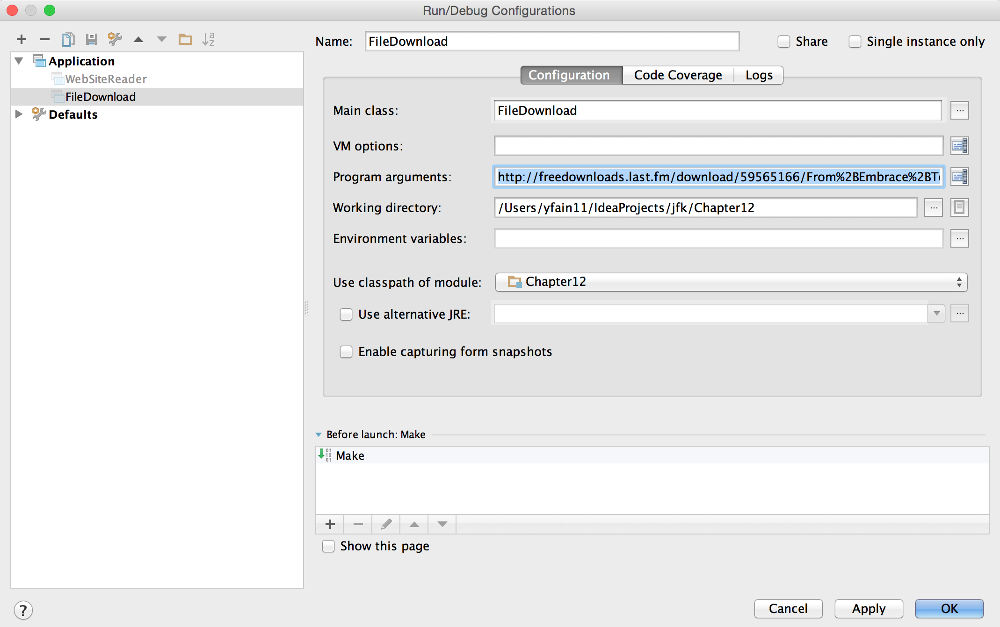

Preface
The book "Java for Kids" was written by Yakov Fain, Java Champion. The goal is to help students learn to program in the most popular language in the world: Java. This book starts from an introduction to Java and then explains how to write programs that have Graphic User Interface by writing the Tic-Tac-Toe and Ping-Pong games.
The "Java for Kids" book can be used in multiple ways:
-
Teenagers can use it to teach themselves
-
Parents can use this book for teaching their kids Java
-
School teachers can use it as a text book in introductory classes on programming
-
University professors can use it as a supplement to their "Computer Science 101" classes.
While this book is written for 12+ year old kids, adults looking for an easy intro to Java may find this book useful as well. In the book you’ll be using the same tools used by professional programmers. As a bonus, the last chapter will teach you how to publish your code on the Web on a super popular site called GitHub. Millions of programmers share their programs there and you should too.
Yuri Fain produced illustrations for this book. If this material seems too easy for you get Yakov’s video course "Introduction to Java and Java EE" at Parleys.
This book currently has no official publisher and the content is offered for free, but the author would appreciate a donation if you find this book useful.
I have created an Internet group where readers can post their questions/comments regarding the content of this book. Readers are encouraged to help each other, and I will be monitoring this group too.
If you find an error in the code samples email your comments directly to me at yakovfain@gmail.com or open an issue at code samples repository on GitHub.
All rights reserved. © Yakov Fain 2015.
1. Writing Your First Program
People communicate with each other using different languages. These days people often spend more time communicating with computers, smartphones and tablets than with each other. We casually say to each other, “I’ve installed a cool application that can do this and that”. In other words, people use applications to communicate with computers. So someone has to write these applications. Those who write computer applications are known as programmers or software developers.
Programmers write applications like games, calculators, and text editors using different programming languages. Without applications, computers, smartphones, and game consoles would have very limited use for most people. Computing devices usually come with an Operational System (OS) installed such as Windows, Mac OS, iOS, and Android, but imagine an iPhone that has no applications at all or a laptop that can only show the OS logo. Who would want such a device?
Programmers create applications using different programming languages such as Java, Python, C++, JavaScript, C, and many others. Some of the languages are good for producing small programs that require very little memory space and can be embedded in computer chips. Some programming languages are great for programming Web applications that run inside the Web browsers. Some programming languages are great for running on the server and handling thousands of users’ requests. There are languages that are fine tuned for creating beautiful graphics. Similar to human languages, programming languages have a set of words (a.k.a. keywords) and the rules for using them (the syntax).
In this book you’ll learn the syntax of the Java programming language, which can be used for programming most types of applications. And for many years the Java programming language has been one of the world’s most popular computer languages. In fact, as I write this, estimates are that there is an estimated 10 million professional Java programmers in the world, but what makes it so popular?
For one thing, the same Java program can run on different devices: from desktop computers running Windows or MacOS to handheld devices such as smartphones and tablets. As a matter of fact, Java programs don’t care what device they’re running on because they run inside a kind of virtual hardware called a virtual machine. We’ll talk about the Java Virtual Machine a bit later in this chapter.
Java can be embedded in tiny microchips that control various home appliances or industrial devices like the ones that power smart homes where the heat or light can be programmed remotely from your phone. These Internet-connected things can be programmed in Java.
Programming languages can have some general characteristics and we say that Java is an object-oriented language. Its program elements (classes) represent objects from the real world. For example, you can create a class called Car and give it attributes that real cars have, like doors, wheels, and so on. Next, you can create another class based on the Car class, like Tesla, with all the features of the Car class (doors, wheels) plus an electric motor.
And the software required to write Java is free. With so many million of professional Java programmers in the world, you’ll find lots of sample program online so if you’re run into a problem, you can either find the solution by searching or ask in one of the popular online forums like Stack Overflow, and someone will probably answer your question!
But enough talk. Let’s start learning Java.
1.1. Installing Java on Your Computer
To start programming in Java you need to download the Java Development Kit (JDK) from the company called Oracle, which makes releases and updates of Java versions. The full name of the software to download is Java SE Development Kit. We’ll download the Java SE 8, which was the latest version of Java available while writing this book. Just visit Oracle’s Web site. Accept the license agreement and select the proper link depending on the Operational System (OS) installed on your computer.
|
Note
|
While Java programmers need JDK installed, the users of your applications need to have Java Runtime Environment (JRE) installed on their machines. JRE is included in JDK, but can be downloaded separately as well. |
If you use Windows OS, download the file named jdk-8-windows-i586.exe. Since I work with Apple computers running Mac OS X, the file jdk-8-macosx-x64.dmg is my Java installer. Run your installer program, agree with all default answers (just press the button Next) and you’re almost ready to go.
In Mac OS, Java is installed in the folder /Library/Java/JavaVirtualMachines/jdk1.8.0.jdk (there could other digits after zero, which indicates the update number). On Windows computers it’ll be installed under c:\Program Files\Java\jdk1.8.0, where c: is the name of your hard drive or SSD. If you use Mac OS, your installation is complete.
1.1.1. For Windows Users Only
If you use Windows, you’ll also need to add Java to the environment variable Path. Click on the menu Start, Control Panel, System and search for Environment Variables. You’ll see all system variables that exist in your OS As shown on the screenshot Windows OS - System Variables. If you have administrator’s rights onto your Windows PC, you can set user variables that will apply only when a certain user logs into your PC, or system variables that will apply to all users.

Press the lower button Edit and add the bin directory from your JDK at the beginning of the Path variable value. For example, add c:\Program Files\java\jdk1.8.0\bin; if this is where your JDK is installed:

Now the Windows installation of JDK is complete! I’m sure you’re eager to start writing your first program now so let’s do it.
1.2. Three Main Steps in Java Programming
If you have an idea what to program, typically you’ll need to perform the following three steps:
-
Write the program in Java and save it in a file.
-
Compile the program to translate it from Java language into a special byte code that JVM understands.
-
Run the program.
1.2.1. Command Window
In this chapter we’ll compile and run the Hello World program in the Command window if you use Microsoft Windows or from Terminal if you’re on Mac OS.
In Windows, to open the Command window click on the Start menu and enter the letters cmd in the field that reads Search programs and files . On a Mac, open the Spotlight window by clicking on the looking glass icon at the top right corner of the screen, type the word Terminal and hit the Return on the keyboard.
First, create a folder named practice by entering the following command:
mkdir practice
This will be the place where we’ll store all of our Java programs.
1.2.2. Step 1 – Write the Program
Starting from Chapter 2, we will use a special application called Integrated Development Environment (IDE) to write, compile, and run programs. But to get a better understanding of how things work, let’s use any plain text editor (e.g. Notepad, TextEdit et al.) to type the code for our first Java program. Afterwards, save the code in a text file with a name ending in .java.
For example, if you want to write a program called HelloWorld, enter its code in a text editor.
Here is the program that prints the words Hello World! on your computer’s screen:
public class HelloWorld{
public static void main(String[] args){
System.out.println("Hello World!");
}
}Save the above code with the name HelloWorld.java in the folder practice. Keep in mind that you are not allowed to use blank spaces in Java file names.
I’ll explain how and why this program works a little later in this chapter. For now, if you followed each step correctly, the program will print the words Hello World on the screen that we will go over in step 3.
Programmers often use the words the source code to refer to a program. So it’s safe to say the we wrote the source code of the program Hello World. Unless you’re experienced Java programmer, you can’s just say if this program is written correctly. Let’s proceed to Step 2 to find out.
1.2.3. Step 2 – Compile the Program
Now you need to start Java compiler asking to turn the source code of Hello World program into byte code that JRE understands. The program named javac is Java compiler, which is installed on your computer as a part of the JDK and is located in the bin folder in your JDK.
Change the directory to practice with the command cd practice. If you never used the command cd before, read the online instructions on how to do it on Windows or on Mac OS. Now compile the program using the following command:
javac HelloWorld.java
You won’t see any confirmation message that your program HelloWorld has been compiled successfully. Having no messages means there is no problems. Type a command dir on Windows or ls on Mac and you’ll see the list of files in folder practice. This is how it looks in my Terminal window:

First, I’ve entered the pwd command to make sure I’m in the practice folder. You should see there a new file named HelloWorld.class. This proves that your program has been successfully compiled. Your original file HelloWorld.java is also there, and you can modify this file later to print Hello Mom or something else.
If the program has syntax errors, let’s say you forgot to type the last curly brace, Java compiler will print an error message. Now you’d need to fix the error, and recompile the program again. If you have several errors, you may need to repeat these actions more than once until the file HelloWorld.class is created.
1.2.4. Step 3 – Run the Program
Now let’s run the program. In the same Command or Terminal window enter the following:
java HelloWorld
After running this command, you’ll see the text Hello World! printed in the Terminal window as shown on Running HelloWorld. Have you noticed that this time you’ve used the program java and not javac? This is how you start JRE providing it the name of the application to run (HelloWorld in this case).

Keep in mind that Java does not treat capital and small letters the same, which means that if you named the program HelloWorld with a capital H and a capital W, do not try to start the program helloworld or helloWorld – the JRE will complain. The file name should match the class name too. Typically, each file of your application contains the code of one class even though you can keep the code of more than one class in the same file.
Now let’s have some fun - try to guess how to modify the code of the program that prints Hello World. I’ll explain how this program works in the next chapter, but still, try to guess what has to be done to say hello to your pet, friend or print your address. Go through all three steps to see if the program still works after your changes. If you don’t have a pet, you can always say hello to my puppy - his name is Sammy. Are you up for the challenge to write a program that prints Hello Sammy! on the screen?
In the next chapter you’ll learn how to write, compile and run your programs in a more convenient environment than just a text editor and a Command window.
2. Getting Comfy In IDEA IDE
Most programmers write, compile and run their applications in special programs that go by the name Integrated Development Environment (IDE). Any IDE provide help as you type code, highlights the Java keywords, has a Help menu that describes all elements of the language, and makes it easier to find and fix errors in your programs. There are several excellent IDE that are free to use. The most popular are Eclipse, NetBeans, and IntelliJ IDEA. In this book we’ll use IntelliJ IDEA Community Edition. This is an excellent IDE for developing Java applications, and if, later on, you’ll decide to program in other programming languages, IDEA allows supports more than a dozen other languages too.
In this chapter we’ll start with downloading and installing IntelliJ IDEA IDE (let’s just call it IDEA). Then we’ll create a project called Hello. You’ll see that creating Hello World application is a lot easier inside IDEA.
2.1. Installing IntelliJ IDEA
There are two version of IDEA IDE - Ultimate and Community. The Ultimate version is not free, but it has additional features useful for developing enterprise applications. But this book is about learning basics of Java programming, and using free Community edition is all we need.
Open the Web page IntelliJ IDEA and click on the Download Community button. It’ll download the installer program with the name that starts with ideaIC - just run it. On MAC OS the installer doesn’t ask any questions. Just drag the icon onto the Applications folder.

On Windows, you’ll need to select the folder where IDEA will be install as shown below. Windows installer will also offer to create a desktop icon for IDEA - agree with this.

In several seconds you’ll get the IDEA installed. If you use MAC OS, find it using the Spotlight on the top right corner of the screen and click on it. If you use Windows, click on the newly created IDEA icon on the desktop. The first question IDEA asks is if you want to import the settings from the older versions of IDEA - no we don’t. Next comes this Welcome screen:

2.2. Creating Your First Project
In IDEA, your Java applications will be located in separate projects. As you probably guessed, you’ll need to select the option Create New Project on the Welcome screen. Then IDEA will ask you about the type of the project you want to create.

Yes, we want to create a Java project. In IDEA projects consist of modules. By selecting Java we state that our project will have a Java module. Hit the button Next and then again on the following window that will ask about selecting a template. Now we need to give our project a name and select the JDK to be used with this project.

We don’t want our project to be untitled, so replace this name with hello in the top box. Note how the name of the folder in the Project location box changes accordingly.When you’ll try to do it on your computer, the project location will be different than mine. Now you need to select the JDK. If you never worked with Java before, the only JDK you have is the one installed in Chapter 1. But Java programmers sometimes have more than one JDK installed. For example, the may not be allowed to use the latest JDK 8 for work projects, so the keep the JDK 7 around, but all the fun projects will be created with JDK 8. We don’t have such restrictions, so JDK 8 is our only choice. But where to find it?
Click on the button New, select the menu item JDK, and you’ll see a familiar screen for browsing the folders on your computer. The Chapter 1 in the section Installing Java on Your Computer has the answer for both MAC and Windows. Since I use MAC, I’m choosing Library, Java, JavaVirtualMachines, jdk1.8.0.jdk. Now the previous window looks different.

Press the button Finish and your new project is created. Every time you start IDEA it offers you little tips on how to use its cool features. You can opt out from this, but I recommend you to read them - you might find some little gems that will make your work with IDEA more fun. The project hello is ready, and you can start writing your Hello World program.

This project consists from the module hello and External Libraries. The source code of your program(s) will be located in the folder src in the hello module. The file hello.iml is the place where IDEA remembers the setting of the project hello - you don’t need to touch it. Under External Libraries you’ll find a bunch of files with the names that end with .jar. These JAR’s are the libraries of code that came with JDK.
A simple project like our HelloWorld will have just one file with the source code HelloWorld.java. More advanced projects will consist of multiple files. To simplify the application deployment all these files could packaged in one or more JARs too. Both JRE and Java SDK include dozens of JARs. Java comes with a jar utility that is used to archive multiple Java classes and other files into a file having the name extension .jar. Internal formats of .jar and .zip files are the same. If your IDEA project will have multiple classes, you can package them into one JAR by using the menu File | Project Structure | Artifacts and then selecting the type JAR.

2.3. Creating HelloWorld Class in IDEA
Java programs consist of classes, and you’ll start getting familiar classes' internals in the section "How Does Hello World Work". Let’s recreate the HelloWorld class from Chapter 1 in IDEA. Select the folder src in your project, and then select the menu File | New | Java Class. You’ll see a little popup window asking for a class name. Enter HelloWorld there.

In a second IDEA will create an empty class HelloWorld shown below. The white area on the right is a very smart text editor that will allow you to not only enter the text of your program, but will also help you suggesting what to type next as you type. This editor is really smart!

The text between /** and */ is one of the ways to write comments in your programs. This is an area where you can type any text you want that describes your program in general or any particular code inside the class. We’ll talk about various ways to write comments in the next chapter.
2.3.1. Adding the method main
It’s time to key in the main method declaration inside the class like we did in Chapter 1:
public static void main(String[] args)
You can certainly type the above declaration, and IDEA will obediently start helping as you start typing. For example, I started typing the word public, and after entering the pu IDEA suggested me the following selection of keywords that are appropriate in the current location inside the class.

Pressing the button Tab on the keyboard will turn pu into public. Nice! You can also press the keys Control-Space to see suggested code completion at any time. But there is even a faster way to enter the declaration of the main method. Just type in the first letters of these keywords psvm, and press the Tab key. IDEA will unfold these letters into the following:
public static void main(String[] args) {
}Great job, IDEA! Such code completion minimizes typing and the number of typos you could make. At the end of this chapter in the section Additional Reading you’ll find the link to a Web page showing more advanced features of code completion in IDEA. It may be a little early for you to understand everything that’s explained there, but bookmark a link to this page for future references.
|
Tip
|
To become a real pro in IDEA, you should use the hotkeys, which are combinations of key-presses on the keyboard. With hotkeys you’ll be able to navigate in your IDEA projects a lot faster than clicking through menus. You can find the link to the document listing IDEA’s hotkeys in the section Additional Reading at the end of this chapter. |
Now we have the class HelloWorld with an empty method main. The word method means action. To run a Java class as a program, this class must have a method called main. Usually your applications will have many classes, but only one of them will have the method main. This class becomes the entry point in your application.
To complete our program, place the cursor after the curly brace in the line with main, push the button Enter and type the following on the new line:
System.out.println("Hello World!");
After learning about the psvm shortcut you may be wondering, is there a way to do a similar trick with System.out.println(). OK, I’ll tell you the secret shortcut for this. Just key in sout and press the Tab key. Voila! The sout magically turns into System.out.println();. Java programmers often use printing to the console so creators of IDEA provided a shortcut for it.
To save the code changes and compile the class, just press at the same time Ctrl-S on your keyboard. If you did not make any syntax errors, you won’t see any error messages – the program is compiled. But let’s introduce a syntax error on purpose to see what’s going to happen. Erase the last curly brace in the class HelloWorld and hit Ctrl-S again. IDEA will add a squiggly line where Java compiler found the error, the line is marked with the red mark on the right, and if you’ll hover the mouse pointer over this little red rectangle, you’ll see the error message:

As your project become larger, it’ll have several files and compiler may catch more than one error. Can you see a list of errors from all classes? By default, IDEA doesn’t compile all the classes from your project. But you can request compiling of the entire project every time you make a change or save the source code. Go to the IDEA menu Preferences (or Settings), select Compiler and check off the option Make project automatically. Now select the menu View | Tool Windows | Problems to see all the problems in one list:

In our case we have only one compiler error. Java reached the end of file while parsing (trying to understand your code), and something could not be found - the curly brace, of course. But what this mysterious (8,6) means? The error was found in the line number 8 around the sixth character from the left. To see line numbers, right-click on the gray vertical bar to the left of the code editor and select the option Show Line Numbers. Now it’s easier to map the error messages to the lines in the source code:

2.3.2. Running HelloWorld in IDEA
After all syntax errors are fixed, compiler automatically creates the HelloWorld.class when you save the code. IDEA doesn’t show you .class files, but if are curious where they are, open the menu File | Project Structure, to see he folder where compiler’s output goes. When a program is written, tested, and does what it supposed to do (e.g. print Hello World), and if you want to give it to your friends you’ll need to give the only compiled .class files - they don’t need the source code of your program. They’ll also need the JRE (not JDK) installed on their computer.
But us, Java programmers can run our programs not only from a command window as in Chapter 1, but right from the IDE. Just right-click on the name HelloWorld in the Project view and select the menu item Run HelloWorld.main(). The program will run and you’ll see the result in the Console View right inside IDEA:

2.4. How Does HelloWorld Work?
It’s great that you’re following my instructions and the program works. But what exactly is happening in the program HelloWorld? What are all these keywords, braces and parentheses for?
Every Java program has at least one class, and Chapter 3 explains classes in detail. Classes can contain methods - these are the actions that the class can perform. The class HelloWorld has only one method main, which is a special action - it’s a program starter or an entry point of any Java application. You can tell that main is not a Java keyword, but a method, because it has parentheses after the word main. Methods can call (invoke) other methods, for example our method main calls the method println to display Hello World! on the screen.
Each method starts with a declaration line a.k.a. a method signature:
public static void main(String[] args)
This method signature tells us the following:
-
This method has
publicaccess level. The keywordpublicmeans that the methodmaincould be accessed by any other Java class or the JRE itself. -
This method is
static. The keywordstaticmeans that you don’t have to create an instance of theHelloWorldobject in memory to use this method. We’ll talk about classes and object instances in the next chapter. -
Does the method
mainreturn any data? Say, if you’ll write a method to add two numbers, it can return a result. The keywordvoidmeans that the methodmaindoesn’t return any data to whoever calls it (JRE in this case). -
Right before parentheses goes the method name -
main. -
Some methods have parameters (a.k.a. arguments), which go inside the parentheses. It’s the data that could be given to the method from a calling program. The method
mainhas parameters - and array of text valuesString[] args. You’ll learn how to use the parameters of the methodmainin Chapter 9 in the section Command Line Arguments.
A Java program can consist of several classes, and each class may have methods. Usually, a Java class has several methods. For example, a class Game can have the methods startGame, stopGame, readScore, and so on. But only one class in the application will have the method main.
The body of our method main has only only one statement:
System.out.println("Hello World!");
Every statement or a method call must end with a semicolon. The method println`knows how to print data on the system console (command window). Java method names are always followed by parentheses. If you see a method with empty parentheses, this means that this method does not have any arguments and doesn’t expect to receive data any data. The above method `println has one argument - a String with the value Hello World!.
The System.out means that the variable out is defined inside the class System that comes with Java. How are you supposed to know that there’s something called out in the class System? IDEA will help you with this. After you type the word System and a dot, IDEA will show you everything that is available in this class. At any time you can also put a cursor after the dot and press Ctrl-Space to bring up a help box similar to this one:

This tells me that the Java class System has a variable out of type PrintStream. Wonder what’s PrintStream? Click on out`in your code and select the menu View | Quick Documentation to read the dry documentation. The fact that after `out goes a period followed by a method name after`out.println()` tells us that out represents an object, which aparently has a method called println().
We call it a dot notation. We write class_name.method_name or variable_name.method_name. Say you have a class PingPongGame that has a method saveScore. If the method saveScore was declared with two arguments player and score, this is how you may call this method for Dave who won three games:
PingPongGame.saveScore("Dave", 3);
In this example, the arguments may be given to the method for some kind of processing like saving the score on the disk. Since the name Dave was placed in parentheses, we can guess that the type of the first argument was String, which is used for texts. The second arguments is clearly of a numeric type but we can tell what’s the exact type only after reading the declaration of the method saveScore inside the source code of the class PingPongGame.
In the next chapter we’ll spend a lot more time seeing what Java classes consist of.
3. Meet Classes - the Main Language Constructs
In the real world you see and use various objects, and each of them is of some kind like toys, food, animals, electronics et al. In Java instead of saying a kind of objects, we say a class of objects. In other words, each object belongs to a class. A class is like a blueprint of an object. In this chapter you’ll get familiar with classes - the main constructs of the Java language.
Any program that you’ll write will have at least one class. You’ll learn how to declare a class and how to create one or more object based on the class declaration. You’ll also learn about a class internals – what a class can consist of. Finally, I’ll show you how to create a class that inherits features of another class.
Java defines a number of data types. Some of them are simple, like int, which represents integer numbers. Some of them are more complex - they are called classes, like System, which can be used for things like printing texts on the screen, exiting a program or cleaning computer’s memory.
When you installed Java on your computer, you installed thousands of Java classes. Your Java programs will also consist of classes that can represent objects from the real world. If a class is a data type, an object is a representative of a specific type. For instance, you can see ten dogs on the street, and they all represent the class Dog.
Programmers start working on any application with deciding which Java classes to include in the program and how many objects of each type to create. Say, they can define a class Player in the gaming application and create two object instances of this type.
3.1. Dissecting Classes and Objects
While programmers talk to each other, they may say "Do something with the class Player" or "Do something with the object Player". We need to learn the difference between the meaning of the words class and object.
3.1.1. Classes
Let’s see what Java classes can consist of. Actually a very simple class can have nothing inside. Take a look at this class declaration:
class VideoGame {
}This class is empty - it knows nothing and can’t do anything, because there is no code between the curly braces. From the Java syntax perspective this class is legit, and compiler won’t complain - there is a valid keyword class followed by its name VideoGame, and the opening curly brace has the matching closing one. But we need classes that can do stuff. We can place methods and attributes inside the class.
-
Methods define actions that a class can perform.
-
Attributes describe various properties of a class.
A method consists of a callable code fragment, that can be called (and executed) by name from another part of the program. For example, a class can have a method named saveScore that contains a dozen of lines of code to save the game score. Let’s add some methods and attributes to the class VideoGame. This class may have several methods, which can tell what an object of this class can do: start the game, stop it, save the score, ask for additional lives on Facebook, and so on. This class also may have some attributes (a.k.a. fields): color, price and others. An object that represents the class VideoGame can look like this:
class VideoGame {
String color;
int price;
void start () {
// The code to start the game goes here
}
void stop () {
// The code to stop the game goes here
}
void saveScore(String playerName, int score) {
// The code to save score goes here
}
}This class has two attributes color and price. The color attribute has the String data type, which is used for storing any text. The price is of a type int for storing integer numbers. The class VideoGame has three methods: start, stop, and saveScore. These are the actions that our video game should perform. Each of these methods declarations starts with a keyword void, which means that these method do not return a value to the caller of the method. In the next chapter I’ll show you a class Fish, which will include a method dive that returns a value.
At this point each of these methods has just a single line that starts with two slashes //.
|
Note
|
If a line starts with two slashes, it contains a single line comment - just the description of a code fragment. If you need to write several lines of comments, just type in a slash followed by the asterisk /*, then key in as many lines of a text as you want followed by */.
|
Our class VideoGame can be used as a starting building block for pretty much any video game – all game consoles have the color attribute, all of them allow to save score, and all of them have price tags.

We can be more specific and create another Java class called PlayStation4. It also belongs to the family of video games, but has some properties that are specific to the model Play Station 4, for example sharing on Facebook and Twitter. So among other things, the class PlayStation4 will have methods shareOnFacebook and shareOnTwitter.
class PlayStation4{
int hardDiskSize;
// Some other attributes and methods go here
void shareOnFacebook(){
// Code to share on Facebook go here
}
void shareOnTwitter(){
// Code to share on Twitter go here
}
}3.1.2. Objects
We’ll often use the phrase create an instance of an object, which means to create an object in computer’s memory based on some class declaration. If a game factory will produce ten thousand of such games, a programmer can say that they created ten thousand instances of the class PlayStation4.
The factory description of PlayStation4 relates to an actual game the same way as a Java class relates to its instance in memory. The process of building actual games based on this description in the game factory is similar to the process of creating instances of PlayStation4 objects in Java. For example, the next code sample creates one instance of the class PlayStation4 and calls its method shareOnFacebook.
public class CreatePlayStation4Objects {
public static void main(String[] args) {
// create one instance of PlayStation4 class
PlayStation4 firstPlayStation = new PlayStation4();
// call the method shareOnFacebook
firstPlayStation.shareOnFacebook();
}
}In many cases, a program can use a Java class only after creating the instance of an object. The same with manufacturers - they create thousands of game copies based on the same description. Even though these copies represent the same class, they may have different values in their attributes - some of them are black, while others can be silver. Some of them have 500GB hard disk dive, while some are upgraded to 1TB.

In programmer’s jargon, you can create multiple instances of the PlayStation4 objects with different values in the hardDiskSize attribute.
3.2. Java Data Types and Variables
If you already started learning algebra in school, you are familiar with the expressions like x=2, which means that the variable x represents the number 2. In programming, we used variables a lot. But in programming a variable can store a value in computer’s memory so you can access these values from various methods in your classes. Using the same algebra example, we can say that we assign the value of 2 to the variable x. The equal sign represents the assignement of the value located to the right of the equal sign to the variable located on the left.
But Java variables can store not only numbers, but other types of data too, so we need to declare the variable type and the name and then assign some value to it. For example, the class attribute that has a value of the disk size can be stored in the variable of type String that’s called hardDiskSize that can be declared like this:
String hardDiskSize;If the size of the hard disk is 500GB, we can assign this value to the variable hardDiskSize as follows:
hardDiskSize="500GB";String values are placed inside the quotes, and the numbers aren’t.
The method parameters (a.k.a. arguments) are also stored in variables. The method saveStore has two arguments: playerName of type String and score of type int:
void saveScore(String playerName, int score)
3.2.1. Primitives
Simple Java data types are called primitives they are written in small letters (e.g. int, long, char, boolean). So the score is of a primitive data type, while the playerName is not. In Java you have to declare the type and the name of a variable first, and then use it.
Remember algebra equations like y=x+2? In Java you’d need to start with declaring the variables x and y of some numeric data type like int, float or double:
int x;
int y;
Now you can use the variables. The next two lines show how you can assign them values. If your program assigns the value of five to the variable x, after evaluating x+2 the variable y will be equal to seven:
x=5;
y=x+2;
In Java you are also allowed to change the value of a variable in a somewhat unusual way. The following two lines change the value of the variable y from five to six:
int y=5;
y++;
Despite the two plus signs, JVM is still going to increment the value of the variable y by one. The y++ means, read the value of the variable y, increment it by one, and assign it back to y. The longer syntax to achieve the same result would be y=y+1. After the next code fragment the value of the variable myScore is also equal to six:
int myScore=5;
myScore=myScore+1;
You can also use multiplication, division and subtraction the same way. Look at the following piece of code:
int myScore=10;
myScore--;
myScore=myScore*2;
myScore=myScore/3;
System.out.println("My score is " + myScore);What do you think this code prints? IntelliJ IDEA has a useful tool called Groovy Console (it’s under the Tools menu). It allows you to test any code snippet (like the one above) without even creating a class or methods. If you’ll copy the above code fragment into Groovy Console and hit the green button play, you see that the value of the variable myScore is 6.

To see the result of the score calculations, just click on the console tab at the bottom of the screen:My score is 6
In this example the argument of the method println() was constructed from two pieces – the text “My score is ” and the value of the variable myScore. Putting two or more strings together is called concatenation. Even though myScore is a number, Java is smart enough to convert this variable into a String, and then attach it to the text "My Score is ".
Look at some other ways of changing the values of the variables:
myScore=myScore*2; // it's the same as `myScore*=2;
myScore=myScore+2; // it's the same as `myScore+=2;
myScore=myScore-2; // it's the same as `myScore-=2;
myScore=myScore/2; // it's the same as `myScore/=2;There are eight primitive data types in Java, and you have to decide which ones to use depending on the type and size of data you are planning to store in your variables. These are Java primitives:
-
Four data types for storing integer values –
byte,short,int, andlong. -
Two data types for values with a decimal point –
floatanddouble. -
One data type for storing a single character values –
char. -
One logical data type
booleanthat allows only two values:trueorfalse.
You can assign an initial value to a variable during its declaration, and this is called variable initialization, for example:
char grade = 'A';
int chairs = 12;
boolean playSound = false;
double nationalIncome = 23863494965745.78;
float gamePrice = 12.50f;
long totalCars =4637283648392l;In the last two lines the values have letters at the end. The f is for float and l means long.
If you declare, but won’t initialize primitive variables, Java will do it for you by assigning zero to each numeric variable, false to boolean variables, and a special code ‘\u0000’ to variables of type char.
3.2.2. Classes as Data Types
Not all variable have primitive data types. For each primitive data type has a corresponding wrapper class, for example Integer, Double, Boolean, etc. These classes also can store the values of the corresponding primitive type, but also have useful methods to convert data from one type to another.
In some cases there is no primitive type that suit your needs. For example, there is no primitive type for storing long texts. While the char data type is used to store only one character, Java also has a class String for working with a longer text, for example:
String lastName="Smith";
If you declare your own class, consider it a new data type, and you can start declaring variables of this type, for example, you can declare the variable named myFirstGame of type VideoGame:
VideoGame myFirstGame
Java programmers have agreed to name variables starting with small letters. To make the variable name more meaningful, it can consist of several words, and each word starts with the capital letter as in myFirstGame. You’re also allowed to start variable names with the dollar sign like $myMoney or underscore: _myBestFriend. Variable names cannot contain spaces.
Java also has a special keyword final, and if it’s used in a declaration of a variable, it means that you can assign a value to this variable only once, and this value cannot be changed afterwards. In Java we usually name final variables using capital letters:
final String STATE_CAPITAL="Washington";
3.2.3. How Much Memory is Needed
Variables are stored in computer’s memory, and occupy more or less space depending on the data type. We measure memory in bits, bytes, kilobytes (1024 bytes), megabytes (1024 kilobytes or Kb), gigabytes (1024 Mb) and so on. A bit is the smallest piece of data that can be stored in memory. It can hold either 1 or 0. A byte consists or eight bits.
A char variable occupies two bytes in memory.
An int and a float take four bytes of memory each.
Variables of long and double types use eight bytes each.
Only one bit is required to store the value of boolean variable.
Numeric data types that take more bytes can store larger numbers.
3.3. Creation of a Pet
Let’s design and create a class Pet. First we need to decide what actions our pet will be able to do. How about eat, sleep, and say? We’ll program these actions in the methods of the class Pet. We’ll also give our pet the following attributes: age, height, weight, and color.
It’s time for hands-on work. Start IDEA IDE and create a new project as explained in Chapter 2. But this time name it MyPet instead of Hello. Click on the src folder in IDEA and create a Java class called Pet using the menu File | New | Java Class.
Your screen should look similar to this one:

Now we are ready to declare attributes and methods in the class Pet. Java classes and methods enclose their bodies in curly braces.
To declare variables for class attributes we should pick data types for them. I suggest an int type for the age, float for weight and height, and String for the pet’s color.
public class Pet {
int age;
float weight;
float height;
String color;
}The next step is to add some methods to this class. Before declaring a method you should decide if it should take any arguments and should return a value. This is what I suggest:
-
The method
sleep()will just print a message Good night, see you tomorrow – it does not need any arguments and will not return any value. -
The same is true for the method
eat().It will print the message I’m so hungry, let me have a snack like nachos!. -
The method
talk()will not be printing any messages, but will the prepare a message based on the word or a phrase passed to this method as an argument. This method will build a phrase using the argument and will return it back to the calling program.
The new version of the class Pet will look like this:
public class Pet {
int age;
float weight;
float height;
String color;
public void sleep(){
System.out.println(
"Good night, see you tomorrow!");
}
public void eat(){
System.out.println(
"I’m so hungry, let me have a snack like nachos!");
}
public String talk(String aWord){
String petResponse = "OK!! OK!! " +aWord;
return petResponse;
}
}This class represents these friendly little monsters from the "real world":

Let’s talk now about the signatures of each methods in detail starting with the method sleep:
public void sleep()
This method signature tells us that sleep() can be called from any other Java class ( because it’s public). This method does not return any data (the keyword void). The empty parentheses mean that this method does not take any arguments - it does not need any data from the outside world to print the same text.
The signature of the method eat() is similar to sleep().
The signature of the method talk() looks like this:
public String talk(String aWord)
This method can also be called from any other Java class, but has to return some text, which is prescribed by the keyword String in front of the method name. Besides, it expects some text data from outside, hence the argument String aWord.

How do you decide if a method should or should not return a value? If a method performs some data manipulations and has to give the result of these manipulations back to the calling class, it has to return a value. You may say, that the class Pet does not have any calling class! That’s correct, so let’s create one called PetMaster. We’ll create it in the same IDEA project MyPet.
This class will need a method main() to become a runnable program (the class Pet didn’t have one). Remember from Chapter 2, typing psvm followed by the Tab key will quickly create the method main(). We’ll place the code communicating with the class Pet inside the method main().
|
Note
|
Do not forget to press Ctrl-S (CMD-S on Mac) to save and compile this class! |
public class PetMaster {
public static void main(String[] args) {
String petReaction; (1)
Pet myPet = new Pet(); (2)
myPet.eat(); (3)
petReaction = myPet.talk("Tweet!! Tweet!!"); (4)
System.out.println(petReaction); (5)
myPet.sleep(); (6)
}
}-
The variable
petReactionwill store the value returned by the methodsay. -
This is how to create an instance of the object
Petusing the Java operatornew. This line declares a variable of typePet- that’s right, you can treat any classes created by you as new Java data types. -
Calling the method
eat()on the objectPet. After the instance ofPetwas created, the variablemyPetknows its address in memory. So you can call the methodeat()(as well as any other) on this particular instance ofPet. -
If a method returns a value, specify a variable that will store returned value to the left of the equal sign. In out code it’s
petReactionof typeString. Such variable should have the same type as the return value of the method. -
The value of the variable
petReactionis passed as an argument to the methodprinlnfor output. -
Calling the method
sleep()on the objectPet.
To run the class PetMaster right-click on its name in the Project view in IDEA, and select the option Run PetMaster.main(). This program will output the following:
I’m so hungry,let me have a snack like nachos! OK!! OK!! Tweet!! Tweet!! Good night, see you tomorrow!

At this point the project MyPet consists of two Java classes: Pet and PetMaster. The role of the class Pet is to represent attributes and behavior of a pet, while the class PetMaster starts the program, instantiates the class Pet and calls its methods. Your typical projects will consist of multiple Java classes, but only one of them will have have the main() method, which is the entry point of the application.
3.4. Inheritance – a Fish Can Be a Pet Too
In the real life, every person inherits some features from his or her parents. Similarly, in the Java world you can also create a new class, based on the existing one. The class Pet will help us learn yet another important feature of Java called inheritance.
The class Pet can include behaviors and attributes that are shared by many pets – all of them eat and sleep, some of them make sounds, their skins have different colors, and so on. On the other hand, not all pets are the same. Dogs bark, fish swim and don’t make sounds, parakeets speak better than dogs. But all of them eat and sleep. That’s why it’s easier to create a class Fish that will inherit some common behavior and attributes from the class Pet, rather than creating Dog, Parrot or Fish from scratch every time.
Java has a special keyword extends that will do the trick. Create in IDEA a new class Fish and then add to its declaration extends Pet so it’ll look as follows:
class Fish extends Pet{
}This class Fish is a subclass of the class Pet. Accordingly, the class Pet is a superclass of the class Fish. In other words, you use the class Pet as a template for creating a class Fish. The keyword extends defines relationship between classes. Since our Fish extends a Pet, we can say that a fish is a pet. But we can’t say that a pet is a fish.
Even if you will leave the class Fish empty as it is now, you can still use every method and attribute inherited from the class Pet, because a fish is a pet! Take a look, we’re creating an instance of the object Fish and are calling its method sleep():
Fish myLittleFish = new Fish();
myLittleFish.sleep();Even though we have not declared any methods in the class Fish yet, we call the method sleep(), which was declared in its superclass Pet! In Java all classes are automatically inherited from the class Object. Even though we’ve declared the class Pet without using the keyword extends it still extends the class Object. With the keyword extends you can build class hierarchies. For example, many animal classes can extend the class Pet.

Let’s not forget, however, that we’ve created the class Fish as a subclass of Pet, because we wanted to add some additional features that only fish have and reuse some of the code that we wrote for a general pet.For instance, not all pets can dive, but fish certainly can. Let’s add a new method dive() to the class Fish.
public class Fish extends Pet {
int currentDepth=0;
public int dive(int howDeep){
currentDepth=currentDepth + howDeep;
System.out.println("Diving for " +
howDeep + " feet");
System.out.println("I'm at " + currentDepth +
" feet below sea level");
return currentDepth;
}
}The method dive() has an argument howDeep that tells the fish how deep it should go. We’ve also declared a class variable currentDepth that will store and update the current depth every time you call the method dive(). This method returns the current value of the variable currenDepth to the calling class. The plus signs in the pintln() lines are not about addition - we’re building strings of characters by concatenating their pieces.
Using IDEA create another class FishMaster that will look like this:
public class FishMaster {
public static void main(String[] args) {
Fish myFish = new Fish();
myFish.dive(2);
myFish.dive(3);
myFish.sleep();
}
}The method main() instantiates the object Fish and calls its method dive() twice with different arguments - two and three. After that, it calls the method sleep(). When you run the program FishMaster, it will print the following messages:
Diving for 2 feet I’m at 2 feet below sea level Diving for 3 feet I’m at 5 feet below sea level Good night, see you tomorrow
Have you noticed that beside the methods defined in the class Fish, the FishMaster also calls method sleep() from its superclass Pet? This is what inheritance is all about – you do not have to copy and paste code from the class Pet – just use the keyword extends, and the class Fish can use Pet’s methods!

One more thing, even though the method dive() returns the value of currentDepth, our FishMaster does not use it. That’s fine, - our FishMaster does not need this value, but there may be some other classes that will also use the class Fish, and they may find knowing the current depth useful. For example, think of a class FishTrafficDispatcher that has to know positions of other fish under the sea before giving permissions to dive to avoid traffic accidents.
3.5. Method Overriding
As you know, fish do not speak (at least they do not do it aloud). But our class Fish has been inherited from the class Pet that has the method talk(). This means that nothing stops you from writing myFish.talk();.
Do you really want our fish to talk? If you do not want this to happen, the class Fish has to override the Pet’s typical behavior - the method talk(). If you declare a method with exactly the same signature in a subclass as in its superclass, the subclass' method will be used instead of the method of the superclass. Let’s add the following method talk() to the class Fish.
public String talk(String something){
return "Don't you know that fish do not talk?";
}Now add the following three lines to the method main() of the class FishMaster:
String fishReaction;
fishReaction = myFish.talk("Hello");
System.out.println(fishReaction);
Run the program and it’ll print
Don’t you know that fish do not talk?
This proves that Pet’s method talk() has been overridden, or in other words, suppressed.
Wow! We’ve learned a lot in this chapter – let’s just take a break.
3.6. Challenge Yourself
-
We’ve used the variable of type
intto to store the price in the classVideoGame. Is there a more suitable primitive data type for storing prices? -
Create a new project in IDEA named chapter3 and a new Java class
Carwith the following methods:public void start()public void stop()public int drive(int howlong)The method
drive()has one argument - the driving time. The method has to return the total distance driven by the car for the specified time. Use the following formula to calculate the distance:distance = howlong*60;. Use the statementreturn distanceas the last line in the methoddrive(). -
Run this program by using the menu Run in IDEA.
-
Write another class
CarOwnerwith the methodmain()that creates an instance of the objectCarand call its methods. The result of each method call has to be printed usingSystem.out.println(). -
Create a subclass of
CarnamedJamesBondCarand override the methoddrive()there. Now use the following formula to calculate the distance:distance = howlong*180;Be creative, print some funny messages from the method
drive()! -
Create an instance of the class
JamesBondCarin themain()method ofCarOwner. Re-run the programCarOwnerto see that it calls the overridden methoddrive().
4. Java Building Blocks
Classes are the major constructs in Java. But you need to know smaller elements that help you out to program the behavior and the flow of the program. You need to know how commented your program so other people can understand your intentions (programmers often work in teams and help each other). You need to know how to write code that will invoke one method or the other depending on certain conditions. So in this chapter I’ll show you some Java elements that you have to know and apply in pretty much any project.
4.1. Program Comments
You can add any text comments to your program to explain what a particular line, method or a class is for. First of all, someone else may read your program so comments would help in understanding your intentions. Second, even the author of the code can’t remember every program he or she wrote. Besides, if a professional programmer decides to change the employer, if would be nice to leave well-commented code behind.
There are three different types of comments - single-line comments, block comments, and a javadoc comments. Here’s what they are for:
-
If your comment fits in one line, start it with two slashes:
// This method calculates the distance between A and B.-
If you want to write multi-line comments, instead of starting each line with two slashes, just surround the entire text with these symbols:
/*and*/, for example:/* Now we'll handle the current position of the Fish. */ -
Java comes with a special program
javadocthat can extract all comments from your programs into a separate help file that can be displayed by any Web browser. This file can be used as a technical documentation for your programs. Such comments are enclosed in symbols/* *and*/. Note the two asterisks after the first slash. Only the most important comments like the description of a class or a method should be placed between these symbols./** This method calculates the discount that depends on the price paid. If the price is more than $100, give the user 20% off, otherwise only 10%. */
-
The javadoc tool can process your code, extract all comments that start with /** and create program documentation that can be published online or kept locally on the company server. We are not going to use javadoc in this book, but if you’re interested to learn more about this tool, read Oracle’s tutorial How to Write Doc Comments for the Javadoc Tool.
From now on, I’ll be adding comments to code samples to give you a better idea how and where to use them.
4.2. Making Decisions
We always make decisions in our life: If she is going to tell me this – I’m going to answer that, otherwise I’ll do something else. You can write a Java program that will "make decisions" with the help of if and switch statements. You can also build more complex either-or conditions using logical operators.
4.2.1. The if Statement
Java has an if statement that checks if a particular expression is true or false.
Based on the result of evaluating this expression, your program execution forks, and only the relevant portion of the code will be invoked.
For example, if the expression Do I want to go to grandma’s? is true, turn to the left, otherwise turn to the right.

Take a look at the following code sample. If an expression inside the parentheses is true, JVM will execute the code between the first pair of curly braces, otherwise it goes to the code after the else statement. In other words, if the value of the variable totalSpent is more than a hundred, give a 20% discount, otherwise take only 10% off.
// Assume that the method getTotalAmount()
// adds up the prices from your shopping cart
int totalSpent = getTotalAmount();
float discountedPrice;
if (totalSpent > 100){
discountedPrice=totalSpent*0.8;
System.out.println("You’ll get a 20% discount");
}
else{
discountedPrice=totalSpent*0.9;
System.out.println("You’ll get a 10% discount");
}
System.out.println("Your discounted price is " + discountedPrice);Let’s modify the method dive() in the class Fish from Chapter 3 to make sure that our fish is not allowed to dive below 100 feet:
public class Fish extends Pet {
int currentDepth=0;
public int dive(int howDeep){
currentDepth=currentDepth + howDeep;
if (currentDepth > 100){
System.out.println("I am a little fish and "
+ " can't dive below 100 feet");
currentDepth=currentDepth - howDeep;
}else{
System.out.println("Diving for " + howDeep +
" feet");
System.out.println("I'm at " + currentDepth +
" feet below the sea level");
}
return currentDepth;
}
public String talk(String something){
return "Don't you know that fish do not talk?";
}
}Now just make a small change in the class FishMaster – let it try to make our fish go deep under the sea:
public class FishMaster {
public static void main(String[] args) {
Fish myFish = new Fish();
// Try to have the fish go below 100 feet
myFish.dive(2); // go 2 feet down
myFish.dive(97); // go another 97 feet down
myFish.dive(3); // go 3 more feet down
myFish.sleep();
}
}Run this program and it’ll print the following on the system console:
Diving for 2 feet.
I'm at 2 feet below the sea level.
Diving for 97 feet.
I'm at 99 feet below the sea level.
I am a little fish and can't dive below 100 feet.
Good night, see you tomorrow.4.2.2. Logical Operators
Sometimes, to make a decision you may need to check more than just one conditional expression, for example if the name of the state is Texas or California, add the state sales tax to the price of every item in the store. This is an example of the logical or case – either Texas or California.
In Java the sign for a logical or is one or two vertical bars. It works like this – if any of the two conditions is true, the result of the entire expression is also true.
In the following examples I use a variable of type String, which has a method equals() that compares the values of two strings. I use it to see the value of the variable state is "Texas" or "California":
if (state.equals("Texas") | state.equals("California"))
{
// do something
}You can also rewrite this if statement using two vertical bars:
if (state.equals("Texas") || state.equals("California"))
{
// do something
}The difference between these two examples is that if you use two bars, and the first expression is true, the second expression won’t even be checked. If you place just a single bar, JVM will evaluate both expressions anyway.
The logical and is represented by one or two ampersands (&&) and each expression in the parentheses must be true to make the entire expression true. For example, charge the sales tax only if the state is New York and the price is more than $110. Both conditions must be true at the same time:
if (state.equals("New York") && price >110)
{
// do something
}or
if (state.equals("New York") & price >110)
{
// do something
}If you use double ampersand and the first expression is false, the second one won’t even be checked, because the entire expression will be false anyway. With the single ampersand both expressions will be evaluated.
The logical not is also known as negation and is represented by the exclamation point. The logical not changes expression to the opposite meaning. For example, if you want to perform some actions only if the state is not New York, use this syntax:
if (!state.equals("New York")) {
// do something
}The following two expressions will produce the same result, because more than 50 and not less or or equal to 50 have the same meaning:
if (price > 50) {
// do something
}
if (!(price <= 50)) {
// do something
}In the second example the logical not is applied to the expression in parentheses.
4.2.3. Conditional operator
There is another flavor of an if statement called conditional operator, which allows to assign a value to a variable based on the expression that ends with a question mark. It’s like you’re asking, "Is this true?". If such an expression is true, the value after the question mark is used, otherwise the value after the colon is assigned to the variable on the left:
discount = price > 50? 10:5;
If the price is greater than fifty, the variable discount will get the value of 10, otherwise the value of 5. It’s just a shorter replacement of the following if statement:
if (price > 50){
discount = 10;
} else {
discount = 5;
}4.2.4. Using else if
You are also allowed to build more complex if statements with several else if blocks. To illustrate this technique let’s create a new class called ReportCard. This class will have two methods: main() and convertGrades() with one argument - the school test result. Depending on the number, it should print your grade like A, B, C, or D.
public class ReportCard {
String studentName;
/**
The method convertGrades has one integer argument - the result of the school test. The method returns one letter A, B, C or D depending on the argument's value.
*/
public char convertGrades( int testResult){
char grade;
if (testResult >= 90){
grade = 'A';
} else if (testResult >= 80 && testResult < 90){
grade = 'B';
}else if (testResult >= 70 && testResult < 80){
grade = 'C';
}else {
grade = 'D';
}
return grade;
}
public static void main(String[] args){
ReportCard rc = new ReportCard();
char yourGrade = rc.convertGrades(88);
System.out.println("Your first grade is " +
yourGrade);
yourGrade = rc.convertGrades(79);
System.out.println("Your second grade is " +
yourGrade);
}
}Beside using the else if condition, this example also shows you how to use variables of type char. You can also see that with the && operator you can check if a number falls into some range. You can not just write if testResult between 80 and 89, but with logical and you can check the condition when testResult is greater or equal to 80 and less then 89 at the same time:
testResult >= 80 && testResult < 89
Take a guess, why we could not use the logical or operator here? Say the testResult is 100. It’s greater than 80, and the above expression would evaluate to true, because for the || operator having one true is enough to make the entire expression true. But this is not what we want - we need the above expression to be true only if the value of testResult is between 80 and 89. The logical and operator does the job by ensuring that both conditions are true.
4.2.5. The switch Statement
The switch statement sometimes can be used as an alternative to if. The variable after the keyword switch is evaluated, and program goes only to one of the case statements:
public static void main(String[] args){
ReportCard rc = new ReportCard();
rc.studentName = "Jerry Lee";
char yourGrade = rc.convertGrades(88);
switch (yourGrade){
case 'A':
System.out.println("Excellent Job!");
break;
case 'B':
System.out.println("Good Job!");
break;
case 'C':
System.out.println("Need to work more!");
break;
case 'D':
System.out.println("Change your attitude!");
break;
}
// Some other program code goes here
}Say, the value of yourGrade is B. Then the above code will print "Good Job!" and will break out of the switch statement to continue executing the rest of the program code if any.
Do not forget to put the keyword break at the end of each case statement to make the code jump out of the switch. For example, if you forget to put the break in the case 'B' block, the above code would print "Good Job!" followed by "You need to work more!".
4.3. How Long Variables Live?
Class ReportCard declares a variable grade inside the method convertGrades(). If you declare a variable inside any method, such variable is called local. This means that this variable is available only for the code within this method. When the method completes, this variable automatically gets removed from memory.
Programmers use the word scope to say how long a variable will live, for example you can say that variables declared inside a method have a local scope. If a variable is declared within the code block surrounded with curly braces (e.g. in the if statement), it has a block scope and won’t be visible outside of this block.
If a variable has to be reused by several method calls, or it has to be visible from more than one method in a class, you should declare such a variable outside of any method. In the class Fish from Chapter 3, the currentDepth is a member variable. The member variable currentDepth is alive until the instance of the object Fish exists in memory. You can call currentDepth a instance variable, because its declaration doesn’t include the keyword static, which we’ll discuss shortly.
Member variables can be shared and reused by all methods of the class, and we can make them visible from external classes too, if need be. For example the method main() of the class ReportCard includes the statement System.out.println(). It uses the class variable out that was declared in the Java class System.
4.3.1. The Keyword static
Wait a minute! Can we use a member variable out from the class System if we have not even created an instance of this class? Yes we can, if the class System declares the variable out with a keyword static.
When you start any Java program if loads the definition of the required classes in memory. The definition of a class can be used for creating of one or mode instances of this class for example:
ReportCard rc = new ReportCard();
rc1.studentName = "Jerry Lee";
ReportCard rc2 = new ReportCard();
rc2.studentName = "Sarah Smith";In this example we have two instances of the class ReportCard, and each of them has its own value in the variable studentName, which is an instance variable. Now, let’s change the declaration of this variable by adding the keyword static:
static String studentName;
In this case both instances of the ReportCard would share the same variable studentName, and the above code would first assign "Jerry Lee" to this variable, and then it would be replaced with "Sarah Smith". This is not a good idea, is it?
Moreover, if the declaration of a member variable or a method starts with static, you do not have to create an instance of this class to use such a variable or a method. Static members of a class are used to store the values that are the same for all instances of the class.
For example, the method convertGrades() should be declared as static in the class ReportCard, because its code does not use member variables to store values specific to a particular instance of the class.
public static char convertGrades( int testResult){
// the code of this method goes here
}There is no need to create instances to call static methods or access static variables. Just write the name of the class followed by the dot and the name of the static member:
char yourGrade = ReportCard.convertGrades(88);
Here’s another example: Java has a class Math that contains several dozens of mathematical methods like sqrt(), sin(), abs() and others. All these methods are static and you do not need to create an instance of the class Math to call them, for example:
double squareRoot = Math.sqrt(4.0);
4.4. Special Methods: Constructors
You’ve already learned that Java uses the operator new to create instances of objects in memory, for example:
Fish myFish = new Fish();
Parentheses after the word Fish tell us that this class has some method called Fish(). Yes, there are special methods that are called constructors, and these methods have the following features:
-
Constructors are special methods that are called only once during construction of the object in memory.
-
They must have the same name as the class itself.
-
They do not return a value, and you do not even have to use the keyword
voidin the constructor’s declaration.
Any class can have more than one constructor. If you do not create a constructor for the class, Java automatically creates one during the compilation time - it’s so-called default no-argument constructor. That’s why Java compiler has never complained about the statements new Fish() or new ReportCard(), even though neither class Fish nor class ReportCard has any explicitly declared constructor.
In general, constructors are used to assign initial values to member variables of the class, for example the next version of class Fish has a one-argument constructor that just assigns the argument’s value to the instance variable currentDepth for future use.
public class Fish extends Pet {
int currentDepth;
// This is constructor
Fish(int startingPosition){
currentDepth=startingPosition;
}
}Now the class FishMaster can create an instance of the Fish and assign the initial position of the fish. The next example creates an instance of the Fish that is “submerged” 20 feet under the sea:
Fish myFish = new Fish(20);
If a constructor with arguments has been defined in a class, you can no longer use the default no-argument constructor. If you’d like to have a constructor without arguments - write one.
4.5. The Keyword this
The keyword this is useful when your code needs to refer to the instance of the object, where this code is running. Look at the next code example, which is a slight modification of the previous one:
class Fish {
int currentDepth ;
Fish(int currentDepth){
this.currentDepth = currentDepth;
}
}Have you noticed that the member variable and the constructor’s argument have the same name? The keyword this helps to avoid name conflicts. In this code sample this.currentDepth refers to the object’s member variable currentDepth, while the currentDepth refers to the argument’s value. In other words, the code points at the current instance of the Fish object.
You’ll see another important example of using the keyword this in Chapter 6 in the section How to Pass Data Between Classes.
4.6. Arrays
An array is an object that holds several values of the same type - primitives or objects. Let’s say your program has to store the names of four game players. Instead of declaring four different String variables, you can declare one String array that has four elements. Arrays are marked by placing square brackets either after the variable name, or after the data type:
String [] players;
or
String players[];
These declarations just tell the Java compiler that you are planning to store several text strings in the array players. Each element has its own index (the position number) starting from zero. The next sample actually creates an instance of an array that can store four String elements and assigns the values to the elements of this array:
players = new String [4];
players[0] = "David";
players[1] = "Daniel";
players[2] = "Anna";
players[3] = "Gregory";You must declare the size of the array before assigning values to its elements. If you do not know in advance how many elements you are going to have, you cannot use arrays, but should look into other classes - Java collections. For example the ArrayList object does not require you to announce the exact number of elements in advance. I’ll show you some example of using the ArrayList collection in Chapter 10 about data collections.
Any array has an attribute called length that stores the number of elements in this array, and you can always find out how many elements are there:
int totalPlayers = players.length;
If you know all the values that will be stored in the array at the time when you declare it, Java allows you to declare and initialize such array in one shot:
String [] players = {"David", "Daniel", "Anna", "Gregory"};
Imagine that the second player is a winner and you’d like to write the code to congratulate this kid. If the players’ names are stored in an array get its second element:
String theWinner = players[1];
System.out.println("Congratulations, " + theWinner + "!");The output from these two lines of code will look like this:
Congratulations, Daniel!
Do you know why the second element has the index [1]? Of course you do, because the index of the first element is always [0].
The array of players in our example is called one-dimensional array. Imagine the players sitting like ducks in a row. The single dimension is the seat number here. If the players (or game spectators) will occupy several rows, then we’ll have two dimensions - the row number and a set number within the row. This is the case where we’d need to declare a two-dimensional array. Java allows creation of multi-dimensional arrays, and I’ll show you how to do this in Chapter 10.
4.7. Repeating Actions with Loops
A loop is a language construct that allows to repeat the same action multiple times. For example, if we need to print congratulation to several winners, the printing code should be invokes several times in a loop. When you know in advance how many times this action has to be repeated, you can use a loop with a keyword for:
int totalPlayers = players.length;
int counter;
for (counter=0; counter < totalPlayers; counter++){
String thePlayer = players[counter];
System.out.println("Congratulations,"+
thePlayer+"!");
}The above code means the following:
Print the value of the element from the players array whose number is the same as the current value of the counter. Start from the element number 0: _ counter=0), _and increment the value of the counter by one: (counter++). Keep doing this while the counter is less than totalPlayers`: `counter<totalPlayers.
JVM executes every line between the curly braces and then returns back to the first line of the loop to increment the counter and check the conditional expression.
There is another flavor of the for loop that’s called for each loop. It allows to repeat the same action to every element of the collection without even knowing how many are there. You are basically saying, do this for each element.The for-each loop allows to congratulate players in a more concise manner:
for (String pl: players){
System.out.println("Congratulations," + pl +"!");
}You can read the above code as follows:
The variable pl has the same type as the array’s elements: String . Use this variable as a cursor, point it to each element in the array players one by one and repeatedly execute the code inside the curly brackets for the current element.
There is another keyword for writing loops - while. In these loops you do not have to declare exactly how many times to repeat the action, but you still need to know when to end the loop. Let’s see how we can congratulate players using the while loop that will end when the value of the variable counter becomes equal to the value of totalPlayers:
int totalPlayers = players.length;
int counter=0;
while (counter< totalPlayers){
String thePlayer = players[counter];
System.out.println("Congratulations, "
+ thePlayer + "!");
counter++;
}In Chapter 9 you’ll learn how to save the data on the disk and how to read the saved data back into computer’s memory. If you read game scores from the disk file, you do not know in advance how many scores were saved there. Most likely you’ll be reading the scores using the while or for-each loop, which don’t require you to state the number of iterations upfront.
You can also use two important keywords with loops: break and continue.
As with switch statements, the keyword break is used to jump out of the loop when some particular condition is true. Let’s say we do not want to print more than 3 congratulations, regardless of how many players we’ve got. In the next example, after printing the array elements 0, 1 and 2, the break will make the code go out of the loop and the program will continue from the line after the closing curly brace.
The next code sample has the double equal sign == in the if statement. This means that you are comparing the value of the variable counter with number 3. A single equal sign in the here would mean assignment of the value of 3 to the variable counter. Placing = in an if statement instead of == is a very tricky mistake, and it can lead to unpredictable program errors that may not be so easy to find.
int counter =0;
while (counter< totalPlayers){
if (counter == 3){
break; // Jump out of the loop
}
String thePlayer = players[counter];
System.out.println("Congratulations, "+thePlayer+ "!");
counter++;
}The keyword continue allows the code to skip some code lines and return back to the beginning of the loop. Imagine that you want to congratulate everyone but David – the keyword continue will return the program back to the beginning of the loop:
while (counter< totalPlayers){
counter++;
String thePlayer = players[counter];
if (thePlayer.equals("David"){
continue;
}
System.out.println("Congratulations, "+ thePlayer+ !");
}There is yet another flavor of the while loop that starts with the word do, for example:
do {
System.out.println("Congratulations, "+
players[counter] + !");
counter++;
} while (counter< totalPlayers);Such loops check an expression after executing the code between curly braces, which means that code in the loop will be executed at least once. Loops that start with the keyword while might not be executed at all if the loop expression is false to begin with.
4.8. Challenge Yourself
-
Create a new IntelliJ Idea Java project as described in Chapter 2. Name it Chapter4.
-
In the src directory of the project create a new class (the menu File | New) named TemperatureConverter.
-
Add the method
convertTemp()so the code of the class looks like this:public class TemperatureConverter { public static float convertTemp (float temperature, char convertTo) { } } -
Write the if statement inside the method
convertTemp()to check the value of the argumentconvertTo. If it’sF, the temperature has to be converted to Fahrenheit, and if it’sC, convert it to Celsius. Return the result. The methodconvertTemp()should look like this:public static String convertTemp (float temperature, char convertTo) { if (convertTo=='F'){ return "The temperature in Fahrenheit is " + (9*temperature/5 + 32); } else if(convertTo=='C') { return "The temperature in Celsius is " + (temperature - 32) * 5/9; } else{ return "You can enter either F or C as convertTo argument"; } } -
Add the method
mainusing the shortcut psvm + Tab as explained in Chapter 2. It should look like this:public static void main(String[] args) { System.out.println("Converting 21C to Fahrenheit. " + convertTemp(21,'F')); System.out.println("Converting 70F to Celsius. " + convertTemp(70,'C')); } -
Run the program
TemperatureConverterusing the IDEA menu Run | Run TemperatureConverter. If you did everything right, you should see the following output on the IDEA console:Converting 21C to Fahrenheit. The temperature in Fahrenheit is 69.8 Converting 70F to Celsius. The temperature in Celsius is 21.11111
-
Do a little research to change this program so it always prints the temperature with two digits after the decimal point. Study Oracle’s tutorial about formatting numeric output: http://goo.gl/3riLIZ.
5. Interfaces, Lambdas, Abstract and Anonymous Classes
In this chapter I’ll focus on discussing how you can program behavior in Java. Classes have attributes (e.g. color, number of doors) and exhibit behavior (e.g. eat, sleep, or dive). There is a special group of programming languages that are called functional (e.g. JavaScript, Scala et al.) In these languages you can simply write functions like eat, sleep, or dive, and these functions can live their independent lives and don’t have to be declared in classes. In object-oriented languages behavior is implemented in methods defined in classes. Starting from Java 8 you can also program behavior in so called lambda expressions covered later in this chapter.
So far I was declaring and implementing behavior in methods located inside Java classes. But there is a way and a reason to separate the method declaration from its implementation. Such separation can be done using interfaces.
5.1. Java Interfaces
While you can just create a Java class and implements all its methods there, a more formal way of declaring the behavior of the class in a separate interface. Then a class declaration would include the keyword implements followed by the name of the interface. This is a way to declare an application program interface (API) - what the class can do - so the programmer can quickly look at the short declaration of the interface rather than going through a longer code of the class.
For years, Java interfaces were used mainly for holding method declarations and final static variables. For example, the interface Talkable contains the declaration of just one method talk:
interface Talkable{
public void talk();
}Since the method talk is not implemented here, it’s called abstract.
|
Note
|
To create a new interface in IDEA, select the menu File | New | Java class and select Interface in the Kind box. |

You should be thinking, "What’s the point of simply declaring a method without implementing it?" The thing is that more than one class can exhibit the same behavior. For example, a dog, a cat, and a parrot can "talk". But they "implement it" differently. A parrot can repeat words, while dogs bark. Cats talk by meowing. Accordingly you can declare three classes that will implement Talkative interface differently, as shown below:
public class Parrot implements Talkative {
public void talk(){
System.out.println("My name is Kesha.");
}
}
public class Dog implements Talkative {
public void talk(){
System.out.println("Bark! Bark-bark!");
}
}
public class Cat implements Talkative {
public void talk(){
System.out.println("Meow! Meow!");
}
}These three classes use the Java keyword implements, which means they promise to implement all abstract methods in the interface(s) listed after the keyword implements otherwise the Java compiler will complain: "You promised to implement all abstract methods from Talkable, where are they? Keep the promise!"
What if we need to create the class Fish that uses interfaces? Fish don’t talk. But they swim. Dogs can talk and swim, right? Why won’t we declare yet another interface Swimmable with the methods swim and dive?
public interface Swimmable {
public void swim(int howFar);
public void dive(int howDeep);
}Now let’s leave the parrots alone. Let’s create a new class Fish and change the class Dog just a little bit. The Fish will implement Swimmable and the Dog will implement two interfaces:
public class Fish implements Swimmable {
public void swim(int howFar){
System.out.println("OK, will swim " + howFar + " feet");
}
public void dive(int howDeep){
System.out.println("OK, will dive " + howDeep + " feet");
}
}
public class Dog implements Talkative, Swimmable {
public void talk(){
System.out.println("Bark! Bark-bark!");
}
public void swim(int howFar){
System.out.println("Will swim about a half of this distance: " + howFar/2 + " feet");
}
public void dive(int howDeep){
System.out.println("C'mon, don't ask a dog to dive, please!");
}
}When a class implements several interfaces, make sure to implement each and every abstract method declared in these interfaces. I’ll tell you more: a class can extend another class and implement interfaces at the same time, for example:
class Fish extends Pet implements Swimmable{
// your code implementing swim(), dive()
// and any other methods goes here
}|
Note
|
Java includes several interfaces that don’t declare any methods (e.g. Serializable). They are called marker interfaces. You don’t need to implement any methods in classes that implement marker interfaces. They are used by the Java compiler internally to generate the byte code in a special way.
|
5.1.1. Default Methods in Interfaces
To tell you the truth, I don’t like the fact that I had to implement the method dive in the class Dog. The dogs I’ve seen can’t dive. Can the interface Swimmable be changed so I’m not forced to write the implementation of the method dive in the class Dog? Yes, it can. Java 8 introduced a new keyword default. Now you’re allowed to write a default implementation of a method in the interface. Such a method won’t be considered abstract anymore, and you won’t be forced to implement it in your class. Let’s add a default implementation of the method dive to Swimmable.
public interface Swimmable {
public void swim(int howFar);
public default void dive(int howDeep){
System.out.println("Can't dive, sorry");
};
}Now the class Dog doesn’t have to implement the method dive - the compiler will see a default implementation and won’t complain. The next version of the class Dog implements only the method swim from Swimmable.
public class Dog implements Talkative, Swimmable {
public void talk(){
System.out.println("Bark! Bark-bark!");
}
public void swim(int howFar){
System.out.println("Will swim about a half of this distance: " + howFar/2 + " feet");
}
}There is no need to change the class Fish. It also implements Swimmable, but has its own version of the method dive, which will override the default implementation of the dive from Swimmable. You can still call the method dive on the instance of the Dog class - the default implementation will be invoked. The next class PetMaster will demonstrate this.
public class PetMaster {
public static void main(String[] args) {
Dog myDog = new Dog();
myDog.talk();
myDog.swim(7);
myDog.dive(2); // will use default method
Fish myFish = new Fish();
myFish.swim(50);
myFish.dive(20);
}
}Run this program and you’ll see the following output on the console:
_Bark! Bark-bark!
Will swim about a half of this distance: 3 feet
Can't dive, sorry
OK, will swim 50 feet
OK, will dive 20 feetThe message "Can’t dive, sorry" was printed by the default method dive from the interface Swimmable.

5.1.2. Static Methods in Interfaces
Starting from Java 8, interfaces are also allowed to include static methods, which are not specific to any instance and can be used only internally by other methods of the interface. The following example illustrates the use of a static method in the interface. Now the default implementation of the method dive won’t just reject an offer to swim, but will check the current month: if it’s June, July, or August then diving is allowed because the water should be warm.
The modified version of the Swimmable interface includes a static method isSummer that checks the current month and returns true if it’s June, July, or August. I’m using the Java Date and Time API here. The default method dive calls the static method isSummer and either agrees or disagrees to dive depending on the time of the year.
import java.time.LocalDate;
import java.time.Month;
public interface Swimmable {
public void swim(int howFar);
public default void dive(int howDeep){
if (isSummer()){
System.out.println("OK, will dive. The water should be warm.");
} else {
System.out.println("Can't dive, sorry. The water's cold for diving.");
}
};
// Check if it's summer now
static boolean isSummer(){
Month month = LocalDate.now().getMonth();
if (month == Month.JUNE || month == Month.JULY || month == Month.AUGUST){
return true;
} else{
return false;
}
}
}The method isSummer uses the class LocalTime to get Month, which has a data type enum that I haven’t used so far. It’s a special data type to represent a fixed number of some values, like months in this case. There are only 12 months, and Java Date and Time API listed them by name in the enum called Month. The only values that are allowed here are Month.JANUARY to Month.DECEMBER. Using enums makes the programs more readable - it’s easier to deal with months by names than by numbers.
Java comes with many useful classes that are organized in packages. Some packages include classes responsible for drawing, while other packages have classes to work with the Internet, and so on. For example the class LocalDate is located in the package called java.time, and the full name of the class LocalDate is java.time.LocalDate.
To let the compiler know where the class LocalDate is located you could specify the full class name, for example:
java.time.LocalDate todaysDate = java.time.LocalDate.now();But this syntax is difficult to read so we use the import statements above the class declaration to let the compiler know the location of the class, interface, or enumeration. For example:
import java.time.LocalDate;Now you can use just the class name without the need to specify the package name:
LocalDate todaysDate = LocalDate.now();The packages are stored in directories and subdirectories on the disk. If you see a full class name java.time.LocalDate it means that this class was originally created in the subdirectory time of the directory java.
From now on we’ll use packages and import statement in every chapter of this book. If you want to place your class into a package, just create a subdirectory (e.g. pets) and add a package statement on the top of your class definition, for example:
package pets;
class Dog{
// your code goes here
}One last thing: Lazy kids use the wild cards in import statements. Instead of writing one import statement per class, they would use an asterisk:
import java.time.*;This means that definitions needed for my program are located in the package java.time. Of course, writing one import statement instead of several ones looks appealing, but the readability of the program suffers. Packages can have dozens of classes and it’s better to explicitly state which classes your program uses.

5.1.3. Final Static Variables in Interfaces
Beside method declarations, default and static methods you can add static final variables to the interface declaration. Such variables can be used by the code inside the interface or in the classes that implements it. For example, the interface Swimmable can define the maximum depth allowed for diving. Here’s yet another version of the interface Swimmable:
public interface Swimmable {
static final MAX_DEPTH = 10; // in feet
public void swim(int howFar);
public default void dive(int howDeep){
if (howDeep > MAX_DEPTH){
System.out.println("Can't dive, sorry");
}
};
}A class that implements Swimmable can use the value of MAX_DEPTH too.
5.1.4. Functional Interfaces
If an interface has only one abstract method declared (default and static methods don’t count) it’s called functional interface. Both Talkative and Swimmable are examples of a functional interface - each has only one abstract method. Java 8 introduced a special way of implementing functional interfaces using lambda expressions, which we’ll discuss later in this lesson.
5.2. Abstract Classes
If a method is not implemented we call it abstract. But classes can be declared abstract too, and Java has the keyword abstract for this. An abstract class is called abstract if it was declared with the keyword abstract, for example:
public abstract class Animal{
// some code goes here
}If a class declared as abstract, you can’t create an instance of it. Typically, abstract classes have some non-implemented methods that are also declared with the abstract keyword:
public abstract class Animal {
String animalClass;
String name;
public void setName(String name){
this.name = name;
}
public void sleep(){
System.out.println("The " + name +
" is tired and goes to sleep.");
}
abstract public void talk();
}The class Animal has two implemented methods: setName and sleep and one abstract method talk. Since the abstract class can not be instantiated, the programmer has to create a descendant class and implement the method talk there if he or she wants to create an instance of such a class, for example:
public class Dog extends Animal{
public void talk(){
System.out.println("Bark! Bark-bark!");
}
}Strictly speaking, it’s not a must to implement the method talk in the class Dog, but in this case Dog remains abstract and can’t be instantiated. Maybe the programmer wants to create a class Puppy that extends Dog and implement the talk there?
And again you might be wondering, "Why complicating programmer’s life by declaring non-implemented methods?" If you want to build a hierarchy of classes that extend from Animal you might want to declare an unified method signature, so each class (Dog, Parrot, Fish et al.) will have the same way of initiating the talk.
5.2.1. What’s the difference between abstract classes and interfaces?
Abstract classes and interfaces allow to create classes that implement polymorphism, which is an advanced topic and will not be covered in this book. Abstract classes allow you to implement some common static or instance-specific behavior, e.g. setName and sleep in the vertical class hierarchy.
Interfaces can’t have instance methods, but they don’t enforce any class hierarchy. So you can have a class Dog that extends any class, while implementing an interface Talkative that declares the method talk.
5.3. Anonymous Classes
If you need to use an object of certain type only once, you can kill two birds with one stone: declare an anonymous class and create an instance of it. In this case you don’t even need to give a class a name, hence it’s anonymous. I’ll show you an example of a program that’s first written without and then with anonymous classes.
Let’s say I want to write a simple calculator in Java. In chapters 8 and 9 you’ll create a real calculator with the graphical Users Interface (GUI). But for now, I’ll show you how to program such operations as addition and subtraction. The multiplication and division operations can be programmed similarly, so I won’t be implementing these operations.
I want to keep these examples in the package called calc. You can create a subdirectory named calc in your project and save your classes there. The other choice is to right-click on the folder src in your IDEA project and select the menu New | Package and enter the package name there:

First comes the version that doesn’t use anonymous classes - I’ll just use one method for each operation. The code of the class Calculator is pretty simple. Note the first line that declares the package where the class Calculator belongs.
package calc;
public class Calculator {
static double addTwoNumbers (double first, double second){
double result = first + second;
System.out.println("" + first + " + " +
second + " = " + result );
return result;
}
static double subtractTwoNumbers (double first, double second){
double result = first - second;
System.out.println("" + first + " - " +
second + " = " + result );
return result;
}
}
public static void main(String[] args) {
addTwoNumbers(3.55, 50.00);
subtractTwoNumbers(3.55, 50.00);
}
}This class has two methods that manipulate numbers (one per operation), and its main method invokes each method passing the same values as arguments. After performing the arithmetic operation each method prints the result. Running this program produces the following output:
3.55 + 50.0 = 53.55
3.55 - 50.0 = -46.45Now let’s redesign this application. Instead of writing a separate method for each operation, I want to write a generic method that can receive the code of the operation and two numbers to be operated upon. This method will have three arguments: the arithmetic operation, the first and the second number.
The operation is a behavior, so let’s declare an interface to represent it using a functional interface with a single abstract method:
package calc;
public interface ArithmeticOperation {
public double performOperation(double a, double b);
}I’ll write two implementations of the ArithmeticOperation interface using anonymous classes - one for addition and one for subtraction. I will also write a method calculate that will take three arguments: the object that implements ArithmeticOperation and two numbers.
package calc;
public class CalculatorWithAnonymousClasses {
// The first anonymous class for addition
static ArithmeticOperation addition = new ArithmeticOperation() {
public double performOperation(double first, double second) {
double result = first + second;
System.out.println("" + first + " * " +
second + " = " + result );
return result;
}
};
// The second anonymous class for subtraction
static ArithmeticOperation subtraction = new ArithmeticOperation() {
public double performOperation(double first, double second) {
double result = first - second;
System.out.println("" + first + " - " +
second + " = " + result );
return result;
}
};
public static double calculate(ArithmeticOperation whatToDo, double a, double b ){
return whatToDo.performOperation(a,b);
}
public static void main(String[] args) {
calculate(addition, 3.55, 50.00);
calculate(subtraction, 3.55, 50.00);
}
}The output of the CalculatorWithAnonymousClasses program will be the same as from Calculator. What did we achieve by re-writing calculator this way? We separated the declaration of the behavior and its implementation. The behavior is declared in the interface, and if more than one class needs to implement ArithmeticOperation, we’ll reuse this interface. The anonymous classes allowed me to create a wrapper object around the method performOperation, so this object could be passes as an argument to the method calculate. In the next section I’ll rewrite this calculator again in a more elegant way with lambda expressions.
5.4. Lambda Expressions
Up till now, to invoke a method we’ve been creating named or anonymous classes and instantiating objects. But lambda expressions allow to define and invoke a piece of code even without the need to declare classes or instantiate objects.
First, let me introduce a new term - a function. So far to implement any behavior you’d write a method that could be invoked by specifying the class name and a method name (static methods) or by specifying the object variable and a method name (non-static methods). This is a main idea of any object-oriented programming language - the classes and objects are the first-class citizens. You can’t write a program without them.
But there are functional programming languages that don’t need to wrap behavior inside classes. They allow you to implement behavior by writing functions, which are similar to methods in that they can have names, take arguments and return results. But functions don’t have to be placed inside classes and can live independently.
A lambda expression is a function without a name or anonymous function that you can assign to a variable, pass as an argument to a method or return from a method. In earlier versions of Java you could pass a value to a method only if this value was an object or a primitive. But now a function (a piece of code) becomes a value that can be passed around. Let’s see it in action.

In the new version of calculator I’ll declare each arithmetic operation as a lambda expression. I will reuse the same functional interface with the three-argument method calcuate, but will pass the lambda expression that implements ArithmeticOperation as the first argument.
public class CalculatorWithLambdas {
// Implementing addition as a lambda expression
static ArithmeticOperation addition=(first, second) -> {
double result = first + second;
System.out.println("" + first + " + " +
second + " = " + result );
return result;
};
// Implementing addition as a lambda expression
static ArithmeticOperation subtraction = (first, second) -> {
double result = first - second;
System.out.println("" + first + " - " +
second + " = " + result );
return result;
};
public static double calculate(ArithmeticOperation whatToDo, double a, double b ){
return whatToDo.performOperation(a,b);
}
public static void main(String[] args) {
calculate(addition, 3.55, 50.00);
calculate(subtraction, 3.55, 50.00);
}
}The difference between CalculatorWithAnonymousClasses from the previous section and CalculatorWithLambdas is that the former implements the functional interface as anonymous classes and the latter as lambdas. Lambda expressions offer a concise way of implementation of functional interfaces. To write a lambda expression you need the play by the following rules:
-
Declare an the interface that has only one abstract method.
-
Make sure that the arguments of your lambda expression match the argument of the abstract method.
-
Make sure that the return value of your lambda expression matches the return value of the abstract method.
Review the code of the CalculatorWithLambdas. Both lambdas addition and subtraction abide by these rules.
You may say, "Why there are no data types specified for the lambda parameters first and second?" The reason being that Java compiler is smart enough to guess their data types because it knows which abstract method this lambda implements. Such an educated guess is called type inference.
|
Note
|
IntelliJ IDEA can automatically convert anonymous classes that implement functional interfaces into lambda expressions. Just make sure that your project language level is 8.0. You can do this by selecting the menu File | Project Structure. |
5.4.1. Simplifying Code With Lambdas
Let’s return to our examples with pets. I’d like to show you how lambda expressions can simplify your code by reducing the number of required classes. Earlier in this chapter we’ve created the classes Dog, Parrot and the only difference between them was the implementation of the interface Talkative. But we can declare just one class with a method that can take the implementation of the Talkative in a form of lambda expression.
Let’s start with defining the functional interface Talkative. This time I’ll slightly change the signature of the method talk comparing to the version shown earlier in this chapter. I do it just to show you how to write a lambda expression that implements a method that has an argument and returns some value.
public interface Talkative {
public String talk(String petName);
}Now let’s write the class Pet with a method speakup that will take implementation of the Talkative interface as the first argument and the pet’s name as a second one. The class Pet may have many other useful methods, but I’d like to focus on the speakup that can receive a piece of code defining the rules of talking and apply this code.
public class Pet {
// Some other code can go here
public String speakup(Talkative talkRules, String name){
return talkRules.talk(name);
}
}The only other class we need to create is PetMasterLambda that will create instances of Pet representing both dogs and parrots, but passing different implementation of the Talkative interface. Here it comes:
public class PetMasterLambda {
public static void main(String[] args) {
// dogs
Pet myDog = new Pet();
Talkative dogTalkRules = (name) -> {
return "I'm a dog. My name is " + name;
};
System.out.println(myDog.speakup(dogTalkRules, "Sammy"));
// parrots
Pet myParrot = new Pet();
Talkative parrotTalkRules = (name) -> {
return "I'm a parrot. Don't call me " + name;
};
System.out.println(myDog.speakup(parrotTalkRules, "Charlie"));
}
}We’ve defined different rules for talking parrots and dogs as lambdas in variables parrotTalkRules and dogTalkRules accordingly. Not that I have not specified the data type of the variable name. It’s yet another example of the inferred typing - the Talkative interface has a single abstract method with the argument of type String. The second argument of the method speakup will be passed to the method talk. Run this program and it’ll print the following:
I'm a dog. My name is Sammy
I'm a parrot. Don't call me CharlieBy using lambda expressions I was able to eliminate the need of creating a separate class for each animal. Of course, this is possible only if the only difference between classes Dog and Parrot was implementation of the talking behavior.
I’d like to draw your attention to the fact, that my class Pet has no state - it doesn’t define any class variables. This means that we don’t even need to create instances of the class Pet, but could simply define its method speakup as static and call it just like this
Pet.saySomething(dogTalkRules, "Mary")In Chapter 9 I’ll show you more lambda expressions while explaining how to process GUI events such as click on a button or a mouse move. In the Part 2 of the assignment that you’re about to work on, I’ll challenge you to re-write the class Pet so it’ll keep the rules of talking in its class variable.
5.5. Project: Java Interfaces and Lambda Expressions
Part 1. In this part you’ll do an exercise to prove that you understand Java interfaces.
-
Create a new IDEA project named chapter5.
-
Create a package named pets.
-
In the package pets recreate the final versions of classes
Dog,Fishand interfacesSwimmableandTalkablefrom the section Interfaces. -
In the package pets create a new class
Petwith a constructor that will take the name of the pet (of typeString) as an argument. -
Change the declarations of the classes
DogandFishso each of them extendsPetwhile implementingTalkableandSwimableinterfaces. -
Create the class
PetMasterfrom the section "Interfaces", but give pets names while instantiating classesDogandFish. -
Modify the implementations of the methods
talkandswimso they would print the pet’s name as a part of the output inSystem.out.println. For example, "My name is Sammy. Bark-Bark-Bark!" -
Run and test the
PetMasterprogram.
Part 2. In this part you’ll do an exercise to prove that you understand the basics of lambda expressions.
-
In the project chapter5 create a new package called lambdapets.
-
In the package lambdapets declare the following
Talkativeinterface:public interface Talkative { public String talk(String petName); } -
Create a new version of the class
Petwith the constructor that takes the rules of talking and pet’s name as arguments. Its methodspeakupwill not have arguments. This is how the code of the newPetshould look like:public class Pet { String name; Talkative myTalkingRules; Pet(Talkative talkRules, String name){ this.name = name; myTalkingRules = talkRules; } public String speakup(){ return myTalkingRules.talk(name); } } -
Write a new version of the class
PetMasterLambdathat will define talking rules for dogs and parrots. It should create two instances ofPet(one for a dog, and one for a parrot) and invoke the methodspeakupon each instance.
6. Access Levels, Collections, Generics, and Multi-Threading
I’ll start this chapter with the explanation of how to hide and protect data using so called access level qualifiers. After that we’ll experiment with Java collections - the language elements that can store multiple objects of the same type. Remember arrays and their limitations? Java collections offer alternative ways of storing similar objects. Then you’ll get familiar with the mechanism of generics that allows Java compiler to ensure that you won’t be using the wrong data types with data collections or other objects.
Finally, I’ll give you a very light introduction to parallel computing using multi-threading.
6.1. Access Levels
In code samples from previous chapters I’ve been using the keyword public in declaration of member variables and methods. This means that such a variable or a method can be accesses by any other code from the project. You can declare a class, a method, or a member variable to be public, private, or protected. If one of these keywords is missing, Java compiler assumes that it’s a package access level - this element can be accessed only from the code located in the same package (directory).
One of the main features of object-oriented languages is encapsulation - an ability to hide and protect data or code. But who do you need to hide or protect the code from? This is not a protection from bad guys who are not allowed to see your code. You hide and protect the code from misuse.
Let’s consider an example from the real world. Think of a car – most people have no clue how many parts are there under the hood, and what actually happens when a driver pushes the brake pedal. If car designers would not be hiding control of some of the under-the-hood operations, the driver would have to deal with hundreds of buttons, switches and gauges on the car’s dashboard.
When you design a class, hide methods and class member variables that should not be visible from outside. Some of the methods of member variables are meant to be used internally and not to be exposed to other classes.
We’ll start learning about hiding and protecting data with the private access level. If a variable or a method are declared private, they can be used only within the class where they were declared. The next code sample represents the class Car and declares some of its members as private. Note that I’ve created this class in the package vehicles.
package vehicles;
public class Car {
// This private variable is visible only inside this class
private String brakesCondition;
// The public method brake() calls private methods
// to decide which brakes to use
public void brake(int pedalPressure){
boolean useRegularBrakes;
useRegularBrakes=
checkForAntiLockBrakes (pedalPressure);
if (useRegularBrakes==true){
useRegularBrakes();
}else{
useAntiLockBrakes();
}
}
// This private method can be called inside
// this class only
private boolean checkForAntiLockBrakes(int pressure){
if (pressure > 100){
return true;
}else {
return false;
}
}
// This private method can be called inside this
// class only
private void useRegularBrakes(){
// code that sends a signal to regular brakes
}
// This private method can be called inside this
// class only
private void useAntiLockBrakes(){
// code that sends a signal to anti-lock brakes
//
}
}By looking at this code I can say that the class Car exposes only one public method brake(), which internally may invoke several other functions that a driver does not need to know about. For example, if the driver pushes the brakes pedal too hard, the car’s computer may apply special anti-lock brakes implemented in private methods.
I took the next screen shot in IntelliJ IDEA while writing a class CarMaster that uses Car. IDEA helps me with suggesting the Car class members that I can use in this context. Only the method brake() is visible from the class Car (other methods are from the class Object).
The private access level is the most restrictive one. If you’re not sure when to use it, just declare all of your call member variables and methods as private, and loosen this restriction if other classes need to use these members.
What do you think will happen if you simply remove the private keyword from one of the methods of the class Car? Will the CarMaster see it? No, it won’t because the absence of the access qualifier gives a package access level to this member. Only classes that are located in the package vehicles can access it, and CarMaster is not one of them.
The class members declared with the protected keyword can be accessed from other members of the same class, from its descendants or classes located in the same package. Even if a descendant class is located in a different package, it’ll be able to access protected methods of its ancestors.
Some software developer are creating libraries or frameworks of classes to be used by other developers. These classes can be extended, and their creators may use the keyword protected trying to allow access to certain member only descendant classes. But in the real world no one can predict what the developer may want to do with there libraries, and the keyword protected may become an obstacle in achieving of their goals. I do not use the keyword protected in my projects. As you gain more experience with Java, see for yourself if the keyword protected brings some value to your programs.
6.2. Casting
In Java all classes are directly or indirectly inherited from the class Object, which is the root of the class hierarchy. In Figure 2 you’ve seen a class Car that has number of methods that we’ve never declared - they belong to the class Object, and the class Car extends Object even though we’ve never asked for it. So any of your application classes has an ancestor - Object.
When you declare a variable to represent an instance of your class, you can give it a type either of your class or any of its ancestors. For example, both of the following declarations are correct:
Car myCar = new Car();
Object myOtherCar = new Car();Java compiler can cast (convert) one data type to another as long they have inheritance relation. In particular, Java compiler can automatically cast the type to the class ancestors. This is called upcasting. But if a variable has the type of a super class, it won’t see any members of the subclass. The next screen shot shows that the variable myOtherCar doesn’t see the method brake() declared in the class Car.
But you can say, "Doesn’t the variable myOtherCar point at the instance of the class Car, which has a public method brake()?" That’s right, but since I declared this variable of the type Object the variable myOtherCar assumes that its just a general object. The programmer can downcast the general type to a more specific one, but this has to be done explicitly by placing the specific type of the object in parentheses before the variable of more general type, for example:
Object myOtherCar = new Car();
Car myOtherCarAfterCasting = (Car) myOtherCar;It’s like you’re saying, "I know that the variable myOtherCar is of type `Object, but it actually points at the Car instance". Now the variable myOtherCarAfterCasting will see the method brake declared in the class Car:
Why do we need all these complications? Can’t we just always declare variables of the specific types? Sometimes we can’t. For example, JDK comes with lots of other classes that were written to work with the Object data types. Data collection classes were written to be able to store instances of any objects.
Creators of data collections had no idea that you might need to store instances of Car or Fish there. But when you use the data collection object in your program, the data type is known. In the next section you’ll see an example of a FishTank program that stores instances of the class Fish in the ArrayList and then casts them back to the type Fish:
theFish = (Fish) fishTank.get(i);6.3. Selected Data Collections
Now let’s see how to work with collections of data. Say you have a hundred of songs in your MP3 player. It’s a collection. If you’ll create a class Song you can create a hundred of instances of this class (one for each song) and put it in a one of the special data structures called Java collections.
Java packages java.util and java.util.concurrent include classes that are quite handy when a program needs to store several instances of some objects in memory. There are dozens of collection classes in Java, but I’ll just show you a couple of them. Some of the popular collection from the package java.util are ArrayList, HashTable, HashMap, and List.
The package java.util.concurrent has collections useful in programs that require concurrent (simultaneous) access to some data by different parts of a program (by multiple threads). I’ll introduce you briefly to the concept of multi-threadinglater in this chapter, but the coverage of concurrent collections doesn’t belong to the introductory book like this one.
6.3.1. The Class ArrayList
In Chapter 4 you’ve got familiar with Java arrays, which have a limitation - you have to specify the number of array elements during the declaration of array. But often you don’t know in advance how many elements are there. For example, if you want to write a program that would print all your followers in Twitter, their number may change many times a day. The class ArrayList can give you more flexibility - it can grow or shrink in size as needed. If you can think of a list of something - a list of songs, a To-Do list, a list of friends names. Pretty much any objects that can be used with the word list can be stored in an ArrayList.
Why use arrays, then? Let’s just always use ArrayList! Unfortunately, nothing comes for free, and you have to pay the price for having a convenience of dynamically sized arrays. The ArrayList works is a little slower than a regular array. Besides, you can only store objects there, while arrays allows you to store primitives too.
To create and populate an ArrayList you should instantiate it first and then create instances of the objects you are planning to store there. Add each object to the ArrayList by calling its method add. The next little program will populate an ArrayList with String objects and then print each element of this collection.
import java.util.ArrayList;
public class ArrayListDemo {
public static void main(String[] args) {
// Create and populate an ArrayList
ArrayList friends = new ArrayList();
friends.add("Mary");
friends.add("Ann");
friends.add("David");
friends.add("Roy");
// How many friends are there?
int friendsCount = friends.size();
// Print the content of the ArrayList
for (int i=0; i<friendsCount; i++){
System.out.println("Friend #" + i + " is "
+ friends.get(i));
}
}
}This program will print the following:
Friend #0 is Mary
Friend #1 is Ann
Friend #2 is David
Friend #3 is RoyThe method get extracts the element located at the specified position in the ArrayList. Since you can store any objects in this collection, the method get returns each element of the Object type. The program to cast this object to a proper data type. We did not have to do it in the previous example only because we stored String objects in the collection friends, and Java knows how to convert an Object to a String automatically.
Let’s see how you can work with some other objects in ArrayList, for example instances of the class Fish shown next.
package pets;
public class Fish {
private float weight;
private String color;
// constructor
Fish(float weight, String color){
this.setWeight(weight);
this.setColor(color);
}
// getters and setters
public float getWeight() {
return weight;
}
public void setWeight(float weight) {
this.weight = weight;
}
public String getColor() {
return color;
}
public void setColor(String color) {
this.color = color;
}
}Note that the class fields color and weight are private variables. But this class also defines public getters and setters - the methods that read or modify the fields. In this example the setters and getters don’t contain any application logic, but they could. For example, you could encapsulate the logic that checks the credentials of the users of this class so not everyone can modify the weight property. By Java naming conventions the setter name starts with the prefix set followed by the capitalized letter of the corresponding private variable. Accordingly, the getter starts with get.
|
Note
|
IntelliJ IDEA can automatically generate setters and getters for the class. Just right-click on the class name and select the options Refactor | Encapsulate Fields. |
The code to add (and extract) a particular Fish to the ArrayList collection may look as in the program FishTank that comes next.
package pets;
import java.util.ArrayList;
public class FishTank {
public static void main(String[] args) {
ArrayList fishTank = new ArrayList();
Fish fish1 = new Fish(2.5f, "Red");
Fish fish2 = new Fish(5, "Green");
Fish theFish;
fishTank.add(fish1);
fishTank.add(fish2);
int fishCount = fishTank.size();
for (int i=0;i<fishCount; i++){
theFish = (Fish) fishTank.get(i); // casting
System.out.println("Got the " +
theFish.getColor() + " fish that weighs " +
theFish.getWeight() + " pounds.");
}
}
}First, this program creates a couple of instances of the class Fish passing the values for the fields via constructor. Note the letter f in the weight value of the first fish: 2.5f. In Java all decimal literals have the type double unless you mark it with the suffix f for float.
Each instance is added to the collection fishTank. Then, the program gets the objects from this collection, casts them to the class Fish and prints their values using getters. Here’s the output of the program FishTank:
Got the Red fish that weighs 2.5 pounds.
Got the Green fish that weighs 5.0 pounds.The ArrayList collection uses Java arrays internally and initially creates an array for 10 elements. But if you keep adding more elements to ArrayList it internally will create another array of the larger size and copy all existing elements there. Because of this additional memory allocations and data copying ArrayList collections works a little slower than arrays, which allocate enough memory in advance.
6.3.2. The Class Hashtable
While the ArrayList collection only allows referencing its elements by index (e.g. fishTank.get(i)), sometimes it would be easier to reference collection elements by names as key/value pairs. I’ll illustrate by storing my friends' contact information in a HashTable collection that allows accessing objects by key names. Let’s declare a simple class ContactDetail, which can store contact details of one person.
public class ContactDetail {
String fullName;
String facebookID;
String phone;
String email;
}The program HashTableDemo will create and populate two instances of ContactDetail, will add them to the Hashtable collection by names (the keys), and then will print the phone number of the second contact.
import java.util.Hashtable;
public class HashTableDemo {
public static void main(String[] args) {
ContactDetail friend1 = new ContactDetail();
friend1.fullName = "Jackie Allen";
friend1.email = "jallen@gmail.com";
friend1.facebookID = "jallen";
friend1.phone="212-545-5545";
ContactDetail friend2 = new ContactDetail();
friend2.fullName = "Art Jones";
friend2.email = "ajones@gmail.com";
friend2.facebookID = "ajones";
friend2.phone="212-333-2121";
Hashtable friends = new Hashtable();
friends.put("Jackie", friend1);
friends.put("Art", friend2);
// Cast from Object to ContactDetail
String artsPhone = ((ContactDetail) friends.get("Art")).phone;
System.out.println("Art's phone number is " + artsPhone);
}
}In this example I used the first name as the key in the method put that adds elements to a Hashtable. Hence one contact can be referred by the key get("Jackie"), and the other one as get("Art"). The method get returns the collection element as the Object type, so I had to cast it to ContactDetail to be able to see the field phone.
HashTable requires each key to be unique. Say you have another contact named Art and will create a new instance of the ContactDetail object. If you’ll add it to the same collection under the same key - friends.put("Art", friend3); it’ll replace the contact details of the first Art with the data of the second one. This happens because Java Hashtable internally generates a hash key (the number) from your key and uses it as an index to find the element when need be.The same names will generate the same hash keys. So either give the second Art a nick like ArtFromNYC or use another Java collection like ArrayList to store your contacts. By the way, ArrayList even allows you to store duplicates (objects with the same values), while Hashtable doesn’t.
I’m not going to cover other Java collections here, but if you’d like to do your own research, read about such collections from the java.util package as HashMap, HashSet, and LinkedList. There is also a class Collections that has a bunch of useful static methods to operate on your data collections (e.g. sort, copy, binarySearch et al.).
6.4. Introduction to Generics
Java generics is a feature that allow to create so called parameterized data types. For example, instead of just declaring a creating a collection that can store any data you can pass it a parameter to allow only the objects of certain data types. For example, declaring and instantiating general collection to store friends like this:
ArrayList friends = new ArrayList();you can do it with a parameter so it can store only String object like this:
ArrayList<String> friends = new ArrayList<>();The parameter(s) goes in the angle brackets right after the data type. Note so called diamond operator <> on the right. Since you already declared the required data type on the left, there is no need to repeat it on the right - compiler will guess the type. It’s also an example of type inference introduced in the previous lesson about lambda expressions. Now, if by mistake you’ll try to add an object of another type to friends the Java compiler will complain.
I was able to specify a parameter for ArrayList only because it was created with this ability. If you’ll read the online documentation for ArrayList you’ll see that it’s declared as follows:
public class ArrayList<E>
extends AbstractList<E>
implements List<E>, RandomAccess, Cloneable, SerializableThat <E> means that you’re allowed to specify a parameter type of elements that will be stored in the the ArrayList. In case of the friends collection the Java compiler would see that in this collection <String> should be the <E>.
The online documentation for the class Hashtable looks even scarier:
public class Hashtable<K,V>
extends Dictionary<K,V>
implements Map<K,V>, Cloneable, SerializableBut <K,V> simply means that you can specify two parameters: K is the the key data type, and V for value.
Let’s write a program that illustrates the advantages of using generics. I’ll reuse the example from the previous section called HashTableDemo that stored ContactDetail instances. Actually, I’ll create two new versions of this program. The first one will be called HashTableBrokenDemo, and I’ll show how to break this program so it crashes during the runtime if we don’t use generics. After that, I’ll rewrite it as HashTableGenericsDemo, where I’ll use generics to show how to prevent the runtime errors from happening. Here’s the broken program:
import java.util.Hashtable;
public class HashTableBrokenDemo {
public static void main(String[] args) {
ContactDetail friend1 = new ContactDetail();
friend1.fullName = "Jackie Allen";
friend1.email = "jallen@gmail.com";
friend1.facebookID = "jallen";
friend1.phone="212-545-5545";
Hashtable friends = new Hashtable();
friends.put("Jackie", friend1);
// this is a time bomb
friends.put("Art", "Art Jones, ajones@gmail.com, ajones, 212-333-2121");
// Cast from Object to ContactDetail
String artsPhone = ((ContactDetail) friends.get("Art")).phone;
System.out.println("Art's phone number is " + artsPhone);
}
}The HashTableBrokenDemo adds the first object (for Jackie) of type ContactDetail to the friends collection, but the contact details for Art are added in the form of a String:
"Art Jones, ajones@gmail.com, ajones, 212-333-2121"Java compiler sees no crime here - the Hashtable can store any descendants of the class Object. But if you’ll run this program, you’ll get an error in the line that tries to cast the collection element to ContactDetail type. This is how my IntelliJ IDEA screen with the error look like:
The program failed on line 24 with the error ClassCastException. The runtime errors are called exceptions in Java, and I’ll explain error handling in Chapter 10. But my main point is that this program has crashed during the runtime just because I "forgot" that only the objects of type ContactDetail should be stored in the collection friends.
Now I’ll copy the code of HashTableBrokenDemo into the new class called HashTableGenericsDemo. I’ll make a small change there - I will declare the collection friends with parameters:
Hashtable<String, ContactDetail> friends = new Hashtable<>();Now I’m explicitly stating that my intention is to use the String objects for keys, and ContactDetail objects as values. The program HashTableGenericsDemo is shown next - it won’t even compile, yay!
public class HashTableGenericsDemo {
public static void main(String[] args) {
ContactDetail friend1 = new ContactDetail();
friend1.fullName = "Jackie Allen";
friend1.email = "jallen@gmail.com";
friend1.facebookID = "jallen";
friend1.phone="212-545-5545";
Hashtable<String, ContactDetail> friends = new Hashtable<>();
friends.put("Jackie", friend1);
// compiler will complain about this line
friends.put("Art", "Art Jones, ajones@gmail.com, ajones, 212-333-2121");
// No casting from Object to ContactDetail needed
String jackiesPhone = friends.get("Jackie").phone;
System.out.println("Jackie's phone number is " + jackiesPhone);
}
}The compiler will complain about the line, where I’m trying to call the method put with two String objects as arguments. The Java compiler will generate an error message that it can’t apply two String parameters to a Hashtable that was declared with parameters <String, ContactDetail>.
Another important thing to note is that there is no casting needed when the program gets the information about Jackie’s phone. Now the friends collection knows from the very beginning that it stores not just some Object types, but the ContactDetail instances.
What have we achieved? The program HashTableBrokenDemo allowed us to store anything in the collection but crashed during the runtime, but HashTableGenericsDemo prevented this error from happening. Having a compiler’s error it’s a lot better than getting surprises during the runtime, isn’t it? Besides, with generics we’ve eliminating the need to cast objects.
I’ve been using parameterized data type Hashtable that was conveniently offered by the creators of Java. But you can define your own classes with parameters too. Creating your own parameterized classes is one of the more advanced topics, and I won’t be covering it in this book.
6.5. Light Introduction to Multi-Threading
So far, all our programs perform actions in a sequence – one after another. So if a program calls two methods, the second method is invoked only after the first one completes. In other words, such a program has only one thread of execution, where the code works sequentially.
In a real life though, we can do several things in parallel like eat, talk on the phone, watch TV, and do the homework. To do all these actions in parallel we use several "processors": hands, eyes, and mouth.
Today, only your grandma’s computer has a single processor (a.k.a. Central Processing Unit or CPU). A CPU performs calculations, sends commands to the monitor, hard disk or a solid state drive, remote computers on the Internet, and so on. Most likely your computer has at least two CPU’s and a GPU (Graphics Processing Unit) for processing graphics if any.
But even a single processor can perform several actions at once if a program uses multiple threads. One Java class can start several threads of execution that will take turns in getting time slices of the processor’s time. For example, the program asks the user a question and waits for the response. Meantime the CPU can be used for performing some other application logic instead of idling as shown in Figure 7.
A good example of a program that creates multiple threads is a Web browser. For instance, you can browse the Internet while downloading some files so one program (the browser) runs two threads of execution (browsing and downloading) in parallel.
6.5.1. How to Create a Thread
All Java applications that we’ve created so far (even Hello World) were running in so called main thread. We didn’t need to do any special programming to create a main thread - Java runtime always create one thread to each program. But if you want your application code to run in parallel thread, you need to write code to request Java runtime to create a separate thread(s) and execute some code there in parallel with the main thread.
There are different ways of creating threads. I won’t be explaining details of each method because it’s a pretty advanced topic and is not a good fit for this book. But I’ll just list some of the ways of creating threads and will illustrate it with one simple example. These are the main methods of writing code to be executed in a separate thread:
-
You can inherit your class from the Java class
Threadand override its methodrun, which should contain the code to be executed in parallel. -
You can add
implements Runnableto the declaration of a class and implement the methodrun, which, again, should contain the code to be executed in parallel. -
Instead of inheriting your class from the class
Threadyou can create the new instance of theThreadobject -
You can add
implements Callableto the declaration of your class and implement the methodcall, which plays a similar role to the methodrun.
The easiest way of implementing multi-threading is by using lambda expressions that were introduced in Chapter 5.
As a refresher, you can use lambdas to implement functional interfaces - those that have only one abstract method. The interface Runnable declares a single abstract method run, which makes it a perfect candidate to be implemented with lambdas.
Let’s learn by example. First, I’ll show you a pretty simple program that executes all code sequentially in one main thread, and then I’ll re-write it to be executed in parallel.
The class SingleThreadedDemo executes two loops sequentially. First, it prints five value of i in power of 4, and then five values of k.
public class SingleThreadedDemo {
public static void main(String[] args) {
for (int i=0; i<5;i++){
System.out.println("The value of i in power of 4 is "
+ i*i*i*i*i);
}
for (int k=0; k<5;k++){
System.out.println("*** The value of k is " + k + "!");
}
}
}In first loop I simply multiply the variable i to itself four times. In the second loop I simply concatenate a String, the value of k and an exclamation point. The second loop will start only after the first loop is complete, and no matter how many times you’ll run this program, the output on the console will always look like this:
The value of i in power of 4 is 0
The value of i in power of 4 is 1
The value of i in power of 4 is 32
The value of i in power of 4 is 243
The value of i in power of 4 is 1024
*** The value of k is 0!
*** The value of k is 1!
*** The value of k is 2!
*** The value of k is 3!
*** The value of k is 4!This was an example of a sequential code execution in a single thread. But the actions that we do in each loop don’t depend on each other and can be executed in parallel, right?
Let’s change this example a little bit. The following class MultiThreadedDemo executes two loops in parallel. It creates a separate thread for the fist loop, and starts it in a separate thread so the main thread, which has the second loop doesn’t wait for the first on to complete.
public class MultiThreadedDemo {
public static void main(String[] args) {
Thread myThread = new Thread( (1)
() ->{ (2)
for (int i=0; i<5;i++){
System.out.println("The value of i in power of 4 is " + i*i*i*i*i);
}
} (3)
);
myThread.start(); (4)
for (int k=0; k<5;k++){
System.out.println("*** The value of k is " + k + "!");
}
}
}-
We start the program with creating a new instance of the
Threadclass using its constructor that takes an object that implementsRunnableinterface. -
Writing a lambda expression is the easiest way to implement
Runnable. Note that the lambda expression doesn’t specify any parameter. Java compiler is smart enough to guess that since the constructor ofThreadexpects an instance ofRunnablethen our lambda expression implements this interface. Theforloop automatically becomes an implementation of the methodrun. This is what we want to run in a separate thread -
The lambda expression ends here.
-
To start the execution of the thread, we need to call the method
start, which is define in the classThreadand will internally invoke the methodrun, which is implemented as lambda. The methodstartdoesn’t wait for the completion of the methodrunso the next line in ourmainmethod is executed.
If you run the program MultiThreadedDemo several times, it may print the output differently each time depending on how busy is the CPU on your computer. I ran this program several times and selected the console output that illustrates that the code was not executed sequentially, take a look:
*** The value of k is 0!
*** The value of k is 1!
The value of i in power of 4 is 0
The value of i in power of 4 is 1
*** The value of k is 2!
*** The value of k is 3!
*** The value of k is 4!
The value of i in power of 4 is 32
The value of i in power of 4 is 243
The value of i in power of 4 is 1024Note that the first two lines print the output from the second loop! This means that after calling the method start on the thread myThread the program didn’t wait for the completion of the first loop, which ran in parallel thread. Then the first loop had something to print. Then the second, etc. The entire console output is a mix of two parallel number-crunching threads.
You may say, is it even a real-world example? Who needs to run such simple loops in parallel? I made this example simple to get across the message that one program can do stuff in parallel.
For more realistic scenario think of a game with a fancy graphics that needs to update the images on the screen and perform some complex algorithms. If such program would sequentially do the screen updates and algorithms, the game would run slow with noticeable delays in the graphics during times when the program does number crunching. In Chapter 8 I’ll illustrate the effect of the "frozen" screen and how to deal with it using a separate thread for screen updates.
6.6. Project: Using ArrayList and Generics
In this exercise I’d like you to try create your own collection that uses ArrayList, generics, private variables and public getters and setters.
-
Create a new IDEA project named Chapter6.
-
Create a package named contacts.
-
In the package contacts create the class
ContactDetailthat looks like this:public class ContactDetail { private String fullName; private String facebookID; private String phone; private String email; public String toString(){ return "Name: " + fullName + ", Facebook ID: " + facebookID + ", phone: " + phone + ", email: " + email; }; }Note that I’m overriding the method
toStringthat exists in the classObject. -
In IntelliJ IDEA right-click on the class name and select the options Refactor | Encapsulate Fields to generate public getters and setters for all fields.
-
In the package contacts write a program
MyContactsthat will declare and instantiate anArrayListcalledfriendsit should allow only the objects of typeContactDetail. -
Create two or more instances of
ContactDetailobject and populated them with your friends' data using setters. -
Add all instances of
ContactDetailto thefriendscollection by using the methodadd. -
Write a for-each loop that will iterate through the collection friends and print all their contact information by simply printing each object from the collection
friends. Since the classContactDetailshas an overriden methodtoString, you can simply print the objects as shown below - the methodtoStringwill be invoked automatically:for (ContactDetail friend: friends){ System.out.println(friend); } -
The output of the program
MyContactsshould look similar to this one:Name: Jackie Allen, Facebook ID: jallen, phone: 212-545-5545, email: jallen@gmail.com Name: Art Jones, Facebook ID: ajones, phone: 212-333-2121, email: ajones@gmail.com
7. Introduction to GUI with JavaFX
After creating lots of code samples producing outputs to the system console, it’s time for creating a nice looking Graphic User Interface (GUI). We’re accustomed to programs that open windows with buttons, text fields, menus and other GUI components.
Java has an older library of GUI components called Swing, and the new one called JavaFX. We’ll use only JavaFX in this book. JavaFX is also a library that’s included with JDK, and you can write your GUI programs using familiar Java language. On the other hand, JavaFX allows to create and arrange GUI components in a special FXML format, while writing application logic in Java.
In this chapter I’ll explain you the basics of GUI programming with JavaFX. You’ll learn how to create GUI containers and arrange GUI components inside them. In the next chapter you’ll learn how to write code that reacts on user’s actions (a.k.a. events) like a click on the button or a mouse move.
By the end of this chapter you should be ready to work on the following assignment: "Create the GUI for a calculator that will look similar to this one":

7.1. Introduction to JavaFX
With JavaFX you can create Graphic User Interface in two ways:
-
By writing the code in Java as you did in previous chapters.
-
With the help of the visual layout tool called Scene Builder, where you’ll be dragging and dropping components on the window and saving the design in the FXML format in a file with extension .fxml. Then the Java program will load this .fxml file and display your creation.
I’ll show you both ways, but let’s start with some basics of development with JavaFX. Let’s set the stage - JavaFX uses theater terminology.
IntelliJ IDEA will helps you to get stated quickly. Just create a new project (the menu File | New Project), select JavaFX application as the project type and give it a name. In a second a new project will be created with two Java classes Main and Controller and a file named sample.fxml as shown below.

The Main class of a JavaFX application extends Application and is an entry point of your application. JavaFX classes are located in the packages whose names start with javafx (e.g. javafx.stage and javafx.scene).The main method invokes the method launch from Application, which creates stage by calling its method start, which was was declared as abstract. Hence, we must override start in our Main class. When the method start is invoked, it’ll receive a reference to the Stage object - this is where your GUI components will live and perform.
Pretend that you’re a play director and need to set up one or more scenes (views) on stage. But if in a real scene you’d expect to see some chairs, tables and other pieces of furniture, each JavaFX scene consists of GUI containers and components. In JavaFX you’ll create components, add them the a scene and then add a scene to the stage. When the stage is ready, open the curtain by calling the method show.
All GUI components are subclasses of the class javafx.scene.Node, and when I’ll be using the word node just think of a GUI component. Now you have a choice: create these nodes using Java classes or load the pre-created design from the .fxml file as it was done in the code generated by IDEA.
The method start loads the file sample.fxml, sets the title of the stage and creates a Scene 300 by 275 pixels.The content of the generated sample.fxml looks like this:
<?import javafx.geometry.Insets?>
<?import javafx.scene.layout.GridPane?>
<?import javafx.scene.control.Button?>
<?import javafx.scene.control.Label?>
<GridPane fx:controller="sample.Controller"
xmlns:fx="http://javafx.com/fxml" alignment="center" hgap="10" vgap="10">
</GridPane>FXML is a markup language based on XML (a popular data presentation format). The idea is to separate the creation of the GUI in a declarative language (FXML) from the application logic (Java). If we didn’t use IDEA, the FXML would be generated by the Scene Builder itself. In FXML the GUI is represented by tags in angle brackets, e.g. <GridPane>. Each tag has a matching closing tag that starts with a forward slash, e.g. </GridPane> and may have attributes (e.g. alignment="center"). The <GridPane> tag corresponds to the Java class GrindPane, which is one of the JavaFX layouts - I’ll explain them shortly. Every FXML tag has a corresponding Java class behind it.
The generated Java class Controller has just the pair of curly braces at this point, but in the next chapter we’ll be writing the application logic there. Later on you’ll connect the generated FXML views with the Java code of the Controller. Run the Main program and it’ll show an empty window shown next:

7.2. Brief Overview of JavaFX Layouts
Users of your application can have computer monitors of different screen sizes and resolutions. JavaFX comes with layouts that help with arranging GUI controls on the scene and keeping the arrangement for different stage sizes (think window sizes). There are following layout container Java classes (and similarly named FXML tags):
-
HBox
-
VBox
-
FlowPane
-
GridPane
-
BorderPane
-
StackPane
-
TilePane
-
AnchorPane
The HBox class (the horizontal box) places controls in a row next to each other. The vertical box VBox places controls vertically. The FlowPane places the nodes in a row and then wraps to the next row if there is no room left in the current one.
The GridPane allows to arrange UI controls in rows and columns and assign constraints (properties) to each cell.
The BorderPane splits the scene into five regions, which are called left, top, right, bottom, and center.
The TilePane layout is similar to the FlowPane, but it places each GUI components in a cell of the same size similarly to tiles on the wall. Say, you need to display several images in a tile layout. Adding the ImageView components to the TilePane will shows them as tiles next to each other.
The StackPane layout works as a deck of playing cards - only one child node will be shown at a time covering the other nodes.
The AnchorPane lets you to anchor nodes at left, top, right, and bottom of the scene. Imagine a music player application with the buttons Rewind on the left and the Fast Forward on the right. For example, the AncorPane allows to force the Rewind button to always remain at 20 pixels from the left border of the window and 10 pixels from the bottom even when the window resizes. For that you can use the leftAnchor and bottomAnchor properties. For example,
AnchorPane.setLeftAnchor(rewindBtn, 20);
AnchorPane.setBottomAnchor(rewindBtn, 10);Components that are located in a container are considered children of this container. Accordingly, a container is called a parent of these components. If you’d be writing the code manually in Java, you’d be going through the following steps with any layout:
-
Create instances of child nodes to be used within the layout container.
-
Create an instance of the selected layout class (e.g.
HBox). This instance will serve as a container and a layout manager for all child nodes that you’ll add to it. -
Add the child nodes to the container using either the method
add()oraddAll(). -
If this layout instance needs to be used inside another layout (e.g. an
HBoxcan be placed inside theBorderPane) add the instance created in Step 1 to the parent container by using the methodadd().
In this chapter we’ll use only some of the JavaFX layouts, but for detailed coverage of layouts visit Oracle tutorial at http://docs.oracle.com/javafx/2/layout/builtin_layouts.htm.
It’s easier to create layouts and components using a visual tool, and this is what we’ll do next.
7.3. Getting Started With Scene Builder
Scene Builder 2.0 is a visual layout tool for JavaFX applications by Oracle. Download it from http://goo.gl/9jOse6. Follow the installation instructions for your operational system and install Scene Builder on your computer. In this section I’ll show you how to quickly get started with Scene Builder, but you should also watch this helpful Youtube video.
You can start the Scene Builder either independently or from IDEA. For example, if you right-click on the sample.fxml file in your newly generated IDEA project it’ll show you a popup menu, which includes the item Open in SceneBuilder. Select this item. The very first time IDEA will ask you to confirm the location of Scene Builder application on your computer. Then it’ll open sample.fxml in Scene Builder. This is how it looks on my computer:

On the left panel you can select containers, controls, menus, shapes and drag and drop them onto the central canvas area. Note the GridPanel layout shown at the bottom left - the arrangement of GUI components inside of this scene will be controlled by GridLayout. Let me select the Button from the Controls section on the left and drop it on the canvas in the middle. The Screen Builder’s window will look like this:

The right panel allows you to change the properties of this button. These little boxes with the digit one represent so called row and column constraints - we’ll discuss them shortly.
The Scene Builder’s menu Preview | Show Preview in Window will show how your GUI will look during the runtime. So far our one-button screen is not too fancy, and this is how it’s preview looks like:

Let’s save the changes in sample.fxml (menu File | Save) and open this file in the IDEA text editor. When IDEA generated sample.fxml there were no content between <GridPanel> and `</GridPanel>`in the generated sample.fxml, but now there is:
<?xml version="1.0" encoding="UTF-8"?>
<?import javafx.scene.control.*?>
<?import java.lang.*?>
<?import javafx.scene.layout.*?>
<?import javafx.geometry.Insets?>
<?import javafx.scene.layout.GridPane?>
<?import javafx.scene.control.Button?>
<?import javafx.scene.control.Label?>
<GridPane alignment="center" hgap="10" vgap="10" xmlns:fx="http://javafx.com/fxml/1" xmlns="http://javafx.com/javafx/8" fx:controller="sample.Controller">
<columnConstraints>
<ColumnConstraints />
<ColumnConstraints />
</columnConstraints>
<rowConstraints>
<RowConstraints />
<RowConstraints />
</rowConstraints>
<children>
<Button mnemonicParsing="false" text="Button"
GridPane.columnIndex="1" GridPane.rowIndex="1" />
</children>
</GridPane>I’ll go through the details of the GridPane layout in the next section, but please note that Scene Builder created some tags to specify the constraints for the rows and columns of the grid. The Button component is placed inside the grid in the cell located in the intersection of the column 1 and row 1.
7.4. GridPane Layout
I’m not going to cover each JavaFX layout in details, but will show you how to use a pretty powerful layout - GridPane. When we’ll work on the GUI for the calculator, I’ll also show you how to design a scene using a combination of layouts.
GridPane divides the area into rows and columns and places GUI components (the nodes) into the grid cells. With GridPane layout cells don’t have to have the same size - nodes can span. If the screen size changes, the content won’t be rearranged and will maintain the grid look.
Before placing the node into a particula cell you have to specify the grid constraints such as rowIndex and columnIndex (the coordinate of the cell, which starts with 0,0). The rowSpans and columnSpan allow to make the cell as wide (or as tall) as several other cells. The GridPane documentation describes lots of various constraints that can define the behavior of each cell’s content if the windows gets resized. I’ll show you a basic example that uses some of these constraints.
7.4.1. Designing a Sign In Window in Scene Builder
I want to create a Sign In window where the user can enter the id, password and press the button Sign In. The scene will use GridPane layout. The first row will contain a Label and TextField for user id, the second row will have a similar pair for the password, and the third row of the grid will have one Button Sign In that should span two columns. This is how this window should look like:

I’ll start with creating a new IDEA JavaFX project (menus File | New Project | JavaFX Application) giving it a name Signin. The project with classes Main, Controller and the file sample.fxml will be generated. Let’s rename this FXML file into signin.fxml. IDEA will automatically change the corresponding line in the Main class to load this file instead of sample.fxml:
Parent root = FXMLLoader.load(getClass().getResource("signin.fxml"));Rename the package from sample to signin (right-click menu, Refactor | Rename). Now open the file signin.fxml in Scene Builder and start thinking about laying out the components of our Sign In scene. Let’s take another look at the image of the Sign In window. I can clearly see that GUI components are placed in three rows. The first two have a Label and TextField and the third one has a wide Button.
I can also recognize two columns in the layout of the Sign In window. The first column has two Label components and the left side of the Button. The second column has two TextFiled components and the right side of the Button. We can also say that the Button spans two columns. We’ve got a 2x3 grid!
Open the generated signin.fxml in Scene Builder. Since this file has already empty <GrigPane> tag, you’ll see GridPane(0,0) as the root of the hierarchy in the bottom left corner as in Figure 4 above. So far this grid has zero rows and zero columns. Right-click on the grid in the middle of the screen and add three rows and two columns to the grid by using the right-click menus GridPane | Add Row Below and Add Column After. When the GridPane is selected The Scene Builder’s window may look similar to this:

Now let’s drag two Label controls and a Button from the Controls section on the left and drop them into the appropriate cells in the first grid column. Change the text on these components to be UserID:, Password, and Sign In.
Then we could drag and drop two TextField objects in the top two cells in the second column. Actually, it’s not a good idea to enter password in the clear text. I’ll use the TextField for the user ID, and the PasswordField (it marks user’s input) for password.

Note that the hierarchy of nodes is shown in the bottom left panel of Scene Builder. If you want to change the properties of a component on a scene with a complex GUI layout it might be easier to select the GUI control in the Hierarchy panel than in the design area in the middle. Now select the menu Preview | Show Preview in Window and you’ll see the following window:

This window doesn’t look exactly as we wanted: there are some issues with alignments, there is no spacing between the container and components, and the button Sign In doesn’t span. But on the bright side, the GridPane controls the layout and if you’ll try to stretch this window, GUI components won’t change their relative positioning:

Let’s do a couple of more property changes before we’ll run this application from IDEA. In Scene Builder the Properties panel is located on the right and has three sections: Properties, Layout, and Code, and you’ll find the properties to be changed in one of these sections.
-
On the left panel of Scene Builder select the
GridPaneand on the right panel change alignment to beTOP_LEFT. -
Enter 10 for the padding on top, right, bottom and left for the
GridPane. We need some spacing between the borders of the scene and the grid. -
Select the
Buttonon the left and then change the column span to be 2 and the preferred width to be a large number, say 300. This will make the button wide. -
Select the first column of the grid row by clicking on the little 0 on top of the grid. Set the both preferred and maximum width for this column to be 70.
-
Select the second column of the grid row by clicking on the little 1 on top of the grid. Set the both preferred and maximum width for this column to be 100.
After you do all these changes and save them, the file signin.fxml will look like this:
<?xml version="1.0" encoding="UTF-8"?>
<?import javafx.geometry.*?>
<?import javafx.scene.control.*?>
<?import java.lang.*?>
<?import javafx.scene.layout.*?>
<?import javafx.geometry.Insets?>
<?import javafx.scene.layout.GridPane?>
<?import javafx.scene.control.Button?>
<?import javafx.scene.control.Label?>
<GridPane hgap="10" vgap="10" xmlns="http://javafx.com/javafx/8" xmlns:fx="http://javafx.com/fxml/1" fx:controller="signin.Controller">
<rowConstraints>
<RowConstraints minHeight="10.0" prefHeight="30.0" />
<RowConstraints minHeight="10.0" prefHeight="30.0" />
<RowConstraints minHeight="10.0" prefHeight="30.0" />
</rowConstraints>
<columnConstraints>
<ColumnConstraints maxWidth="70.0" minWidth="10.0" prefWidth="70.0" />
<ColumnConstraints maxWidth="100.0" minWidth="10.0" prefWidth="100.0" />
</columnConstraints>
<children>
<Label alignment="CENTER" text="User ID:" />
<Label text="Password:" GridPane.rowIndex="1" />
<Button mnemonicParsing="false" prefWidth="300.0" text="Sign In" GridPane.columnSpan="2" GridPane.rowIndex="2" />
<TextField GridPane.columnIndex="1" />
<PasswordField GridPane.columnIndex="1" GridPane.rowIndex="1" />
</children>
<padding>
<Insets bottom="10.0" left="10.0" right="10.0" top="10.0" />
</padding>
</GridPane>In the <GridPane> section you see <rowConstraints> and <columnConstraints> tags defining the the properties of the rows and columns. The <children> section contains the declaration of GUI components that the user will see on the screen: <Label>, <Button>, <TextField>, and <PasswordField>. The <Insets> section endures that there is some space between the grid borders and its children.
This is a declarative way of creating GUI in FXML. No Java coding was required to create the GUI for this application.
Finally, let’s set the size of the stage so it can accommodate all components from our scene. In IDEA, open the class Main, and in the code set the size of the scene to be 200x150 pixels.
primaryStage.setScene(new Scene(root, 200, 150));Run the Main program and you’ll see the window that looks like in Figure 7 above. The work that we’ve done in Scene Builder was a little tedious, but it didn’t require any knowledge of Java. This means that this work can be given to a UI designer, while you’ll concentrate on programming the application logic in Java.
7.4.2. Programming the Sign In Window in Java
Some people like visual design tools, but others don’t. If you prefer to program everything in Java without using Scene Builder and FXML, you can certainly do it. Below is the Java code of the Sign In window that I’ve written purely in Java without using Scene Builder. It’ll produce the same output as in Figure 7.
public class GridPaneSample extends Application {
public void start(Stage primaryStage) {
final int TWO_COLUMN_SPAN = 2;
Label userIdLbl = new Label("User ID:");
TextField userIdTxt = new TextField();
Label userPwdLbl = new Label("Password:");
PasswordField userPwdTxt = new PasswordField();
GridPane root = new GridPane();
root.setVgap(10);
root.setPadding(new Insets(10));
root.setAlignment(Pos.CENTER);
// Using static methods for setting node constraints
GridPane.setConstraints(userIdLbl, 0, 0);
GridPane.setConstraints(userIdTxt, 1, 0);
GridPane.setConstraints(userPwdLbl, 0, 1);
GridPane.setConstraints(userPwdTxt, 1, 1);
root.getChildren().addAll(userIdLbl, userIdTxt,
userPwdLbl, userPwdTxt);
Button signInBtn = new Button ("Sign In");
// Allow the button to be wider overriding preferred width
signInBtn.setPrefWidth(Double.MAX_VALUE);
// using instance method for directly adding the node
root.add(signInBtn,0,2,TWO_COLUMN_SPAN,1);
Scene scene = new Scene(root,250,150);
primaryStage.setScene(scene);
primaryStage.show();
}
public static void main(String[] args) {
launch(args);
}
}After all your efforts in Scene Builder, this Java program shouldn’t be difficult for you to understand. As you see, I use classes named similarly to FXML tags. FXML tags can have attributes (e.g. vgap="10" `), and in Java you’d need to call the corresponding setter (e.g. `root.setVgap(10)). So the choice is yours - FXML or Java. If you have visual personality use FXML, otherwise use Java.
7.5. Styling With CSS
It would be boring if all applications would look the same. Application windows may have different colors, fonts, buttons with rounded corners or use special visual effects. In other words, applications have different styles. Even though you can style JavaFX GUI components programmatically (e.g. by calling methods setFont() or setFill()) separating styling from programming allows professional UI designers to take care of the look and feel while software developers implement application logic.
Separating the work of programmers and designers became popular in Web applications. Cascading Style Sheets (CSS) is a special language for styling UI. Styles of GUI components are stored in separate .css files and are loaded and applied to components by the application’s code. Sometimes this process is called skinning - you can create an application that can "wear different skins" changing its look to the user’s liking. JavaFX has a default skin, and if you’re interested in how to create custom skins, visit Oracle online tutorial Skinning JavaFX applications with CSS.
Even if you won’t create your own CSS file, your JavaFX application applies default CSS style to the components of your view. In Scene Builder you can see these styles. Just select any component and the go to the menu View | Show CSS Analyzer. You’ll see a number of styles the start with the prefix fx-, which makes JavaFX CSS a little different from a standard CSS syntax.
Covering CSS in detail would require a separate book, but I’ll show you a simple example of how the look of the GUI can be changed without the need to modify the Java code.
You can either create so-called CSS selectors to style a specific GUI component, a type of components (e.g. all buttons), or create a reusable style that can be applied programmatically to a selected component.
To style a specific component it has to have a unique id. If you program GUI in Java, set in your Java code using the method setId(), for example:
Button signInBtn = new Button ("Sign In");
signInBtn.setId("submitBtn");In FXML just add an id attribute to the tag of the component:
<Button id="submitBtn" text="Sign In">For a button with an id submitBtn you can add the following section to the CSS file to make its background color red:
#submitBtn{
-fx-background-color: red;
}You can find the names of the main CSS colors online. In CSS the id type selectors start with the #-sign as in #submitBtn.
If you want to apply a style to several components of the same type, you need to define a type selector. For example, to make the text of all Label components red, you can define the following CSS type selector:
.label{
-fx-text-fill: red;
}Note that CSS type selectors start with the dot. To create a CSS class selector that can be applied to any component, define the selector with an arbitrary name and apply it programmatically to the components of your choice. For example, you can specify the class selector .blueLable:
.bluelabel{
-fx-text-fill: blue;
-fx-font-family:verdana;
-fx-font-style:italic;
}This class selector defines the rules that will display text of the component in blue bold verdana font in italic style. Typically, you’ll be loading the entire CSS file when the application starts so all styles are available for use. If you use Java for GUI programming, you can apply a class selector to a specific button just like this:
Label userPwdLbl = new Label("Password:");
userPwdLbl.getStyleClass().add("bluelabel");In FXML assigning a CSS class selector is done by adding the attribute styleClass to the tag element:
<Label text="Password:" styleClass="bluelabel" GridPane.rowIndex="1" />You may ask, "How am I supposed to know which style properties are available for a given JavaFX component?" All JavaFX styles are described in the online document titled "JavaFX CSS Reference Guide".
Let’s learn how to apply all these styling techniques to the Sign In window from the previous section. Using IDEA menu File | New create a new file signin.css in Signin project. Then add the following content to it:
#submitBtn{
-fx-background-color: lightskyblue;
-fx-font-family:verdana;
-fx-font-size:20;
-fx-font-weight: bold;
-fx-stroke:navy;
-fx-font-style:italic;
-fx-border-radius: 20;
-fx-background-radius: 20;
-fx-padding: 5;
}
.label{
-fx-text-fill: red;
}
.bluelabel{
-fx-text-fill: blue;
-fx-font-family:verdana;
-fx-font-style:italic;
}The file signin.css_ defines three styles:
-
an id selector for the component with the id
submitBtn -
a type selector for all
Labelcomponents -
a class selector
bluelabelthat we can be applied to certain labels.
To apply this CSS file to our Sign In application add the attribute id="submitBtn" to the <Button> element in signin.fxml.
Then add the attribute styleClass="bluelabel" to the <Password> tag in signin.fxml.
Finally, in Main.java load the signin.css and apply it to the scene. The new version of Main.java will look like this:
public class Main extends Application {
@Override
public void start(Stage primaryStage) throws Exception{
Parent root = FXMLLoader.load(getClass().getResource("signin.fxml"));
primaryStage.setTitle("Sign In");
Scene scene = new Scene(root, 200, 150);
scene.getStylesheets().add(getClass()
.getResource("signin.css").toExternalForm());
primaryStage.setScene(scene);
primaryStage.show();
}
public static void main(String[] args) {
launch(args);
}
}Run the Main application and you’ll see a differently styled Sign In window:

When the application starts loading our CSS file it sees that all labels must be red because of the type selector for labels. But then the application notices a more specific style for the Label Password: styleClass="bluelabel", so it paints the text Password in blue.
7.6. BorderPane and Combining Layouts
Pretty often you see applications that split the window into several distinct areas - the header goes on top, the navigation bar is on the left (or right), the footer’s at the bottom of the page and a large content area occupies the middle portion of the window. The BorderPane layout allows you to do exactly this - split the scene into up to five regions called left, top, right, bottom, and center.
Each of these regions can contain either a single GUI component or a container that will have "children" - components allocated in their own container, e.g. inside a GridPane. You’ll use BorderPane layout with a nested GridPane while working on the calculator following instructions from the Project section at the end of this chapter. Meanwhile, let’s create a very basic window illustrating how the BorderPane layout works.
Open Scene Builder and create a new FXML file by selecting the menu File | New. Then drag the BorderPane from the left and drop in the middle. Click on the BorderPane and you’ll see a screen that can look as follows:

Now select Insert TOP at the bottom left, and then drag and drop a Label from the Controls section onto the middle section of Screen Builder. Set the label’s title to "This is the Header". This text will be displayed at the top.
Select Insert LEFT and then drag and drop VBox from the Containers area to the left side of the middle section of the Screen Builder. The VBox is a container for arranging GUI components vertically, which is what we need for creating a navigation menu. You’ll see an empty gray area on the left.
Now select VBOX at the bottom left and add a couple of menu items to the empty VBox. Drag a Button from the Controls section and drop it onto the VBox. Change its text to read "Menu 1", and make it a little wider so it fits the VBox nicely. Add two more buttons labeled "Menu 2" and "Menu 3".
Our left navigation bar has a menu that’s implemented as buttons. In Chapter 10 while developing a Tic-Tac-Toe game I’ll show you how to create real menus.
Let’s add a footer to the window now. Select Insert BOTTOM at the bottom left and then drag the HBox from the Containers area to the middle section. It’ll look like a gray area at the bottom. Adjust its height so the footer doesn’t take too much real estate in our scene. Now add three Hyperlink components from the Contols section to the footer and set their text to "Link 1", "Link 2", and "Link 3" correspondingly. The Scene Builder’s window should look like this:

Select the menu Preview | Show Preview in Window will help you to see how the window will look during the runtime:
Of course, this window may need more work on styling controls and adjusting sizes and alignments, but as long as you understand how to lay out a scene, the shouldn’t be too difficult. Creating and applying CSS styles can make this windows a lot prettier.
Using Scene Builder’s menu File | Save save the layout in a file border.fxml. While you’ve been dragging and dropping components, Scene builder was working hard generating the corresponding FXML code in border.fxml. If you open this file in any text editor, its content may look similar to this:
<?xml version="1.0" encoding="UTF-8"?>
<?import javafx.scene.image.*?>
<?import javafx.scene.control.*?>
<?import java.lang.*?>
<?import javafx.scene.layout.*?>
<BorderPane maxHeight="-Infinity" maxWidth="-Infinity" minHeight="-Infinity" minWidth="-Infinity" prefHeight="400.0" prefWidth="600.0" xmlns="http://javafx.com/javafx/8" xmlns:fx="http://javafx.com/fxml/1">
<top>
<Label text="This is the Header" BorderPane.alignment="CENTER" />
</top>
<left>
<VBox prefHeight="200.0" prefWidth="100.0" BorderPane.alignment="CENTER">
<children>
<Button mnemonicParsing="false" prefHeight="26.0" prefWidth="99.0" text="Menu 1" />
<Button mnemonicParsing="false" prefHeight="26.0" prefWidth="99.0" text="Menu 2" />
<Button mnemonicParsing="false" prefHeight="26.0" prefWidth="99.0" text="Menu 3" />
</children>
</VBox>
</left>
<bottom>
<HBox prefHeight="42.0" prefWidth="600.0" BorderPane.alignment="CENTER">
<children>
<Hyperlink text="Link 1" />
<Hyperlink text="Link 2" />
<Hyperlink text="Link 3" />
</children>
</HBox>
</bottom>
</BorderPane>Don’t be overwhelmed with the amount of tags and attributes in the above code. You can identify the regions of the BorderPane layout. The <top> region contains a label, while the left and <bottom> regions have containers with their own layouts. In this example I have not used the <center> and <right> regions. Typically your program will be changing the content of the central area based on the user actions. For example, if the user clicks on the "Menu 1" button in the left region, JavaFX will generate a clicked event and you’ll show the content required for this selection in the central area.
You’ll learn how to process events in the next chapter. Now it’s time to practice in working with combined layouts
7.7. Project: Creating a GUI for Calculator
Using Scene Builder and a combination of the BorderPane and GridPane layout create GUI for the calculator that looks as on Figure 1. Add the TextField to the north region of the BorderPane. Then add a GridPane container to the center area - you’ll add buttons to this container.
Most of the calculators have a display field on top and the buttons just below it. As you can see on Figure 1, the grid with buttons has four columns and six rows. The default GridPane contains two columns and three rows. You’ll need to right-click on the grid and use the menus GridPane | Add Row Above and Add Column After to until you see a 4x6 grid as shown below.
Note that I set the Padding property to be 10 for all sides of the grid and the Hgap and Vgap to 5 (the gap between the cells).
Save the layout in the file calculator.fxml. Then drop a Button into the top left cell of the grid. Set the Margin property to 5 for each side of the button - this is the distance between the button and cell borders. Drag the button’s border to make it larger. This is what you should see:
If you’re curious how this button looks in the calculator.fxml, open this file in any text editor and note the section <children> that in my case looks like this:
<children>
<Button mnemonicParsing="false" prefHeight="37.0" prefWidth="132.0" text="Button">
<GridPane.margin>
<Insets bottom="5.0" left="5.0" right="5.0" top="5.0" />
</GridPane.margin>
</Button>
</children>There is no indication of the cell (0,0) because zeros are the default values for GridPane.columnIndex and GridPane.rowIndex properties. Now you need to replicate this button in other cells. You can use multiple Ctrl-C/Ctrl-V commands and then drag/drop the buttons into other cells. See how the content of the calculator.fxml changes as you add more buttons. I find it faster copy/pasting the generated code in the FXML file than using Scene Builder for mass duplication.
Note that on Figure 1, the button with coordinates (0,5) spans two columns, and the button with coordinates (3,4) spans two rows. For these buttons you’ll need to enter 2 as the row (or column) span, and select MAX_VALUE as maximum width (or height). This is what you should see by now:
Change the text of each button to look as in Figure 1, and the layout is done.
Then create a new JavaFX project Calculator in IDEA and replace the generated sample.fxml with calculator.fxml created by Scene Builder. Modify the generated class Main to use calculator.fxml. Rename the package from sample to mycalculator. Set the size of the scene to be large enough to accommodate your design. This is how my class Main looks like:
public class Main extends Application {
@Override
public void start(Stage primaryStage) throws Exception{
Parent root = FXMLLoader.load(getClass().getResource("calculator.fxml"));
primaryStage.setTitle("My JavaFX Calculator");
primaryStage.setScene(new Scene(root,650,600));
primaryStage.show();
}
public static void main(String[] args) {
launch(args);
}
}Run the Main program from IDEA to ensure that your calculator looks as expected. Don’t allow the users to resize your calculator by invoking the method setResizable on the stage object.
Then create a CSS file to add some cool styling to the calculator’s buttons. Save the CSS file in your IDEA project and modify the code of the Main class to use your CSS file similarly to how it was done in the section "Styling With CSS" above. Make your calculator look better than mine - it’s not too difficult.
After completing this assignment your buttons won’t work just yet. In the next chapter you’ll learn how to make the buttons (or other components) to react on user actions, so you’ll be able to complete the calculator. In this chapter my goal was to introduce you to basic rules of designing JavaFX GUI with the help of Scene Builder. Watch this YouTube video to see how easy it is to design more complex views with Scene Builder.
8. Programming User Interaction in JavaFX
After the GUI design is done, we need hook it up with the application code written in Java. The Sign In and Calculator windows from Chapter 7 look good, but none of them would react on user’s actions. No matter how hard you click on the Sign In or calculator’s buttons, nothing will happen because we didn’t teach these application how to react on user-generated events. Events are notifications that something important for the application has happened (e.g. the user clicked on the button). In this chapter I’ll explain you how to write code to handle some of such events.
When IDEA creates a new JavaFX project it generates an empty class Controller, which is a right place for the code that communicates with GUI components. In this chapter we’ll establish a link between GUI and the controller. We’ll also add event handlers and will right code to modify the GUI. I’ll continue working with FXML samples created in the previous chapter, but this time the GUI events will be handled by the code from the controller class.
You’ll learn how data binding can make automatically update the properties of a GUI component if a property of a Java controller class changes. I’ll also show the wrong and the right way of updating the GUI to make the used interaction more responsive.
8.1. Events
JavaFX applications have to deal with various events. For example, a button click, a mouse move etc. When the event happens, the event object is represented by the one of the subclasses of the class Event located in the packages javafx.event and javafx.scene.input. You need to decide what events are important to your program and, as the programmers say, "listen to these events". You’ll always write event handlers (a.k.a. event listeners) in Java, but there are different ways of assigning event handlers to GUI elements. If your GUI is designed using FXML, you’ll need to specify the name of your controller class right in the FXML file. If your GUI is designed with Java, using a separate controller class is not a must, but is a good idea if your code has to process multiple events.
You can create an instance of your controller class either with the new operator or inject it into Java code. I’ll explain you what injection means in a bit.
8.1.1. Assigning Event Handlers in FXML
Scene Builder allows you not only to design and arrange the GUI components on the scene, but also assign the Java code that will be handing events. We’ll stick to our principles of separating GUI and application logic, and will keep the GUI in .fxml file, but application logic will be programmed in Java.
In Scene Builder you may have noticed the Controller bar in the bottom left corner. This is the place were you can specify a Java class that will contain event handling code and may use other classes implementing application logic. You can also open your .fxml file in the text editor and type in the name of the controller class there. If you’ll look at any of the FXML files from Chapter 7, you’ll see that the name of the controller was specified there when IDEA generated the project for us.
8.1.2. Adding Controller to Sign In application
To illustrate the use of controllers, I’ll continue working on the sample Sign In project from Chapter 7. It has a file signin.fxml that includes the GridPane tag as a root element:
<GridPane hgap="10" vgap="10"
xmlns="http://javafx.com/javafx/8" xmlns:fx="http://javafx.com/fxml/1" fx:controller="signin.Controller">The hgap and vgap attributes specify the padding between the grid grid columns and rows. The xmlns attributes specify so called namespaces required for proper parsing of FXML files. And the attribute fx:controller specifies the full name of the class Controller, which in our project is located in the package signin.
When the file signin.fxml is loaded, FXMLLoader creates an instance of the Java class based on the FXML content and then instantiates and injects the`signin.Controller` object into the GUI object. The word inject describes the process when a runtime automatically instantiate a class B and make it available in class A. For us it means that there is no need to manually create an instance of the signin.Controller by using the new operator.
The first version of the Controller class is shown next:
package signin;
import javafx.event.ActionEvent;
public class Controller {
public void signInClicked(ActionEvent evt){
System.out.println("Hello from signInClicked method in controller");
}
}The class Controller uses the class ActionEvent from package javafx.event, and I want to warn you - be careful when IDE will offer to insert an import statement for you. There is also an ActionEvent in the package java.awt.event, which we don’t want in JavaFX applications.
We want the method signInClicked to be called on the controller if the user clicks on the button. For this to happen, we can specify the name of this method as a handler of the onAction property in the <Button> element in signin.fxml as shown on Figure 8-2.
If you run the Main program and click three times on the button Sign In, the console will print the hello message three times as shown on Figure 8-3.
So there is a link between the GUI and the controller. If we had several buttons on the GUI, we could either map each of them to a separate method in controller, or have one method for all buttons with the code recognizing which button was clicked. The controller will invoke your event handler providing the ActionEvent object as an argument. Its property target identifies, well the target of the event, which is a Sign In button in our case.
I ran our application in the debug mode just to show you that the target property on the ActionEvent correctly recognizes the event target shown in Figure 8-4.

The ActionEvent has another property called source, which has the same value as target in our application. There are cases when source and target are different because an event travels through all containers until it reaches the target. Then it bubles up through all the containers. This is an advanced topic, but I still want to give you an illustration.
While handling button clicks, you don’t really care where exactly inside the button was the mouse pointer when the user clicked on the button. So handing ActionEvent was sufficient. But there is another event called MouseEvent, which gives you more details on the click event like the mouse pointer coordinate, if some of the keys were down during the click and some other information.
In signin.fxml you’re allowed to use onMouseClicked instead of onAction for the button. But if you do so, the Button will be considered a container for a special skin class LabeledText with the text Sign In, and if you click on the words Sign In the source of the event will be Button, and the target would be the class LabeledSkin. Just for the illustration purposes I’ve created an event handler signInMouseClicked and ran it through a debugger. Now the source and target of the event are different.
8.1.3. Data Exchange Between GUI Components And Controller
Now that we know how to link controller’s event handlers to FXML components, the next question is how to read/write data from/to these components. In case of Sign In application we need to know what ID/password the user entered and update the GUI from the controller accordingly.
To read the values from GUI components we’ll need to give them unique id’s in the FXML file. We don’t need to give id’s to all components - only to those that we want to process in the controller’s code. Take a look at the <childrens> section of signin.fxml:
<children>
<Label alignment="CENTER" text="User ID:" />
<Label text="Password:" styleClass="bluelabel" GridPane.rowIndex="1" />
<Button id="submitBtn" mnemonicParsing="false" prefWidth="300.0" text="Sign In"
GridPane.columnSpan="2" GridPane.rowIndex="2"
onAction="#signInClicked"/>
<TextField GridPane.columnIndex="1" fx:id="id" />
<PasswordField GridPane.columnIndex="1" GridPane.rowIndex="1" fx:id="pwd"/>
</children>Only the TextField and PasswordField have an attribute fx:id - this is how you can assign id’s in fxml. The next step is to inject references to these GUI components into the variables in the Controller class. The following code fragment shows how to inject component references into the id and pwd fields. I’ve declared two Java variables in the Controller class with the names that match those from signin.fxml:
@FXML private TextField id;
@FXML private PasswordField pwd;Java has so called annotations (not covered in this book). They start with the @ sign and can be placed in front of the variable, class, or a method declaration depending on how the annotation was defined. Some annotations are used by Java compiler, and some by the JVM. The JavaFX annotation @FXML instructs runtime to inject the references to the specifies GUI objects into the variables.
In other words, JavaFX runtime will read the first line as follows: "I need to get the object that I created after loading signin.fxml file, and find the component with an the fx:id="id" inside this object. Finally, I need to insert the reference to this component into the Java variable id". The same applies to the variable pwd.
The rest is easy. Just use the injected values in you event handler. The code of our Controller is shown next. Its method signInClicked checks the value entered in the User ID field in the GUI, and if it’s not equal to "Yakov", then the code sets the background of the GUI component to the light pink color.
public class Controller {
@FXML private TextField id; (1)
@FXML private PasswordField pwd; (1)
public void signInClicked(ActionEvent evt){
String userID = id.getText(); (2)
String password = pwd.getText(); (2)
if (!"Yakov".equals(userID)){ (3)
id.setStyle("-fx-background-color:lightpink;"); (4)
} else{
id.setStyle("-fx-background-color:white;"); (5)
}
System.out.println("got id:" + userID + ", got password: " + password);
System.out.println("Hello from signInClicked method in controller");
}
}-
Inject the references to GUI components into member variables.
-
Extract the text from the GUI objects
-
Has the user not entered Yakov in the User ID field? We use the negation operator
!here. -
Set the background color to
lightpinkif the entered user id is not Yakov. You can find major CSS color names at http://docs.oracle.com/javafx/2/api/javafx/scene/doc-files/cssref.html -
Set the background color to back to
whiteif the entered user id is not Yakov.
If you run the Main program and enter the wrong user id, the window will look as follows:
8.1.4. Assigning Event Handlers in Java
If your program is written completely in Java without any use of FXML, you’ll be assigning event handlers using so called convenience methods that have names that start with setOn like setOnAction, setOnKeyTyped, setOnEditStart etc. Each of the GUI components has has several of such methods.
You can provide event handling code to the convenience methods using anonymous classes, lambda expressions, or method references (not covered in this book). Implementing event handlers as lambda expressions as they are easier to write. Typically, you’ll be writing code to react if some event has happened. For example, if you have a button represented by a variable myButton you can write an event handler for the click event:
Button signInButton = new Button("Sign In");
signInButton.setOnAction(evt ->
System.out.println("The Sign In button was clicked.")
);You’ve got introduced to lambda expressions in Chapter 5. The above code snippet means that lambda expression gets the event object as an argument, but doesn’t really use its values but just prints the message that the button was clicked.
What’s the type of the evt argument? Java compiler will figure it out automatically. Since the method setOnAction expects to get the ActionEvent object from the JVM, compiler guesses that the type of the evt is ActionEvent so you don’t even need to write it in the program code. You’ve seen a similar example of of type inference in Chapter 5.
To bring all pieces of the puzzle together, I’ll show you another version of the Sign In application that will look the same, but won’t use FXML - everything will be programmed in Java. The following class MainPureJava and signin.css is all we need for programming the functionality of our Sign In window. There is not need to use signin.fxml or Controller.java in this case.
package signin;
import javafx.application.Application;
import javafx.geometry.Insets;
import javafx.geometry.Pos;
import javafx.scene.*;
public class MainPureJava extends Application {
public void start(Stage primaryStage) {
final int TWO_COLUMN_SPAN = 2; (1)
Label userIdLbl = new Label("User ID:"); (2)
TextField userIdTxt = new TextField();
Label userPwdLbl = new Label("Password:");
userPwdLbl.getStyleClass().add("bluelabel");
PasswordField userPwdTxt = new PasswordField();
GridPane root = new GridPane(); (3)
root.setVgap(20);
root.setPadding(new Insets(10));
root.setAlignment(Pos.CENTER);
root.setId("root");
// Setting constraints for firs 2 rows
GridPane.setConstraints(userIdLbl, 0, 0); (4)
GridPane.setConstraints(userIdTxt, 1, 0);
GridPane.setConstraints(userPwdLbl, 0, 1);
GridPane.setConstraints(userPwdTxt, 1, 1);
root.getChildren().addAll(userIdLbl, userIdTxt,
userPwdLbl, userPwdTxt); (5)
Button signInBtn = new Button ("Sign In"); (6)
signInBtn.setId("submitBtn"); // used in CSS
// Event handler with lambda expression
signInBtn.setOnAction(evt -> { (7)
String userID = userIdTxt.getText();
String password = userPwdTxt.getText();
if (!"Yakov".equals(userID)){
userIdTxt.setStyle("-fx-background-color: lightpink;");
} else{
userIdTxt.setStyle("-fx-background-color: white;");
}
System.out.println("Got id " + userID +
" and password " + password);
});
// Allow the button to be wider
signInBtn.setPrefWidth(Double.MAX_VALUE);
// Adding a wide button to the third row
root.add(signInBtn,0,2,TWO_COLUMN_SPAN,1);
Scene scene = new Scene(root,250,180);
scene.getStylesheets() (8)
.add(getClass()
.getResource("signin.css")
.toExternalForm());
primaryStage.setScene(scene); (9)
primaryStage.show();
}
public static void main(String[] args) {
launch(args);
}
}-
This programs uses the
GridPanelayout with three rows and two column. Since the Sign In button will span tho columns, I declared a final variableTWO_COLUMN_SPANthat will be used when the button will be added to the grid. -
Then I instantiate labels and text fields.
-
After that I create an instance of the
GridPanecontainer. -
To add the labels and text fields to the proper cells of the first two rows of the grid, I set the constraints on the
GridPaneobject. -
The GUI components for the first two rows are instantiated, constraints are set so I add them as children to the root of the scene graph - the
GridPane. -
Now I create the instance if the Sign In button and give it an id. This was explained in the "Styling with CSS" section in Chapter 7.
-
This lambda expression implements the application logic to be invoked as a reaction to the
ActionEvent. -
We create a scene object an apply the CSS to it. This is probably the first time you see so called method chaining. All these lines that starts with dots are methods chained together - all of them are sequentially invoked on the scene object.
-
Finally, the scene is added to the stage and the curtain goes up.
Some programmers prefer working GUI designer tools where they can drag and drop components. Some prefer writing Java code for UI. I like the declarative way of designing GUI components with FXML, because it’s just more productive. The fact that FXML separates the screen design from the application logic, even a person who doesn’t know programming (e.g. a UI designer) can master Scene Builder and create nice GUI layouts allowing programmers to take care of application logic.
8.1.5. Further Reading on Event Handling
I’ve covered the basics of event handling using the ActionEvent and onAction event handler as an example. Some other examples of the events are:`KeyEvent` (the user pressed a key on the keyboard), MouseEvent(the user pressed the mouse key and we need to know coordinates of the mouse pointer), TouchEvent (the user touched the screen), WindowEvent (e.g. the user is about to close the window) et al. For more detailed explanation of JavaFX events visit Oracle’s tutorial about handling events at http://docs.oracle.com/javafx/2/events/jfxpub-events.htm.
8.2. Data Binding and Properties
JavaFX has the interface Property located in the package javafx.beans.property, which defines a very useful functionality allowing to bind the GUI components with properties of other Java objects. If a property on a Java object changes, the new value will be automatically reflected on the appropriate GUI component and visa versa. Bi-directional binding is available too, so no matter what changes - the GUI or the Java object - the other party will be immediately notified.
Imagine that you’re developing a multi-player game that has a Java object receiving the moves of other gamers from a central server. When a Java object receives a new move, you need to modify the content of the corresponding GUI component of the game. With JavaFX you can simply bind a property of a Java class that stores player’s moves (e.g. playersMove) to the property of, say a Label component on the GUI. No more coding required. As soon as the playersMove value changes, the Label will be automatically updated. JavaFX properties greatly simplify the process of synchronization of the data and the GUI.
Existing implementations of the Property interface add the change notification functionality to regular class attributes. The interface Property declares the following methods: bind, unbind, bindBidirectional , unbindBidirctional, and isBound. You can bind to a JavaFX property only the value of an ObservableValue type, which is explained in the sidebar.
Classes that implement Property interface are located in the package javafx.beans.property. For each property type there are two classes: one that allows only reading property values and the other one for read and writing (changing the values). For example, if you need a String property, use either ReadOnlyStringWrapper or SimpleStringProperty. Similarly named classes exist for other data types and some collections too.
As we always do in this book, let’s learn by coding. I’ll continue adding features to our Sign In application. This time I’ll add a Label component with fx:id="errMsg" to the view in FXML file to display sign in error messages, if any. In the controller class I’ll add the corresponding variable errMsg and will inject a reference to the Label into this variable.
The next step is to declare a bindable property signinError in the class Controller that will get the value of the error message if any. But since a regular String can’t be bindable, we’ll use the data type SimpleStringProperty
Finally, I’ll bind the label to the variable to insure that an error message is immediately displayed on the screen as soon as its value changes.
Let’s place an additional Label component at the bottom of the Sign In window. I’ll add another row to the GridPane and place there a Label that will span two columns. This label will have fx:id="errMsg" and initially won’t have any text - it’ll be invisible. The <children> section of the FXML file will look as follows:
<children>
<Label alignment="CENTER" text="User ID:" />
<TextField GridPane.columnIndex="1" fx:id="id" />
<Label text="Password:" styleClass="bluelabel" GridPane.rowIndex="1" />
<PasswordField GridPane.columnIndex="1" GridPane.rowIndex="1" fx:id="pwd"/>
<Button id="submitBtn" mnemonicParsing="false" prefWidth="300.0" text="Sign In"
GridPane.columnSpan="2" GridPane.rowIndex="2"
onAction="#signInClicked"/>
<Label alignment="CENTER" GridPane.rowIndex="3"
GridPane.columnSpan="2" prefWidth="300.0" fx:id="errMsg"/>
</children>Injecting a reference of the new label into controller and declaring a property to store the error message will look like this:
@FXML private Label errMsg;
SimpleStringProperty signinError =
new SimpleStringProperty();The next question is when and where do the binding? If I’d be creating an instance of the Controller with the new operator I could have done it in the class constructor after the GUI component are created. But JavaFX runtime instantiates the Controller for us, so how can we catch the moment when the GUI components are ready?
In JavaFX if you’ll add to the controller the method initialize annotated with @FXML, FXMLLoader will invoke it after all GUI components are constructed.
@FXML public void initialize() {
errMsg.textProperty().bind(signinError);
}JavaFX properties are observables. So you can read the above code as follows: "I want the text property of the label errMsg to be the observer (a.k.a. listener) to the property signinError (observable). So whenever signinError changes, the text property of the label will get the latest value."
To complete the Sign In example with the binding, the event handler for the Sign In button should not only paint the wrong ID in light pink, but also modify the value of the signinError property. The complete code of the class BindableController is shown next.
public class BindingController {
@FXML
private TextField id;
@FXML
private PasswordField pwd;
@FXML private Label errMsg;
SimpleStringProperty signinError = new SimpleStringProperty();
@FXML public void initialize() {
System.out.println("Controller's ready. Let's bind some components");
errMsg.textProperty().bind(signinError);
}
public void signInClicked(ActionEvent evt){
String userID = id.getText();
String password = pwd.getText();
if (!"Yakov".equals(userID)){
id.setStyle("-fx-background-color: lightpink;");
signinError.set("Wrong id:" + userID);
} else{
id.setStyle("-fx-background-color: white;");
signinError.set("");
}
System.out.println("got id:" + userID + ", got password: " + password);
System.out.println("Hello from signInClicked method in controller");
}
}Note that in the if statement I set the error message when the ID is wrong, and reset the signinError to an empty string when the ID is correct. To test the program I’ve entered Alex as the user ID and clicked the button Sign In.My window looked like this:
Enter the right user ID, click on Sign In again, and the binding mechanism will remove the error message from the window.
8.3. Application Thread in JavaFX
In Chapter 6 I gave you a light introduction to multi-threading. When you work with JavaFX you have to run the code that updates the GUI and the code that performs application logic in separate threads. I’ll explain you why.
Imagine a program with a GUI that’s constantly is being updated based on some intensive calculations. It could be a game with multiple moving shapes. It could be an application for a TV channel that may show a video stream, commercials, viewers polls and more. It could be a business application that displays several pieces of constantly changing information in different parts of the window like prices on eBay auction.
Updates of the GUI in JavaFX are done in so called application thread. The idea is to separate calculations from the GUI updates. Say, the user clicked on the button Play on a JavaFX video streaming application like Netflix. If the requests for the remote video and actual playing of the video (GUI updates) would be done in the same application thread, the video would be choppy - it would be interrupted by running business logic that prepares GUI content. The screen would be "frozen" and the user wouldn’t be able to use any screen components.
8.3.1. The Frozen Screen Demo
I will demonstrate you a "frozen GUI" effect by making a small change in the class Controller in our Sign In application. The simplest way to emulate a long running process is to place the currently running thread to sleep, as if there is an application logic that takes some time to complete. For example, to put the current thread to sleep for 10 second, you can write the following:
try {
Thread.sleep(10000); // Sleep for 10 sec
} catch (InterruptedException interExp) {
interExp.printStackTrace();
}This code snippet has so-called try-catch block, which is required in some cases for error handling. The next chapter explains the error processing subject in details. But at this point let’s just focus on the code located inside the curly braces after the keyword try.
The method sleep of class Thread takes one argument - the sleeping time in milliseconds. There are 1000 milliseconds in one second, so the above code snippet will place the current thread to sleep for 10 second.
Remember, the controller class has an event handler for the Sign In button? It executes in the JavaFX application thread. I’ll add the 10-second sleeping code to the application thread to emulate the process that would perform actual sign in. Actually, this is wrong - you should execute the application logic in a separate thread. But I do this on purpose to demonstrate the frozen effect.
The following code fragment from the new controller class shows hos the event handler signInClicked invokes the method named wrongStartOfLongRunningProcess, which sleeps for 10 seconds and then checks if the entered user ID is Yakov.
public void signInClicked(ActionEvent evt){
String userID = id.getText();
String password = pwd.getText();
wrongStartOfLongRunningProcess(userID);
System.out.println("got id:" + userID + ", got password: " + password);
}
private void wrongStartOfLongRunningProcess(String uID) {
try {
Thread.sleep(10000); // Sleep for 10 sec
} catch (InterruptedException interExp) {
interExp.printStackTrace();
}
if (!"Yakov".equals(uID)){
id.setStyle("-fx-background-color: lightpink;");
} else{
id.setStyle("-fx-background-color: white;");
}
}When the user clicks on the Sign In button, the application thread will become busy for 10 seconds, and only then checks the user ID and set the background color of the TextField on the screen. If you’ll run the Sign In sample with such event handler, the application window becomes frozen and unresponsive for 10 seconds. If the user will try to reenter the ID, he’ll see a wait cursor. On MAC OS computers such a cursor looks as a spinning wheel of death as shown on Figure 8-7.
Ten seconds later the application thread wakes up, and the GUI becomes responsive again. Let’s fix this code and create a separate thread emulating the long running process so that the application thread can continue working with GUI. The following code listing shows the complete code of the class ControllerLongRunningThread, which doesn’t freeze the window.
public class ControllerLongRunningThread {
@FXML private TextField id;
@FXML private PasswordField pwd;
public void signInClicked(ActionEvent evt){
String userID = id.getText();
String password = pwd.getText();
rightStartOfLongRunningProcess(userID);
System.out.println("got id:" + userID +
", got password: " + password);
}
private void rightStartOfLongRunningProcess(String uID) {
Runnable loginTask = () -> { (1)
try {
Thread.sleep(10000); (2)
Platform.runLater(() -> { (3)
if (!"Yakov".equals(uID)){
id.setStyle("-fx-background-color: lightpink;");
} else{
id.setStyle("-fx-background-color: white;");
}
});
} catch (InterruptedException interExp) {
interExp.printStackTrace();
}
}; (4)
Thread workerThread = new Thread(loginTask); (5)
workerThread.start(); (6)
}
}-
The code in the method
rightStartOfLongRunningProcessdeclares the lambda expressionloginTaskas implementation of theRunnableinterface. At this point no thread is created yet - we’ll do it at the end of the methodrightStartOfLongRunningProcess. -
The lambda expression places the current thread to sleep for 10 second, but it won’t be the application thread, because we’ll create a separate worker thread for it (see the notes 5 and 6 below).
-
When the sleep is over, we need to pass control back from the worker to application thread to update the GUI. For that, JavaFX has a special method
runLaterin the classPlatform. The methodrunLaterwill place the request to update the GUI into a special event queue of the application thread. -
End of the lambda expression declaration
-
Now we create the instance of the worker thread passing the lambda expression to it.
-
The method
startof the classThreadstarts the executing of the lambda’s code in a separate worker thread.
In the chapter on Ping-Pong game we’ll use multiple threads too. One thread will be responsible for displaying the ping-pong table, while the other will calculate coordinates of the ball and paddles.
8.4. Deploying With JavaFX Packager
How do you start a JavaFX application? Well, you can start it either from the IDE or from a command line as any other Java application. But if you want to give your application to your grandma, what may not be as good at Java as you are? Of course, you can pay her a visit, install the Java runtime on her computer, and teach her how to open a command or Terminal window and enter java signin.Main.
You may learn how to use scripting languages and create a file signin.bat in Windows or signin.sh in MAC OS that will have the java signin.Main command inside. You can even create an icon that will run this script. But what if everyone in your school want to have your program installed on their computers? Now if becomes a time-consuming task.
But the best way to prepare your JavaFX application for distribution is to create a self-contain file signin.exe for Windows or signin.dmg for MAC OS. This file will contain both the Java runtime and your application code. This process is described in details in Oracle’s tutorial titled "Self-Contained Application Packaging. I’m not going to repeat this tutorial here, but will leave it for you as a self-study project.
I’m sure many of you want to know if it’s possible to use JavaFX for writing applications for smart phones. Oracle doesn’t offer the JavaFX libraries for mobile platforms, but it’s still possible.
To develop JavaFX applications for iOS, you’d need to install and learn on your own some additional software, namely RoboVM[http://www.robovm.com/] is an SDK for converting Java bytecode into a native device code as if it was written in C programming language, which makes it deployable on iOS devices.
There is also a community site JavaFX Ports[ http://javafxports.org/page/home] where people are working on deployment of JavaFX applications on iOS and Android devices.
8.5. What to Study Next About JavaFX
In Chapters 7 and 8 I gave you a very brief introduction to JavaFX. You’ll be writing more of JavaFX code in chapters 9, 10, and 13, but JavaFX has lots of interesting features that you may want to explore on your own. JavaFX has more than 60 GUI components, so try to play with them. Also, JavaFX allows you to integrate audio and video in your application, create special effects and transitions to make your programs as cool and entertaining as you want them to be. You may find some interesting capabilities by researching classes located in the package javafx.animation.
Pick up a book on JavaFX 8 or later and experiment on your own. One of the better books on the subject is "Pro JavaFX 8: A Definite Guide to Building Desktop, Mobile, and Embedded Java Clients" published by Apress.
8.6. Project: Adding Events Handling for Calculator
The goal of this project is to complete the calculator program. If you completed the project from Chapter 7, you can continue working on it. But if you couldn’t complete it on your own, download the version of the calculator GUI that comes with the sample code for this chapter.
-
Create a Java class
CalculatorControllerin the same IDEA project where the calculator’s GUI is located. -
Modify the file
calculator.fxml: add to it the attributefx:controller="CalculatorController"so it knows the name of the class with the application logic. Use the code of thesigning.fxmlfrom this chapter for reference. -
Create two separate event handler methods in the class
CalculatorController. Name the first methoddigitClickedHandler- it will contain the code to process clicks on the digit buttons. Name the second methodoperationClickHandler- it will contain the code to process clicks on such buttons as Plus, Minus, et al. -
Modify the file
calculator.fxmland assign the name of the click handler method for each button using the attributeonActionas we did in the Sign In example. -
In each handler method add the code to recognize which button has been clicked. You can do the label of the clicked button by querying the
ActionEventobject that will be provided for each event handler method. For example if the variableevtrepresents theActionEventobject, the code can look like this:Button clickedButton = (Button) evt.getTarget(); String buttonLabel = clickedButton.getText(); -
If the use clicked the digit button, get the current value from the calculator’s display field, concatenate the button’s label and assign the new value back to the display field.
-
You need to declare a variable, say
valueOnein the controller to store the current value of the display field when the user clicks on the operation button. For example, if the user clicked on the button with the label+,-,/, or*, it’s a signal that the user finished entering the first number. Store it in the variablevalueOneand clear the display field so the user can start entering the second number. -
Declare a variable, say
operation, to remember the operation that the user wants to perform. For example, if the user clicked on+, store+in the variableoperation. -
If the user clicks on the button
=, get the value fromvalueOneand from the display field and perform the operation according to the value inoperation. Use theswitchstatement to perform different operations. -
After the operation is complete, assign the result to the display field by using the method
setTextof theTextFieldcomponent. -
Store the calculated result in the variable
valueOneso the user can continue performing other operation. For example if the first operation was 2+3, the display shows 5, and the user can click on the buttons*followed by 4 requesting multiplication of 5 by 4.
8.6.1. Challenge Yourself
The step 10 in the project assignment suggests that you should use the the method setText of the TextField component. See if you can apply the property binding technique to display the result in the display field.
9. Error Handling
In this chapter I’ll explain you how to handle run-time errors, which in Java are called exceptions.
Say you forgot to write one closing curly brace in your Java code. This will result in the compilation error that can be fixed easily. But there are so called run-time errors, when all of a sudden your program stops working properly.
For example, a Java class reads a file with the game scores. What’s going to happen if someone will delete this file? Will the program crash with a scary error message, or will it stay alive displaying a user friendly message like this one: Dear friend, for some reason I could not read the file scores.txt. Please make sure that the file exists? This is an example of a situation when Java compiler won’t be able to help - the Java syntax was written properly.
You should make your programs ready for unexpected situations. you should foresee what might go wrong when the program will be running, and what to do if something went wrong. In many programming languages the programmer decides if he wants to add error processing code to a program. But in many cases Java forces you to include error processing code, otherwise the programs will not even compile.
Runtime errors in Java are called exceptions, and error processing is called exception handling. You have to place code that may produce errors in so-called try/catch block. It’s as if you’re saying to JVM the following: Try to read the file with scores, but if something happens, catch the error and execute the code that will deal with it:
try{
fileScores.read();
}
catch (IOException ioe){
System.out.println(
"Dear friend,I could not read the file scores.txt" +
ioe.getMessage());
}The ioe in the above code fragment is a variable that represents the IOException object given to the catch block by the Java runtime. You can give this variable any name you like. The getMessage will return the text describing what happened during the file read.
We’ll learn how to work with files in Chapter 11, but at this point I’d like to introduce a new term I/O or input/output. Read and write operations (from/to disk or other device) are also known as I/O operations, and the class IOException is a class that contains information about input/output errors.
In the Java world, a method throws an exception in case of a runtime error. Different exceptions will be thrown for different type of errors. If the catch block exists in the program for this particular type of an error, it will be caught and the program will jump into the catch block to execute the code located there. The program will stay alive, and this exception is considered to be taken care of.
The print statement from the code above will be executed only in case of the file read error.
9.1. Reading the Stack Trace
If an unexpected exception occurs that is not handled by the program, it prints a multi-line error message on the screen. Such message is called stack trace. If your program called several methods before it ran into a problem, the stack trace can help you to trace the program, and find the line that have caused the error.
We know that dividing by zero is illegal. But, for the illustration purposes, I wrote a program TestStackTrace that divides by zero on purpose (line numbers are not the part of the code).
1 class TestStackTrace{
2 TestStackTrace()
3 {
4 divideByZero();
5 }
6
7 int divideByZero()
8 {
9 return 25/0;
10 }
11
12 static void main(String[] args)
13 {
14 new TestStackTrace();
15 }
16 }The output of this program shows the sequence of method calls that were made up to the moment when the run-time error had happened. Start reading this output from the last line going up.
Exception in thread "main"
java.lang.ArithmeticException: / by zero
at TestStackTrace.divideByZero(TestStackTrace.java:9)
at TestStackTrace.<init>(TestStackTrace.java:4)
at TestStackTrace.main(TestStackTrace.java:14)This means that the program started in the method main, then went to init, which is a constructor, and then called the method divideByZero. The numbers 14, 4 and 9 show in which lines of the program these methods were called. After that, an ArithmeticException was thrown – the line number nine tried to divide by zero.
9.2. Genealogical Tree of Exceptions
Exceptions in Java are also classes, and some of them are shown in the following inheritance tree:

Subclasses of the class Exception are called checked exceptions and you must process them in your code.
Subclasses of the class Error are fatal JVM errors and the running program can’t handle them.
The TooManyBikesException is an example of exception that can be created by a programmer.
How a programmer is supposed to know in advance if some Java method may throw an exception and that a try/catch block should be used? Not to worry, if you call a method that may throw an exception, Java compiler will print an error message similar to this one:
"ScoreReader.java": unreported exception: java.io.IOException; must be caught or declared to be thrown at line 57Of course you are welcome to read Java documentation that describes exceptions that may be thrown by any particular method. The rest of this chapter will explain how to deal with these exceptions.
9.3. Try/Catch Block
There are five Java keywords that can be used for error handling: try, catch, finally, throw, and throws.
After one try block you may put several catch blocks, if you believe that more than one error may happen. For example, when a program tries to read a file, the file may not be there, and you’ll get the FileNotFoundException, or the file is there, but the code keeps reading the file after reaching the end of file – this generates EOFException. The next code fragment will print messages in plain English if the program can’t find a file with game scores or reached the end of the file. For any other read errors it’ll print the message Problem reading file and a technical description of the error.
public void getScores(){
try{
fileScores.read();
System.out.println(“Scores loaded successfully”);
}catch(FileNotFoundException e){
System.out.println(“Can not find file Scores”);
}catch(EOFException e1){
System.out.println(“Reached end of file”);
}catch(IOException e2){
System.out.println(“Problem reading file “ +
e2.getMessage());
}
}If the method read fails, the program jumps over the line println and tries to land in the catch block that matches the error. If it finds such block, the appropriate methid println will be executed, but if the matching catch block is not found, the method getScores will re-throw this exception to its caller.
If you write several catch blocks, you may need to place them in a particular order if these exceptions are inherited from each other. For example, since the EOFException is a subclass of the IOException, you have to put the catch block for the subclass first. If you would put the catch for IOException first, the program would never reach the FileNotFound or EOFException, because the first catch would intercept them.
Lazybones would program the method getScores just like this:
public void getScores(){
try{
fileScores.read();
}catch(Exception e){
System.out.println(“Problem reading file ”+
e.getMessage());
}
}This is an example of a bad style of Java coding. When you write a program, always remember that someone else may read it, and you don’t want to be ashamed of your code.
Catch blocks receive an instance of the object Exception that contains a short explanation of a problem, and its method getMessage will return this info. Sometimes, if the description of an error is not clear, try the method toString instead:
catch(Exception e){
System.out.println(“Problem reading file ”+ e.toString());
}If you need more detailed information about the exception, use the method printStackTrace. It will print the sequence of method calls that lead to this exception similar to an example from the section Reading Stack Trace.
9.4. The keyword throws
In some cases, it makes more sense to handle the exception not in the method where it happened, but in the method’s caller.
In such cases the method signature has to declare (warn) that it may throw a particular exception. This is done using a special keyword throws. Let’s use the same example that reads a file. Since the method read may throw an IOException, you should either handle or declare it. In the next example we are going to declare that the method getAllScores may throw an IOException:
class MySuperGame{
void getAllScores() throws IOException{
// …
// Do not use try/catch if you are
// not handling exceptions in this method
file.read();
}
public static void main(String[] args){
MySuperGame msg = new MySuperGame();
System.out.println(“List of Scores”);
try{
// Since the getAllScores()declares exception,
// we handle it over here
msg.getAllScores();
}catch(IOException e){
System.out.println(
"Sorry, the list of scores is not available");
}
}Imagine that the MySuperGame program invokes multiple methods that read or write files and get some data from a remote server. We may want to process all possible exceptions in one place – the main method. In this case there is no need to handle exceptions inside these methods (e.g. getAllScores). We could rather declare that these methods may throw exceptions. Since we are not even trying to catch exceptions in getAllScores, the IOException will be propagated from the getAllScores to its caller - the method main. Now the main method has to handle this exception.
9.5. The Keyword finally
Any code within a try/catch block can end in one of the following ways:
-
The code inside the
tryblock successfully ended and the program continues. -
The code inside the
tryblock runs into areturnstatement and the method is exited.For example, you may read a file line by line, and if the line contains a certain text, you may want to stop reading the file. Just write a return statement, and the method is exited, e.g.if (playerName.equals("Mary")){ return; } -
The code in the
tryblock throws an exception and control goes to the matchingcatchblock, which either handles the error and the method execution continues, or it re-throws the exception to the caller of this method.
If there is a piece of code that must be executed no matter what, put it under the keyword finally:
try{
file.read();
}catch(Exception e){
printStackTrace();
}finally{
// the code that must always be executed
// goes here, for example file.close();
}The code above has to close the file regardless of success or failure of the read operation. Usually, you can find the code that releases some computer resources in the block finally, for example, disconnection from a network or file closing.
If you are not planning to handle exceptions in the current method, they will be propagated to the caller. In this case, you can use the finally even without a catch block:
void myMethod() throws IOException{
try{
// your code that reads a file goes here
}
finally{
// your code that closes the file goes here
}
}If the myMethod will throw an exception it will be handled in the calling method. But we still want to close the file, and placing the code that closes a file into the finally section will guarantee that it will be done. So we have the` finally` without the catch here.
9.6. The Keyword throw
When you read in Java documentation that some method may throw an exception, it means that the programmer who wrote this method used a special throw keyword to do this. The throw keyword is used to throw Java objects, which are throwable. You can only throw objects that are direct or indirect subclasses of the class Throwable. We can guess, that the author of the method that reads a file used the throw keyword in the method read. This could have been done as follows:
throw new IOException(“The file scores.txt contains invalid characters”);The constructor of any exception should get a message that describes the error as an argument. When you’ll be invoking the getMessage method on the exception object in the catch block, it’ll print the message that was given to the constructor in the code that has thrown the exception.

In the next section I’ll show you how create your own exception classes and throw them with the throw keyword.
9.7. Creating Custom Exceptions
Programmers could also create new exception classes that did not exist in Java before. Such classes have to derive from one of the Java exception classes. Let’s say you are in business of selling bikes and need to validate customer orders. Different number of bikes can fit in your small truck depending on the model. For example, you can fit no more than three FireBird bikes in your truck. You can create a new subclass of Exception called TooManyBikesException, and if someone tries to order more than three of these bikes, throw the this exception:
class TooManyBikesException extends Exception{
// Constructor
TooManyBikesException (){
super("Can't ship so many bikes.");
}
}This class has only a constructor that takes the message describing this error and passes it to the superclass of TooManyBikesException for reporting the same way as Java runtime reports any other exception. When some catch block receives this exception it can extract the message describing what happened by calling the method getMessage on the caught object TooManyBikesException.

Visualize a JavaFX GUI where the user selects several bicycles of some model and hits the button Place Order. As you know from Chapter 8, this action will result in the call to the event handler method (e.g. placeOrder) assigned to the onAction property of the button. The event handler can apply some business logic (e.g. call a method validateOrder) to check if the order can be delivered.
The next code fragment shows how the method placeOrder invokes validateOrder, which can throw TooManyBikesException.
@FXML private ComboBox model;
@FXML private TextField quantity;
@FXML private Label txtFieldOrderConfirmation;
public void validateOrder(ActionEvent evt){
String selectedModel = model.getSelectionModel()
.getSelectedItem();
String selectedQuantity =
txtFieldQuantity.getText();
int quantity = Integer.parseInt(selectedQuantity);
try{
validateOrder(selectedModel, quantity);
//the next line will be skipped in case of exception
txtFieldOrderConfirmation.setText(
"Your order is complete");
} catch(TooManyBikesException bikesException){
txtFieldOrderConfirmation.setText(
bikesException.getMessage());
}
}
void validateOrder(String bikeModel, int quantity)
throws TooManyBikesException{
/* Here should go the code to checks if the requested
quantity of bikes of selected model fits in the
truck. If they won't fit, do the following:
*/
throw new TooManyBikesException("Can not ship" +
quantity + " bikes of the model " + bikeModel + " in one shipment" );
}
}If the order won’t fit in the truck, the method validateOrder throws the exception, the catch block in placeOrder intercepts it and displays an error message in a text field on the window. When you throw custom exceptions provide user-friendly message that clearly describe the error.

I’m not going to provide you an explanation of how JavaFX ComboBox control works, because I want you to do a little research as a part of the project assignment below.
In a perfect world, every program would work properly, but realistically you have to be ready for the unexpected situations. It helps that Java often forces you to write code that is prepared for these situations. You can also use the Java exception handling mechanism to process situation specific to your application as illustrated using the bike store example.
For more detailed coverage of exceptions read Oracle’s lesson on exceptions.
9.8. Project: Create a JavaFX Bike Store
In this assignment I’d like you to create a JavaFX application for a bicycle store. It should have GUI that allows the user to select a bicycle model (do a little research and learn on your own how to use the JavaFX ComboBox for this). You can find the description of the ComboBox component in Oracle tutorial.
Use a TextField control for entering the quantity, a Button for placing an order, and a Label to display either order confirmation or an error message.
In the controller class use the code fragment from the section "Creating Custom Exceptions".
10. Creating a Tic-Tac-Toe Game
In this chapter we’ll return to GUI programming and will develop a Tic-Tac-Toe game using JavaFX and Scene Builder.
This game may go by different names around the world, but it comes down to placing X’s and O’s on the game board. If you’re not familiar with this game, read its description in this Wikipedia article.
Every game implements a set of rules or a strategy that has to be applied depending on the player’s actions. Let’s come up with a simple algorithm for the Tic-Tac-Toe game. Our version of this game will implement the following rules:
-
The game will be played by two players on a 3x3 board.
-
Two players can play this game. One will play with the symbol X, and the other will use O.
-
The winner must have a full row, column, or diagonal of X’s or O’s.
-
After each move, the program has to check if there is a winner.
-
The winning combination of squares has to be displayed in different colors.
-
After the winner is found or there is no empty squares left the players may select the menu Actions | Play to play again.
-
In a new game the first player plays with X’s.

The content of this chapter is based on the materials covered in Chapter 7 and 8. While developing the game you’ll learn how to add menus, dynamically change styling of GUI components and apply an animation effect.
10.1. Developing the Game: Step by Step
In Chapter 7 we went through the procedure of creating a new IDEA project, and now you’ll need do it again. Create a new project selecting JavaFX as a project type. Press Next, and on the next popup window enter TicTacToe as a project name. Press the button Finish and IDEA will generate a new project for you. Rename (right-click | Refactor | Rename) the file sample.fxml into tictactoe.fxml and Main.java into TicTacToe.java. Accordingly, the TicTacToe class should load the file ticktacktoe.fxml, and the window title should read Tic-Tac-Toe:
public class TicTacToe extends Application {
@Override
public void start(Stage primaryStage) throws Exception{
Parent root = FXMLLoader.load(getClass().getResource("tictactoe.fxml"));
primaryStage.setTitle("Tic-Tac-Toe");
primaryStage.setScene(new Scene(root, 300, 275));
primaryStage.show();
}
public static void main(String[] args) {
launch(args);
}
}Rename the generated package from sample into mygame. Inside the tictactoe.fxml change the reference to controller to be fx:controller="mygame.Controller". Now you’re ready to design the GUI for Tic-Tac-Toe in Scene Builder.
10.1.1. Developing the GUI part in Scene Builder
Similarly to the examples from Chapter 7, we’ll separate the GUI design from implementation. So right-click on the file tictactoe.fxml and select the menu option Open in SceneBuilder. This is how the IDEA-generated file tictactoe.fxml looks like in Scene Builder:

Firs of all, the <GridPane> is not a good candidate to serve as a root container for our game, which has to have a menu on top. The <BorderPane> is a better choice when you need to have some GUI components to be located on the top of the window. Our game will have a menu on top and a 3x3 grid of squares in the center of the window.
Let’s delete the GridPane from the Hierarchy panel at the bottom left and drag-drop the BorderPane there. The Scene Builder’s Window should look like this:

JavaFX menus are created as a hierarchy of nested components. A Menu container can contain one or more MenuItem components and other Menu components. You can also create a MenuBar or a ContextMenu that include one or more Menu components. I’ll show how to create a menu bar with two menus Actions and Help for our Tic-Tac-Toe game.
A menu bar is usually located at the top of a window. In Scene Builder drop the MenuBar component from the Controls panel onto Insert TOP line in the BorderPane at the bottom left panel. Press a little plus sign to expand the MenuBar in the Hierarchy panel. You’ll see that it’ll have the default menus named File, Edit and Help.

We’re not going to edit anything in the TicTacToe game, so right-click on Edit and select Delete option. Rename the menu File into Actions using the Properties panel of Scene Builder.The Menu File was created with the MenuItem Close - rename it into Quit.
Now we’ll add menu items to the menus Actions and Help. Drop a MenuItem component from the panel Menu onto the menu Actions in the Hierarchy panel. Scene Builder will automatically create Unspecified Action. Rename it into Play. you can use drag and drop to change the order of the menu items.
Drop another MenuItem component onto the menu Help. Scene Builder by default creates two menu items: About and Unspecified Action. Rename the latter to be How to Play. The Hierarchy panel should look as follows:

Now drop a GridPane from the Containers panel onto the center of the BorderPane. By default, Scene Builder creates a 2x3 grid. Right-click at the column tab "1" and add a column to change the grid dimensions to be 3x3.
Change the preferred height of each row to 100 by selecting each row and entering 100 in the Pref Height field on the right panel named Layout: RowConstraints. This is what we’ve got so far:

Save this layout in Scene Builder and run the TicTacToe class in IDEA. You’ll see a window with a menu on top. The grid won’t be visible yet, because it has no content. Click on the menu Actions, and the window will look like this:

The grid has 9 cells and we want to add 9 buttons - each button will represent a square on the Tic-Tac-Toe board. You can add the buttons to the grid in Scene Builder as we did in the Calculator in Chapter 7. But it’ll be faster to do it manually in by editing the content of the file tictactoe.fxml in IDEA’s editor. Modify the content of this file to look as follows:
<?xml version="1.0" encoding="UTF-8"?>
<?import java.lang.*?>
<?import javafx.scene.control.*?>
<?import javafx.scene.layout.*?>
<?import javafx.scene.layout.BorderPane?>
<BorderPane xmlns="http://javafx.com/javafx/8"
xmlns:fx="http://javafx.com/fxml/1"
fx:controller="tictactoe.TicTacToeController">
<top>
<MenuBar BorderPane.alignment="CENTER">
<menus>
<Menu text="Actions">
<items>
<MenuItem text="Play" />
<MenuItem text="Quit" />
</items>
</Menu>
<Menu text="Help">
<items>
<MenuItem text="About" />
<MenuItem text="How to play" />
</items>
</Menu>
</menus>
</MenuBar>
</top>
<center>
<GridPane fx:id ="gameBoard" BorderPane.alignment="CENTER">
<children>
<Button fx:id="b1" prefHeight="100.0" prefWidth="100.0" />
<Button fx:id="b2" prefHeight="100.0" prefWidth="100.0" GridPane.columnIndex="1" />
<Button fx:id="b3" prefHeight="100.0" prefWidth="100.0" GridPane.columnIndex="2" />
<Button fx:id="b4" prefHeight="100.0" prefWidth="100.0" GridPane.rowIndex="1" />
<Button fx:id="b5" prefHeight="100.0" prefWidth="100.0" GridPane.columnIndex="1" GridPane.rowIndex="1" />
<Button fx:id="b6" prefHeight="100.0" prefWidth="100.0" GridPane.columnIndex="2" GridPane.rowIndex="1" />
<Button fx:id="b7" prefHeight="100.0" prefWidth="100.0" GridPane.rowIndex="2" />
<Button fx:id="b8" prefHeight="100.0" prefWidth="100.0" GridPane.columnIndex="1" GridPane.rowIndex="2" />
<Button fx:id="b9" prefHeight="100.0" prefWidth="100.0" GridPane.columnIndex="2" GridPane.rowIndex="2" />
</children>
</GridPane>
</center>
</BorderPane>Note that each button has an id. We’ll need them while processing button clicks in the controller class. Run the TicTacToe class and the window will look pretty close to the final version of our Tic-Tac-Toe game.

Do yo see this thin border around the top left square? It happens because by default the firs grid cell has a focus, which means that this particular GUI component is ready to receive input. But we don’t want to suggest the player starting the game from the top left corner, do we? We want to remove this little border, and it’s time to create a a special style for a button that will not show the focus.
Let’s create a new file named tictactoe.css. In IDEA, right click on the package name mygame and use the menu File | New | File. It’ll create an empty file. Type the following in there:
.button{
-fx-focus-color: transparent;
-fx-background-insets: -1, 0, 1, 1;
}From Chapter 7 you may remember that this means that every button in our application will have these attributes. Web designers call the styles created for certain types of GUI element type selectors. Hence the attributes defined in the .button section of CSS will apply only for buttons. If we wanted to style, menus, we’d need to add a section .menu to the CSS file. Labels would be styled in the .label section, and so on.
When I did my search on line to figure out how to remove the focus border, the online documentation suggested that adding the rule -fx-focus-color: transparent; would do the trick. But it didn’t. Every programmer knows, that not everything works by the book. By doing a little more online research I figured out that adding -fx-background-insets: -1, 0, 1, 1; is needed too.
Don’t be scared that not everything works as it should from the first time. Luckily, each programming language has an online community of people who are willing to share their findings and answer the questions of the rookies. One of the best resources for asking questions and getting help is the Web site StackOverflow.
Now we need to add a line to the main method of the TicTacToe class to load the file tictactoe.css. We did something like this in Chapter 7 while styling the Sign In application. We’ll also need to do small changes in the main method to keep store the reference to a scene in a separate variable. We also want to set fix the size of the game board by invoking setResizable(false); on the stage object. After these modifications the class TicTacToe will look like this:
public class TicTacToe extends Application {
@Override
public void start(Stage primaryStage) throws Exception{
Parent root = FXMLLoader.load(getClass()
.getResource("tictactoe.fxml"));
primaryStage.setTitle("TicTacToe");
Scene scene = new Scene(root, 300, 275);
scene.getStylesheets().add(getClass()
.getResource("tictactoe.css").toExternalForm());
primaryStage.setResizable(false);
primaryStage.setScene(scene);
primaryStage.show();
}
public static void main(String[] args) {
launch(args);
}
}Run the TicTacToe class now and the focus is gone:

The GUI is ready. The name of the Java class that will play the role of the controller was specified in the file tictactoe.fxml as fx:controller="mygame.Controller". Now let’s program the application logic in the controller class.
10.1.2. Handling Button Clicks in Controller
There are different ways of programming computer games. In some games you play against another player, in others - against the computer. Our version of TicTac-Toe will have two players. The first one will place X’s on the blank buttons and the other one will place O’s. Hence we need to keep track of the player’s number.
When the player will click on the button, the event handler should place the appropriate label on the button. The code of the class Controller will take care of this functionality:
public class Controller {
private boolean isFirstPlayer = true;
public void buttonClickHandler(ActionEvent evt){
Button clickedButton = (Button) evt.getTarget();
String buttonLabel = clickedButton.getText();
if ("".equals(buttonLabel) && isFirstPlayer){
clickedButton.setText("X");
isFirstPlayer = false;
} else if("".equals(buttonLabel) && !isFirstPlayer){
clickedButton.setText("O");
isFirstPlayer = true;
}
}
}The method buttonClickHandler will handle events generated when the player clicks on a button. Note that we check if the button’s label is blank, then the program displays either X or O depending on which player clicked on the button. To let the GUI know about this event handler we need to add the attribute onAction="#buttonClickHandler" to each <Button> tag in the file tictactoe.fxml.
After this is done, run the TicTacToe program again. Start clicking on empty squares, and the program will take turns in placing the X’s and O’s on them.

Great,the View communicates with the Controller! But the X’s and O’s look unproportionally small in these large squares. Besides, the gray color does not look too exciting. It’s time to add some styling to our GUI components.
10.1.3. Styling Buttons and the Menu Bar
Let’s add more style attributes to the .button and add a new type selector for the .menu-bar to the file tictactoe.css. You can find the color names and their codes in the JavaFX CSS Reference Guide. This is what I came up with:
.button{
-fx-focus-color: transparent;
-fx-background-insets: -1, 0, 1, 1;
-fx-font-weight: bold;
-fx-font-size: 36;
-fx-text-fill: blue;
-fx-background-color: violet;
-fx-border-color:darkblue;
}
.menu-bar{
-fx-background-color: gold;
}If you run the TicTacToe program now and start clicking on buttons, the game board will look like this:

As you can see, my artistic abilities are limited, but if you spend some time learning CSS, you may come up with a lot fancier game board than mine.
All JavaFX components are pre-styled, and the combination of the styles is called theme. The default theme of all JavaFX components is called caspian. By defining your own CSS rules you can override the defaults. Scene Builder has a menu View | Show CSS analyzer, which allows you to see the default styles of your GUI components. If you’re interesting in learning more about styling with Scene Builder, watch the video titled "In-Depth Layout and Styling with the JavaFX Scene Builder".
10.1.4. Implementing the Game Strategy
In the beginning of this chapter I’ve described the game strategy. We’ll implement it in the Controller class. On each button click we need to check if there is already a winning combination of X’s or O’s. If there is, the program should highlight the winning combination. In case of a draw, the player may select the menu option Play to start playing again.
We’ll write a method find3InARow, which on every click will check each row, column, and diagonals on the board to see if they have the same labels. The method find3InARow will be invoked from the method buttonClickHandler. If the winning combination is found, the program will invoke the method highlightWinningCombo to show the winning combination in different style.
To compare the labels of the buttons we need to have references to their Button objects, which we’ll get using the injection mechanism offered by the @FXML annotation as we did in Chapter 8. We’ll also need to have a reference to the GridPane, which is a container for all buttons. You’ll see its use in the section "Handling the Tic-Tac-Toe Menu Play".
Each button will have a matching variable in the controller annotated with @FXML. The grid will also have a reference variable. We’ll just add the following member variables to the Controller class:
@FXML Button b1;
@FXML Button b2;
@FXML Button b3;
@FXML Button b4;
@FXML Button b5;
@FXML Button b6;
@FXML Button b7;
@FXML Button b8;
@FXML Button b9;
@FXML GridPane gameBoard;Now let’s write the method find3InARow that will methodically compare the non-blank labels of the buttons in each row, column, and both diagonals. If three labels are the same, the code should highlight the winning combination. This is how the code in the method find3InARow will look:
private boolean find3InARow(){
//Row 1
if (""!=b1.getText() && b1.getText() == b2.getText()
&& b2.getText() == b3.getText()){
highlightWinningCombo(b1,b2,b3);
return true;
}
//Row 2
if (""!=b4.getText() && b4.getText() == b5.getText()
&& b5.getText() == b6.getText()){
highlightWinningCombo(b4,b5,b6);
return true;
}
//Row 3
if (""!=b7.getText() && b7.getText() == b8.getText()
&& b8.getText() == b9.getText()){
highlightWinningCombo(b7,b8,b9);
return true;
}
//Column 1
if (""!=b1.getText() && b1.getText() == b4.getText()
&& b4.getText() == b7.getText()){
highlightWinningCombo(b1,b4,b7);
return true;
}
//Column 2
if (""!=b2.getText() && b2.getText() == b5.getText()
&& b5.getText() == b8.getText()){
highlightWinningCombo(b2,b5,b8);
return true;
}
//Column 3
if (""!=b3.getText() && b3.getText() == b6.getText()
&& b6.getText() == b9.getText()){
highlightWinningCombo(b3,b6,b9);
return true;
}
//Diagonal 1
if (""!=b1.getText() && b1.getText() == b5.getText()
&& b5.getText() == b9.getText()){
highlightWinningCombo(b1,b5,b9);
return true;
}
//Diagonal 2
if (""!=b3.getText() && b3.getText() == b5.getText()
&& b5.getText() == b7.getText()){
highlightWinningCombo(b3,b5,b7);
return true;
}
return false;
}If you’ll check the fx:id of each button in the file tictactoe.fxml, you’ll see that the first row is represented by the buttons b1, b2, and b3. The first column is represented by the buttons b1, b4, and b7. One diagonal consists of the buttons b1, b5, and b9. It should be pretty easy to read and understand the code of the method find3InARow, isn’t it? The method highlightWinningCombo will get the references to the three winning buttons as the method arguments, and it has to change their styles.
10.1.5. Highlighting the Winning Combination
The styles of the winning buttons should be changed dynamically (during the runtime). First of all, we need to come up with the style for displaying the winning button and add it to the CSS file. Then the class Controller will invoke the method setStyle on them providing the name of the winning style.
I want to change the background of the winning buttons, but this time I won’t use just a single color, but a color gradient. In computer graphics color gradients refer to filling the area with different colors that are smoothly transitioning from one color to another. The color transitioning can be linear or radial, and this Wikipedia article gives you some examples of both.
We’ll use radial gradients in our game. With gradients you can use more than two colors. I’ll use three colors in the gradient for the winning squares. The background color will transition from white to light yellow, and then to lawn green. I’ll use red for the text of the label on the winning square.
To dynamically change the style of a GUI component you can call the method setStyle and specify the color as an argument, for example:
myButton.setStyle("-fx-text-fill: red;");
But embedding CSS rules in your Java program is not a good idea. What if you decide to change the styling (e.g. to change the color from red to pink)? You don’t want to search for all places in your Java where this style was used. Besides, changing the styles in the code would require to recompile your Java program. It’s much better to keep the style definitions in the CSS file.
So far we’ve been using CSS type selectors that can change the style of the specified component types. But CSS allows you to define and name a style that’s not intended for a specific component type and can be applied by name to various components. In CSS such styles are called class selectors. Let’s add a style selector called .winning-square to the file tictactoe.css.
.winning-square {
-fx-text-fill: red;
-fx-background-color: radial-gradient( radius 100%, white, lightyellow, lawngreen);
}The style selector .winning-square includes two style rules: one for setting the button’s text color to red, and another to set the button’s background color to radial gradient. Our Java program has to get a reference to the existing styles of the button and add a .winning-square, which will override both the text and the background color of the button.The method highlightWinningCombo will look like this:
private void highlightWinningCombo(Button first, Button second, Button third){
first.getStyleClass().add("winning-square");
second.getStyleClass().add("winning-square");
third.getStyleClass().add("winning-square");
}Try playing the game after adding the methods find3InARow and highlightWinningCombo to the class Controller. The winning combination will look as follows:

JavaFX includes various visual effects and transition based animations that can make your GUI more fun to use.
To use the effect or animation you need to pick one from the package javafx.scene.effect or javafx.animation respectively. I’ll show you how to apply a fade transition the FadeTransition to our winning buttons. Each winning button will keep fading and coming back to its original state. We’ll add the method applyFadeTransition to the Controller class:
private void applyFadeTransition(Button winningButton) {
FadeTransition ft = new FadeTransition(Duration.millis(1000), winningButton);
ft.setFromValue(1.0);
ft.setToValue(0.1);
ft.setCycleCount(10);
ft.setAutoReverse(true);
ft.play();
}This code creates an instance of the animation class FadeTransition that will span 1000 milliseconds (1 second) and assigns this animation to the winning button. Then the code sets the fading parameters to change the opacity of the button from 1.0 to 0.1 (changing to 0.0 would make the button completely transparent).
Setting the style count to 10 plays the animation 10 times. Because of setAutoReverse(true), the animation will proceed forward on the first cycle, then reverses on the second cycle, and so on. The method play starts the animation. Adding the following three lines to the method highlightWinningCombo will play the animation on the winningButton component.
applyFadeTransition(first);
applyFadeTransition(second);
applyFadeTransition(third);The screen shot shown on Figure 10-12 should give you an idea of how the end of the animation cycle will look like.

Compare this image with Figure 10-11, or better run the code that comes with the book to see the animation in action.
10.1.6. Handling the Tic-Tac-Toe Menu Play
The winner is found, but how to start a new game? Our gane has a menu Actions with the menu item Play. Now we need to make it working so the players can start a new game when either a winning combination is found or it’s a draw.
The good news is that clicks on menu items are processes the same way as clicks on buttons. In the file tictactoe.fxml we’ll assign onAction event handler for the menu Play:
<MenuItem text="Play" onAction="#menuClickHandler"/>When the user clicks on the menu Play, the controller needs to reset buttons' labels to blank and remove styling from the winning buttons. We’ll do this by getting a hold of all children of our GridPane and invoking the method forEach passing a short lambda expression to it. This is what the method menuClickHandler will look like:
public void menuClickHandler(ActionEvent evt){
MenuItem clickedMenu = (MenuItem) evt.getTarget();
String menuLabel = clickedMenu.getText();
if ("Play".equals(menuLabel)){ (1)
ObservableList<Node> buttons = (2)
gameBoard.getChildren();
buttons.forEach(btn -> {
((Button) btn).setText(""); (3)
btn.getStyleClass().remove("winning-square"); (4)
});
isFirstPlayer = true; (5)
}
}-
This code processes just the clicks on the menu Play, but I included the if statement to check the menu label in case you decided to implement other menus too.
-
We’re getting references to all children of the grid (the buttons) in one shot. The method
getChildrenreturns a JavaFX collection of typeObservableListlocated in the packagejavafx.collections. -
Each Java collection implements the method
forEach, which gets a lambda expression to set the label of each button to an empty string. -
Then we’re getting the reference to the styles of the button and remove the style
winning-squareif exists. -
Finally, the code sets the variable
isFirstPlayertotrueso the next game will place an X as the first label.
Enjoy our Tic-Tac-Toe game!
10.2. Project: Playing Against Computer
Our version of the game is created for two players. In this assignment you’ll need to change the program so the player can play against the computer. The player will keep playing with X’s, and the computer with O’s.
Write a method goComputer that should try to find if there are any two buttons with O’s in each row, column or a diagonal. If found, the program should place a O to the winning position. If not found, the computer should place a O next to another O. If no O’s are found, the computer should try to place an O in the middle of the board. If the middle square is occupied, place a O on the first blank button.
The method goComputer should be called from the method buttonClickHandler right after the line that invokes the method find3InARow.
10.2.1. Challenge Yourself
Play an audio when the winning combination is found. To do this learn how to use the JavaFX class AudioClip located in the package javafx.scene.media.
11. Working With Files and Serialization
After a program ends it gets erased from memory. When you run it again, its content is loaded into memory and all Java objects are created from scratch. If you’d like to save some results of the program execution, they must be stored in files on a hard disk, a solid-state drive, a memory stick, or other device that can store the data for a long time.
In this chapter you’ll learn how to save data on disks and read them back into memory using Java Input/Output(I/O) streams.A program can open an output stream with a file on disk and write the important data there. Similarly, you can open an input stream and read the data from a file.
For example, if a player wins a game and you want to save the score, you can save it in a file called scores.txt using an output stream. If you want to save the player’s preferences (e.g. colors or fonts) you can save them in a file, and read and apply them when the user runs your program again.
A program reads or writes data from/to a stream serially byte after byte, character after character, etc. Since your program may use different data types like String, int, double, you should use an appropriate Java stream, for example a byte stream, a character stream, or a data stream.
In this chapter I’ll show you how to use I/O streams with files located in your computer. In the next chapter you’ll learn about I/O streams that can work with remote data located in other computers connected into a network.
All classes that can work with file streams are located in packages java.io and java.nio. Classes from the java.io
implement blocking I/O: When bytes are being read/written, they become unavailable for other threads of execution. This may not be an issue with small files like a history of game scores, but may become an issue with large files that contain a gigabyte or more. The package java.nio offers a set of classes with improved performance as well as some useful utility classes.
I’ll start with explaining you the basics of working with streams of bytes using classes from the java.io package, and then give you some examples of working with classes from java.nio.
11.1. Basics of Working With Streams
Think of a stream as a pipe. If you just need to read the data you have one pipe where the data flow through this pipe from the data source into your program. If you need to write the data into a storage, it’s another pipe where the data flow from your program. As with any pipe, it has to be opened to start the flow and closed to stop it.
Java supports several types of streams, but no matter what type you are going to use, the following three steps should be done in your program:
• Open a stream that points at some data store e.g. a local or remote file.
• Read or write data from/to this stream.
• Close the stream (Java can do it automatically).
In the real world people use different types of pipes for carrying different contents (e.g. gas, oil, milkshakes). Similarly, Java programmers use different classes depending on the type of data they need to carry over a stream. Some streams are used for carrying text, some for bytes, et al.
11.1.1. Byte Streams
To create a program that reads a file, interprets and displays its content on the screen, you need to know what type of data is stored in this file. On the other hand, a program that just copies files from one place to another, does not even need to know is it an image, a text, or a file with music. Such a copy program reads the original file in memory as a set of bytes, and then writes them into a destination folder..
Originaly java.io package have not offered a fast way to copy files and you’d need to write a program that reads byte after byte using Java classes FileInputStream or FileOutputStream.
If your program has to work only with text files, you could use the classes Reader and Writer, which are specifically meant for reading character streams.
After selecting the appropriate class you’ll be invoking one of its methods to read or write the file. For example the online documentation of the class FileInputStream includes the method read having the following signature:
public int read() throws IOExceptionThis should tell you that the method read returns an integer value and may throw the IOException, which is an error that may happen if the file is corrupted or deleted, a device failure happened et al. Hence, you must enclose the invocation of the method read into a try-catch block as explained in Chapter 9. To get a specific reason of this exception you’ll call the method getMessage on the exception object.
Each byte in a file is represented by a code, which is a positive integer number. The method read returns the value of this code.
The next example shows how to use the class FileInputStream to read the bytes from a file named abc.dat. This little program won’t interpret the meaning of each byte - it’ll just print their code values.
I’ll start with creating a new Java project Chapter11 in IDEA. Then I’ll create a new empty file abc.dat in the root folder of the project (right-click on the project name and select the menu New | File). Finally, I’ll type the following text in abc.dat:
This is a test file
Then I’ll create a new Java class MyByteReader that will read and print the content of the file abc.dat. But let’s pretend that we don’t know that the content of this file is text - I want to read it byte by byte and print each byte’s code (not a letter) separated by a space character. The class MyByteReader will look like this:
import java.io.FileInputStream;
import java.io.IOException;
public class MyByteReader {
public static void main(String[] args) {
try (FileInputStream myFile = (1)
new FileInputStream("abc.dat")){
int byteValue;
while ((byteValue = myFile.read()) != -1) { (2)
System.out.print(byteValue + " "); (3)
}
} catch (IOException ioe) { (4)
System.out.println("Could not read file: " +
ioe.getMessage());
}
}
}-
First we open the file for reading (using a default character set) by creating an instance of the class
FileInputStreampassing the file nameabc.datas a parameter. In Chapter 9 you’ve learned the syntax of the try-catch blocks. But here I use a special syntax called try-with-resources. When there are some program resources that has to be opened and closed (e.g.FileInputStream), just instantiate them in parentheses right after thetrykeyword and Java will close them for you automatically. This spares you from writing afinallyblock containing the code for closing resources. -
This line starts a
whileloop that calls the methodread(), which reads one byte, assigns its value to the variablebyteCode, and compares it with-1(the end of file indicator). -
If the value in the current byte is not equal to
-1, we print it followed by a space character. The loop ends when it reads the-1byte. -
If an
IOExceptionoccurs, catch it and print the reason of this error.
Running this program prints the following numbers that represent encoding of the text "This is a test file":
84 104 105 115 32 105 115 32 97 32 116 101 115 116 32 102 105 108 101Writing bytes into a file works similarly, but you’d use the class FileOutputStream and its method write() as shown in the program MyByteWriter below.
import java.io.FileOutputStream;
import java.io.IOException;
public class MyByteWriter {
public static void main(String[] args) {
// Some byte values represented by integer codes
int someData[]= {56,230,123,43,11,37}; (1)
try (FileOutputStream myFile = new FileOutputStream("xyz.dat")){ (2)
int arrayLength = someData.length;
for (int i = 0; i < arrayLength; i++){
myFile.write(someData[i]); (3)
}
} catch (IOException ioe) {
System.out.println("Could not write into the file: " + ioe.getMessage()); (4)
}
}
}-
The program
MyByteWriterpopulates an arraysomeDatawith integer codes that may represent some characters -
Then the program opens the file xyz.dat
-
and writes each of the integers into the file.
-
If an error occurs, we catch it and print the reason.
11.1.2. Bufferred Streams
The code examples in the Byte Streams section were reading or writing into a a file one byte at a time. One invocation of read would read one byte, and one invocation of write would write one byte. In general, disk access is much slower than the processing performed in memory; that’s why it’s not a good idea to access the disk a thousand times to read a file of 1,000 bytes. To minimize the number of times the disk is accessed, Java provides buffers, which serve as reservoirs of data.
The class BufferedInputStream works as a middleman between FileInputStream and the file itself. It reads a big chunk of bytes from a file into memory (a buffer) in one shot, and the FileInputStream object then reads single bytes from there, which are fast memory-to-memory operations. BufferedOutputStream works similarly with the class FileOutputStream.
The main idea here is to minimize disk access. Buffered streams are not changing the type of the original streams — they just make reading more efficient. A program performs stream chaining (or stream piping) to connect streams, just as pipes are connected in plumbing.
The next code listing shows a class MyBufferedByteReader, which is a slightly modified version of MyByteReader. I just attached "another fragment to the pipe" - the BufferedInputStream from the java.io package.
import java.io.BufferedInputStream;
import java.io.FileInputStream;
import java.io.IOException;
public class MyBufferedByteReader {
public static void main(String[] args) {
try (FileInputStream myFile = new
FileInputStream("abc.dat"); (1)
BufferedInputStream buff = new
BufferedInputStream(myFile);){
int byteValue;
while ((byteValue = buff.read()) != -1) { (2)
System.out.print(byteValue + " ");
}
} catch (IOException e) {
e.printStackTrace();
}
}
}-
Here we use the try-with-resources syntax again. This time we create an instance of
FileInputReaderand then and instance ofBufferedInputReaderproviding theFileInputReaderas an argument. This is how we connect to fragments of the pipe that uses the file abc.dat as the source of data. -
Under the hood the
BufferedInputReaderreads bytes from disk in chunks into a memory buffer, and then the methodreadreads one byte at time from memory.
The program MyBufferedByteReader produces the same output as MyByteReader, but will work just a little bit faster.
11.2. Character Streams
Text in Java is represented as a set of char values, which are encoded based on the character sets capable to represent alphabet or other symbols used in a particular human language. As you can imagine, the text in English, Ukrainian, and Japanese should use different character encodings. The names of some of the standard character sets for English-speaking people are US-ASCII, UTF-8, and UTF-16.
Each JVM has a default character set, which could be changed during the JVM startup. You can also find out what’s the default character in your Java installation by invoking the method defaultCharset on the class Charset, and I’ll show how to do it in the section "Reading Text Files".
The Java classes FileReader and FileWriter from the package java.io were specifically created to work with text files, but they work only with default character encoding and don’t handle localization properly.
For efficiency, the reading can be piped with the BufferedReader or BufferedWriter, which read or write from/to the stream buffering characters. I’ll show you examples of working with text files in the next section.
11.3. Working With Files Using java.nio
The java.nio package contains classes that offer a simplified and more efficient way of working with files, and you’ll see some useful examples here. But first I’d like to introduce a classes Path and Paths that will represent a file you’re planning to work with.
11.3.1. Using Classes Path and Paths
So far we worked with files located in the root directory of our IDEA project. But files are grouped in directories (folders), which in turn can include nested directories and files. More over, files are represented differently in Windows, Mac OS and Linux operational systems. For example, in Windows the pull path to a file may look like this: c:\mystuff\games\tictactoeScores.txt
In Mac OS or Linux disks are not named with letters like c: or d:. For example, the path to user’s files starts from the Users directory. Besides a backslash is not used for a separator symbol there. A full path to a file tictactoeScores.txt of the user mary may look like this:
/Users/mary/mystuff/games/tictactoeScores.txt
So before even opening a file you can create an instance of the object Path, which doesn’t open or reads a file, but represents the location of the file on the disk.
There is a special class Paths (yes, in plural) that includes a number of static methods, and in particular, can build the Path object for you. For example, you can invoke the method get passing the name of the file as the argument:
Path path = Paths.get("abc.dat");Since we specified just the file name without a directory, the program will look for the file in the current directory, which in IDEA is the directory of your project (e.g. Chapter11). Outside of the IDE, the current directory is the one where the program was started from.
But if we were to create a directory data at the root of our project and move the file abc.dat there, then the relative path to the file starting from the project root would look as "data/abc.dat" on Mac OS or "data\\abc.dat" on Windows. Two backslashes in a Java string correspond to one backslash in the Windows operational system.
But your IDEA project is also located in some directory on disk, e.g. chapter11, which is a subdirectory of practicalJava. The file can be represented by the absolute path, which may look like this:
c:\practicalJava\chapter11\data\abc.dat
or
/Users/mary/practicalJava/chapter11/data/abc.dat
11.3.2. Using the Class Files
The class Files has several methods that will help you with file manipulations. It can create, delete, rename and copy files. There are methods to read and write files too.
11.3.3. Reading a File
The simplest way to read a file is by calling the method readAllBytes on the class Files. The following line reads the file abc.dat into an array of bytes:
byte[] myFileBytes = Files.readAllBytes(Paths.get("abc.dat");If the file contains text, you can read the file into a String variable like this:
String myFileText = new String(Files.readAllBytes(Paths.get("abc.dat")));If you want to read a text file into a collection, where each element contains one line from the file use the method readAllLines.
List<String> myFileLines = Files.readAllLines(Paths.get("abc.dat"));Both readAllBytes and readAllLines do not use buffers, but for small files is not important. For more efficient reading you can ask the class Files to create a buffered stream. For example, the program MyTextFileReader uses the method newBufferedReader for more efficient reading. Here I used the same file abc.dat located in the root directory of our IDEA project Chapter11.
package niosamples;
import java.io.BufferedReader;
import java.io.IOException;
import java.nio.charset.Charset;
import java.nio.charset.StandardCharsets;
import java.nio.file.Files;
import java.nio.file.Path;
import java.nio.file.Paths;
public class MyTextFileReader {
public static void main(String[] args){
Path path = Paths.get("abc.dat"); (1)
System.out.println("The absolute path is " +
path.toAbsolutePath());
try {
if ( Files.exists(path)){ (2)
System.out.println("The file size is " + Files.size(path));
}
BufferedReader bufferedReader= (3)
Files.newBufferedReader(path, StandardCharsets.UTF_8);
String currentLine;
while ((currentLine = (4)
bufferedReader.readLine()) != null){
System.out.println(currentLine);
}
} catch (IOException ioe) {
System.out.println("Can't read file: " +
ioe.getMessage());
}
System.out.println( (5)
"Your default character encoding is " + Charset.defaultCharset());
}
}-
The program starts with creating a
Pathobject from abc.dat and printing its absolute path. -
Then it checks if the file represented by the path exists and prints its size in bytes.
-
Here we’re opening the buffered reader capable of reading text encoded with a character set
UTF-8. -
Reading the text lines from the buffer.
-
Print the default character set being used for those who are interested.
When I ran the program MyTextFileReader it printed the following:
The absolute path is /Users/yfain11/IdeaProjects/jfk/Chapter11/abc.dat
The file size is 19
This is a test file
Your default character encoding is UTF-8Now make an experiment to see if the IOException is thrown if the file is not found where expected to be. Just move the file abc.dat into a different directory and re-run MyTextFileReader. Now the console output looks different:
Can't read file: abc.dat
Your default character encoding is UTF-8This output was produced by the catch section from MyTextFileReader where the code invoked the getMessage method on the IOException object.
11.3.4. Writing Into a File
Writing into a file is as reading one. Start with creating create an instance of the Path object. If you want to write bytes, create a byte array, populate it with data and call the method write on the class Files. If you want to write some text into a file, just convert the text from a String into a byte array and then call the method write, for example:
Path path = Paths.get("data/scores.txt");
Files.write(path, myScore.getBytes(),
StandardOpenOption.APPEND);When your program opens a file for writing, you need to consider different options. For example, you may want to append text to an existing file, hence the above code snippet passes the argument StandardOpenOption.APPEND to method write. If you want to create a file from scratch every time you run the program, use the option StandardOpenOption.CREATE.
The following program MyTextFileWriter writes the text into a file scores.txt in the directory data.
package niosamples;
import java.io.IOException;
import java.nio.file.Files;
import java.nio.file.Path;
import java.nio.file.Paths;
import java.nio.file.StandardOpenOption;
import java.time.LocalDateTime;
public class MyTextFileWriter {
public static void main(String[] args){
System.out.println("The current directory is "+
System.getProperty("user.dir")); (1)
String myScore = (2)
"My game score is 28000 " +
LocalDateTime.now() + "\n";
Path path = Paths.get("data/scores.txt"); (3)
try {
if ( Files.exists(path)){ (4)
Files.write(path, myScore.getBytes(),
StandardOpenOption.APPEND);
} else {
Files.write(path, myScore.getBytes(),
StandardOpenOption.CREATE);
}
System.out.println("The game score was saved at " + path.toAbsolutePath());
} catch (IOException ioe) {
System.out.println("Can't write file: "
+ ioe.getMessage());
}
}
}-
For illustration purposes I want the program to print its current directory, which is stored in a special Java variable
user.dir. -
Then I populate a string with the content "My game score is 28000" and concatenate the current date and time followed by
\n, which is the end of line marker. -
Creating a
Pathobject pointing at the filescore.txt. -
Check if the file
score.txtalready exists, append the new content to it. If the file doesn’t exists – create it and write the content there.
The program MyTextFileWriter printed the following on my console:
The current directory is /Users/yfain11/IdeaProjects/jfk/Chapter11
The game score was saved at /Users/yfain11/IdeaProjects/jfk/Chapter11/data/scores.txtAfter running MyTextFileWriter twice I opened the file scores.txt. Here’s what I found there:
My game score is 28000 2015-01-11T09:07:49.352
My game score is 28000 2015-01-11T09:10:11.049Each time the program saved the same score of 28000
attaching the system date and time. Of course, you could calculate and write the real score of a game. This is a simple way of printing the local date and time. The time portion goes after the letter "T" and shows hours, minutes, seconds, and nanoseconds. In the Java package java.time you can find multiple classes and methods providing formatting date and time for pretty printing. Go through Oracle’s tutorial on working with Date and Time API if interested.
For writing small files like scores.txt you don’t need to use buffered streams. For large files though, use BufferedWriter, for example:
String myScore = "My game score is 28000 " +
LocalDateTime.now() + "\n";
BufferedWrited writer = Files.newBufferedWriter(path, StandardOpenOption.APPEND);
writer.write(myScore)The class MyTextFileBufferedFileWriter shows how to write the game score using BufferedWriter.
package niosamples;
import java.io.BufferedWriter;
import java.io.IOException;
import java.nio.charset.StandardCharsets;
import java.nio.file.Files;
import java.nio.file.Path;
import java.nio.file.Paths;
import java.nio.file.StandardOpenOption;
import java.time.LocalDateTime;
public class MyTextFileBufferedFileWriter {
public static void main(String[] args) {
String myScore = "My game score is 28000 " + LocalDateTime.now() + "\n";
Path path = Paths.get("data/scores.txt");
try (BufferedWriter writer =
getBufferedWriter(path)) {
writer.write(myScore);
System.out.println("The game score was saved at " + path.toAbsolutePath());
} catch (IOException ioe) {
System.out.println("Can't write file: " +
ioe.getMessage());
}
}
// The factory of BufferedWriter objects
private static BufferedWriter getBufferedWriter(Path path) throws IOException{
if (Files.exists(path)) {
return Files.newBufferedWriter(path,
StandardOpenOption.APPEND);
} else {
return Files.newBufferedWriter(path,
StandardOpenOption.CREATE);
}
}
}In this class I’ve moved the code that check if the file exists into a separate method getBufferedWriter. I did it to illustrate so-called factory design pattern. A factory can build different objects, right? The method getBufferedWriter also builds different instances of a BufferedReader depending on the existence of the file referred by path. In programmers jargon the methods that create and return different object instances based on some parameter are called factories.
If you run the program MyTextFileBufferedFileWriter it’ll produce the same results as MyTextFileFileWriter. If you use these programs for writing short texts you won’t notice the difference in the speed of execution. But when you need to write large amount of information MyTextFileBufferedFileWriter will work faster.
11.4. Command-Line Arguments
So far all of the code examples had the file names stored right in the code, or as programmers say, hard-coded in the program. This means that to create a program that reads a files with a different name you’d have to modify the code and recompile the program, which is not nice. You should create universal programs that can take parameters (e.g.the name of the file) from a command line during the program launch.
In the first lesson of this book you’ve been running the program HelloWorld from a command window:
java HelloWorldBut you’re allowed to add command-line arguments right after the name of the program, for example,
java HelloWorld Mary SmithIn this case the program HelloWorld would get two command line parameters: Mary and Smith. If you remember, we always write the method main with a String array as an argument:
public static void main(String[] args) {}The JVM passes the String array to the main method, and if you start a program without any command line arguments, this array remains empty. Otherwise, this array will have exactly as many elements as the number of command-line arguments passed to the program.
Let’s see how we can use these command line arguments in a very simple class that will just print them:
public class PrintArguments {
public static void main(String[] args) {
// How many arguments we've got?
int numberOfArgs = args.length;
for (int i=0; i<numberOfArgs; i++){
System.out.println("I've got " + args[i]);
}
}
}This program loops through the array args and prints the arguments received from the command line, if any. Run this program from the Command (or Terminal) Window as follows:
java PrintArguments Mary Smith 123.5The program will print the following:
I've got Mary
I've got Smith
I've got 123The JVM placed Mary into the array element args[0], Smith into args[1], and 123 into `args[2].
Command-line arguments are always being passed to a program as strings. It’s the responsibility of a program to convert the data to the appropriate data type, for example:
int myScore = Integer.parseInt(args[2]);It’s always a good idea to check if the command line contains correct number of arguments. Do this right in the beginning of the method main. If the program doesn’t receive expected arguments, it should print a brief message about it and immediately stop by using a special method exit of the class System:
public static void main(String[] args) {
if (args.length != 3){
System.out.println(
"Please provide arguments, for example:");
System.out.println("java PrintArguments Mary Smith 123");
// Exit the program
System.exit(0);
}
}You can test your programs that take command-line arguments without leaving IntelliJ IDEA. Just open the menu Run, select Edit Configurations and enter the values in the field Program arguments as shown below:
Now let’s write a program to copy files. To make this program working with any files, the names of the original and destination files have to be passed to this program as command-line arguments.
import java.io.IOException;
import java.nio.file.Files;
import java.nio.file.Path;
import java.nio.file.Paths;
public class FileCopy {
public static void main(String[] args) {
if (args.length != 2) {
System.out.println(
"Please provide source and destination file names, for example:");
System.out.println("java FIleCopy abc.datcopyOfabc.dat");
// Exit the program
System.exit(0);
}
Path sourcePath = Paths.get(args[0]);
Path destinationPath = Paths.get(args[1]);
try {
Files.copy(sourcePath, destinationPath);
System.out.println("The file " + args[0] + " is copied to " + args[1]);
} catch (IOException ioe) {
System.out.println("Can't copy file: " +
ioe.getMessage());
}
}
}The file copy is done by calling the method copy on the class Files. This program will work fine as long as the destination file doesn’t exist. You can check for file existence in the program by using the method exists of the class Files as it was done in the class MyTextFileReader earlier.
11.5. Serialization: Turning an Object Into Bytes
Imagine a building that, with a push of a button, can be turned into a pile of construction materials. Load all these materials on the truck and drive to a different city. On arrival push another button, and the building is magically re-created in its original form. This is what Java serialization is about, but instead of a building we’ll use a Java object. By “clicking the serialize button” JVM turns an instance of an object into a pile of bytes, and “clicking the deserialize button” re-creates the object.
Why would you need such functionality? Say you are working on a board game and want to be able to save the current state of the game so the player and continue playing it tomorrow even if the computer will need to be turned off. The program needs to save the state of the game in a file, and when the player launches the game again, the program should load the saved state and recreate the situation on the board. Creating a Java class with fields like player name, level, score, lives can be a good way to represent a state of the game.
class GameState {
String playerName;
int level;
int score;
int remainingLives;
// other fields go here
}When the user selects the menu option Save Game State, the program has to create an instance of the object GameState, assign the values to its fields and save these values in a file. But which format to save these values in? Create a String variable, and concatenate all these values into it separating the values with commas? It’s a lot of work. Also, you’d need to remember the order of these concatenated values so when you need to read them you know to which fields of the object GameState to assign them to.
Luckily, Java greatly simplifies this process. You can create and instance of the Java object, populate it with the values, and then serialize this instance into a bunch of bytes in a special format that remembers the structure of the class GameState. Accordingly, when you need to re-create the instance of the GameState for these bytes, you can deserialize the object in one shot with all its fields values.
A Java object can be serialized if it implements Serializabe interface. It’s a very simple interface to implement, as it doesn’t declare any abstract methods. Just add implements Serializable to the class declaration to make a class serializable. The following class GameState will represent the state of the game.
import java.io.Serializable;
public class GameState implements Serializable {
String playerName; (1)
int level;
int score;
int remainingLives;
GameState(String playerName, int Level, (2)
int score, int remainingLives){
this.playerName = playerName;
this.level=level;
this.score=score;
this.remainingLives = remainingLives;
}
public String toString(){ (3)
return "PlayerName: " + playerName + ", level:" + level + ", score: " + score +
", remainingLives: " + remainingLives;
}
}-
The
GameStateclass has four fields that describe the current state of the game. -
The class constructor populates these fields with the values passed as arguments.
-
We override the method
toStringto be able to print the content of the fields. The methodtoStringis declared in the classObject- the ancestor of all Java classes. For example, if you writeSystem.out.println(myObject), Java finds and invokes thetoString`method on the object `myObject. You’ll see this in action in the classGameStateManagerbelow.
Java objects are serialized into an I/O stream of type ObjectOutputStream. You’ll need to create an instance of OutputStream, pipe it with ObjectOutputStream, and invoke a method writeObject.
To deserialize (to read back) a Java object you need to create an instance of InputStream, pipe it with ObjectInputStream, and invoke a method readObject.
Let’s create a class GameStateManager that will perform the following actions:
-
Create an instance of the class
GameStateand populate its fields with some data. -
Serialize this instance of
GameStateinto the file namedgamestate.ser. -
Deserialize the instance of
GameStatefrom the filegamestate.serinto a new object.
import java.io.IOException;
import java.io.ObjectInputStream;
import java.io.ObjectOutputStream;
import java.nio.file.Files;
import java.nio.file.Path;
import java.nio.file.Paths;
import java.nio.file.StandardOpenOption;
public class GameStateManager {
public static void main(String[] args) {
// Create and populate the GameState object
GameState gameState =
new GameState("Mary", 45,28000,3); (1)
// The file for serialization/deserialization
Path path = Paths.get("gamestate.ser"); (2)
saveGameState(path, gameState); (3)
System.out.println("The GameStateObject is serialized");
GameState deserializedGameState = (4)
loadGameState(path);
System.out.println("Deserialized game state; " +
deserializedGameState);
}
// Serialize the gameState into a file
private static void saveGameState(Path path, (5)
GameState gameState) {
try (ObjectOutputStream whereToWrite = (6)
new ObjectOutputStream(Files.newOutputStream(
path, StandardOpenOption.CREATE))){
whereToWrite.writeObject(gameState); (7)
} catch (IOException ioe) {
System.out.println("Can't serialize file: " + ioe.getMessage());
}
}
// Deserialize the GameState from a file
private static GameState loadGameState(Path path){
GameState loadedGameState = null;
try (ObjectInputStream whereToReadFrom = (8)
new ObjectInputStream(Files.newInputStream(path))){
loadedGameState= (GameState) whereToReadFrom.readObject(); (9)
} catch (ClassNotFoundException cnfe) {
System.out.println("Can't find the declaration of GameState: " + cnfe.getMessage());
} catch (IOException ioe) {
System.out.println("Can't deserialize file: " + ioe.getMessage());
}
return loadedGameState;
}
}-
The program starts with creating and populating the game state object. In this example I used hard-coded values, but in a real game they should be taken from the variables that reflect the actual game status.
-
The serialized file’s name is
gamestate.serand it’ll be represented by thePathobject. -
Then we call the method
saveGameStatethat will serialize the objectGameStateinto a file. -
After serialization is complete, we deserialize it back into another instance of the game state object. The variable
deserializedGameStatepoints at this new instance. -
The method
saveGameStateis responsible for serializing the object. It takes two parameters - the path to the file and the reference to the object that has to be serialized. -
Now we’re opening the file’s
OutputStreamand pipe it up with theObjectOutputStream. -
It takes just one line of code to serialize the
GameStateobject into the file using the methodwrite. -
The method
loadGameStatedeserializes the object from a file, and we’re opening theInputStreamand pipe it up with theObjectInputStream.The data from file will be read in the same format and order as it was written. So if you’ll change the declaration of the classGameStatebetween serialization and deserialization, Java will throwInvalidClassException. -
It takes just one line of code to deserialize the file into a
GameStateobject using the methodread. In this example the same program serializes and deserializes the game state, but this may not be the case. You can send the serialized object to another computer on the network, and another program may deserialize theGameState. Hence it’s important that the declaration of theGameStateis available on both computers. The exceptionClassNotFoundExceptionwill be thrown if the declaration of the classGameStateis not available.
Run the program GameStateManager, and you’ll see that it creates a new file gamestate.ser. Open this file in a text editor, and you’ll see some gibberish. Java serializes objects in its internal format, which is not meant for reading by the humans. The console output will look like this:
The GameStateObject is serialized
Deserialized the game state
Deserialized game state object; PlayerName: Mary, level:0, score: 28000, remainingLives: 3If you place the breakpoint right after the invokation of the loadGameState method, you’ll be able to see two different instances of the GameState object as shown below:
Note how IDEA conveniently shows the values of the variables not only in the debugger’s view at the bottom but in the source code of the program in grayed out font.
11.6. Project: Saving the Game Scores
In this project you’ll write a program that can keep the history of the game scores in a file by using Java serialization. This program should be able to deserialize and sort the saved scores showing the highest scores on top.
To complete this project you need to understand how to compare objects. While comparing two numbers is easy, Java objects may include multiple fields and you need to decide which fields of the object should be compared to place objects in a certain order. In this assignment you’ll be ordering objects Score so the objects with larger value of the field score should come first. In other words, you’ll need to sort the objects Score in the descending order of the field score.
-
Create a serializable class
Scoreto represent a game score.import java.io.Serializable; import java.time.LocalDateTime; class Score implements Serializable { String name; int score; LocalDateTime dateTime; Score(String name, int score, LocalDateTime dateTime){ this.name=name; this.score=score; this.dateTime=dateTime; } public String toString(){ return name + " scored " + score + " on " + dateTime; } } -
Create a class
ScoreManagerwith the methodmain. Insidemaindeclare and instantiate a collection of scores:List<Score> scores. Create thePathobject to point at the filescores.ser.List<Score> scores = new ArrayList<>(); Path path = Paths.get("scores.ser");The class
ArrayListis one of the Java collections that implements theListinterface, so declaring this variable of typeListis valid. -
Add the methods
saveScoresandloadScoresto the classScoreManager:private static void saveScores(Path path, List<Score> gameScores) {} private static List<Score> loadScores(Path path){} -
Write the code in the method
saveScoreto serialize the collectionscoresinto a filescores.ser. Use the code from the classGameStateManageras an example, but this time you’ll need to serialize not just one object instance, but a collection of objects, for example:try (ObjectOutputStream whereToWrite = new ObjectOutputStream( Files.newOutputStream(path, StandardOpenOption.CREATE))){ whereToWrite.writeObject(gameScores); } catch (IOException ioe) { System.out.println("Can't serialize scores: " + ioe.getMessage()); } -
Write the code in the method
loadScoresto deserialize the data from the filescores.ser:List<Score> loadedScores= null; try (ObjectInputStream whereToReadFrom = new ObjectInputStream(Files.newInputStream(path))){ loadedScores= (List<Score>) whereToReadFrom.readObject(); } catch (ClassNotFoundException cnfe) { System.out.println("Can't find the declaration of Score: " + cnfe.getMessage()); } catch (IOException ioe) { System.out.println("Can't deserialize file: " + ioe.getMessage()); } return loadedScores; -
Starting from this step all coding should be done in the
mainmethod ofScoreManager. If the file scores.ser already exists, load the collection of score. If scores.ser doesn’t exist, create a new collection.if (Files.exists(path)) { scores = loadScores(path); } else { scores = new ArrayList<>(); } -
Create an instance of the
Scoreclass, populate its fieldsname,score, anddateTime. Assign a random number generated by the classjava.util.Randomto thescorefield. Assign the current date and time to the fielddateTimeUse the methodnextIntto generate a number between 0 and 50000. Add the hew score to thescorescollection.Random numberGenerator = new Random(); Score myScore = new Score("Mary", numberGenerator.nextInt(50000), LocalDateTime.now()); scores.add(myScore); -
Print all the scores and invoke the method
saveScoreto serialize allscoresinto the file.System.out.println("All scores:"); scores.forEach(s -> System.out.println(s)); saveScores(path, scores); -
Sort and print the collection to show the highest score on top. Use the class
Comaratorto specify that sorting should be done by the fieldscore. For sorting in the descendant order invoke the methodreverseOrder. Use the Stream API.System.out.println("Sorted scores (highest on top):"); Comparator<Score> byScoreDescending = Collections.reverseOrder(Comparator.comparing(s -> s.score)); scores.stream() .sorted(byScoreDescending) .forEach(s -> System.out.println(s)); -
Run the program
ScoreManagerand observe that all scores are printed in descending order.
12. Networking: Downloading Files From the Internet
People can talk to each other if they speak and understand the same language. Computers connected to a network can communicate with each other, if they use the same protocol. For example, your Web browser uses HTTP protocol to send requests and receive responses from remote server. Such a communication is possible if the program running on the server also understands HTTP. Any network protocol defines the rules of how a program should send or receive data.
Say, you want to find a book about Harry Potter in the online bookstore. Usually you’d need to enter Harry Potter in the search field of that bookstore Web site and press the button to start the search. But the browser sends a request with a lot more data than a dozen of characters you’ve entered. According to HTTP protocol, every request should include a request header, which defines the method of sending data, identifies the browser that sends it, asks to connection to stay open (or not), and has other attributes.
Similarly, a server should run a program that receives and understands the HTTP request, finds all books that have Harry Potter in the title, and sends a response back to you, adding a response header to the data. Both request and response headers can add several hundred bytes to the actual data being sent.
Some other popular networking protocols are TCP/IP, FTP, WebSocket. In this chapter you’ll learn how to write Java programs that can connect to remote servers and download data using HTTP protocol.
12.1. How Computers Find Each Other on the Web
If you want to visit a person, you need to know his or her exact address - the street, the building and apartment number. In the World Wide Web (WWW), to visit a Web site you need to know its Uniform Resource Locator (a URL). Let’s see which parts a URL consists of by using an example from Nickelodeon’s Web site:
This URL tells me that on the host (the server) nick.com exists the file called nickelodeon-football-stars.html located in the folder games. The port number plays the same role as an apartment number in a building.
The server nick.com can run many programs, which serve users' requests, but we want to enter this server through "the door" number 80. As a matter of fact, the port number 80 is a default port number for all Web servers that use HTTP. That’s why if you skip the port number, your Web browser will try to connect to the Web server via the port 80.
If a URL starts with https, the s stands for "secure". All requests and responses are automatically encrypted by the browser and the server for additional security. If the user enters a URL that starts with https and has no port number, the Web browser sends an HTTPS request to the server’s port 443.
Now let’s dissect another URL from Nickelodeon.
There is no file name here. What video stands for in this URL? It’s not a file, and it’s not a folder on the host either. It’s just an ID that represents some resources at nick.com. There is a program running at nick.com that understands what this ID means and redirects the request to the application that serves the Web page with videos that may look like this:
Often the content that corresponds to a resource ID is not stored in a file, but is generated on the fly by a server-side program and can change daily, hourly, every minute or every second. Most likely by the time you enter http://www.nick.com/videos in your browser the content will be different.
12.2. Domain Names and IP Addresses
The name of the server (the host name) must be unique, and when a person or an organization registers a Web site, a unique number is assigned to this physical server. This number is called IP address. The IP address is either a group of four numbers (e.g. 122.65.98.11) or up to eight hexadecimal numbers (e.g. 2001:cdba:0000:0000:0000:0000:3257:9652). But remembering these long numbers would be difficult for people hence we’re using domain names that are easier to remember (e.g. nick.com or google.com).
When you’re entering a domain name in the browser, your Internet service provider uses special software to find the IP address that corresponds to the entered domain name. If found, your browser receives the requested Web page, which is a document in HTML format. If not found, you’ll get an error message that your search didn’t match any documents.
You can say,"But entering nick.com shows a lot of content even without providing any document name!" This happens because Web sites creators configure their servers to serve a certain HTML file if the user doesn’t specify any. Often they name the file with the home page content index.html, but it can be any other file too.
Most of the people connected to the Internet are getting dynamic (temporary) IP addresses assigned to their computers, which can change without notice.
12.3. Downloading Files From the Web
In Chapter 11 you’ve learned that how to read a local file if you know its location. You’d open a stream pointing to this file and read it. The same holds true for reading remote files. The only difference is that you need open the stream over the network. Java offers a variety of classes for reading (or writing) remote files. All these classes are located in the package java.net. In this chapter we’ll use the classes that can exchange data with remote hosts using HTTP.
In particular, Java has a class java.net.URL that helps your program to connect to a remote computer on the Internet and get access to a resource there, provided that it’s not protected from public access.
Let’s see how you can start writing a program that creates an instance of the URL object that points at some remote resource, e.g. google.com:
try{
URL myUrl = new URL("http://google.com");
// More code will go here
}
catch(MalformedURLException ex){
ex.getMessage();
}The MalformedURLException is thrown if you made a typo in the code, e.g. you’ve typed htp instead of http or some spaces sneaked into the URL. If the MalformedURLException is thrown, it does not indicate that the remote server is down; just check "the spelling" of your URL.
Creation of the URL object does not establish a connection with the remote computer. If your program needs to read a remote file, you still need to open a stream on that file. Usually a program performs the following steps to read a file from the Internet via HTTP connection:
-
Create an instance of the class
URL. -
Create an instance of the
URLConnectionto open a connection using theURLobject from Step 1. -
Get a reference to the input stream of this object by calling the method
getInputStreamfromURLConnection. -
Read the data from the stream.
While writing code for reading streams over the networks you’ll have to handle possible I/O exceptions the same way you did while reading the local files in Chapter 11.
The following program WebSiteReader reads and prints the code of google.com page.
import java.io.BufferedReader;
import java.io.IOException;
import java.io.InputStreamReader;
import java.net.MalformedURLException;
import java.net.URL;
import java.net.URLConnection;
public class WebSiteReader {
public static void main(String args[]){
URL url = null;
URLConnection urlConn = null;
try
{
url = new URL("http://www.google.com" ); (1)
urlConn = url.openConnection(); (2)
} catch( IOException e){
System.out.println("Can't connect to the provided URL:" + e.toString() );
}
try( InputStreamReader inStream = (3)
new InputStreamReader (urlConn.getInputStream(), "UTF8");
BufferedReader buff = new BufferedReader(inStream);){
String currentLine;
// Read and print the code of the Google's home page
while ((currentLine = buff.readLine())!= null ){ (4)
System.out.println(currentLine);
}
} catch(MalformedURLException ex){
System.out.println ("Check the spelling of the URL" + ex.getMessage());
}
catch(IOException ioe){
System.out.println("Can't read from the Internet: "+
ioe.toString());
}
}
}-
The
WebSiteReadercreates an instance of the classURL. -
Then it gets a reference to an instance of the
URLConnectionobject to open a connection with the stream. -
After that
WebSiteReaderopensInputStreamReader, which is piped withBufferedReader. -
The
whileloop reads the line fromBufferedReaderand if it’s notnull, it prints the line on the console.
Make sure your computer is connected to the Internet before you run the WebSiteReader program. Actually, I was writing this program while sitting on the plane without the Internet connection. This is what the program printed up in the sky:
Can't read from the Internet: java.net.UnknownHostException: www.google.comWhen my computer got the Internet connection the output was different. Here’s a fragment of what you can expect to see on the console after running WebSiteReader:
<!doctype html><html itemscope="" itemtype="http://schema.org/WebPage" lang="fr"><head><meta content="/logos/doodles/2015/110th-anniversary-of-first-publication-of-becassine-5701649318281216-hp.jpg" itemprop="image"><title>Google</title><script>(function(){window.google={kEI:'5OzPVMyJM4ukygPRz4CoBQ',kEXPI:'4011559,4013606,4020347,4020562,4021598,4022545,4023678,4024599,4024626,4025090,4027899,4027921,4028062,4028128,4028367,4028508,4028634,4028706,4028717,8300111,8500393,8500852,8501081,8501084,10200083,10200903,10200904',authuser:0,kSID:'5OzPVMyJM4ukygPRz4CoBQ'};google.kHL='us';})();(function(){google.lc=[];google.li=0;google.getEI=function(a){for(var b;a&&(!a.getAttribute||!(b=a.getAttribute("eid")));)a=a.parentNode;return bThis is a mix of HTML and JavaScript code. The class WebSiteReader explicitly creates the object URLConnection. Strictly speaking, you could achieve the same result by using only the class URL:
URL url = new URL("http://www.google.com");
InputStream in = url.openStream();
BufferedReader buff= new BufferedReader(new InputStreamReader(in));The reason you may want use the URLConnection class is that it could give you some additional control over the I/O process. For example, by calling its method setDoOutput with the argument true you enable WebSiteReader to write to the remote URL. In this case you’d need to get a reference to an OutputStream object by calling getOutputStream method on the URLConnection object. If you wanted to write a program that can send data to the server, you’d need to learn server-side programming, which this book doesn’t cover.
12.3.1. Downloading Any File From the Internet
In Chapter 11 you’ve learned how to create a file and write into it. The WebSiteReader program just prints the remote data on the console, but you could have saved the data in the local file as well. It’s time to add the code that writes into a file. The goal is to write a program that can download any unprotected file (such as images, music, and binary files) available on the Web.
The following class FileDownload creates the URLConnection object and get its InputStream. This class also creates an OutputStream to the local file. The URL and the local filename are given to FileDownload program as command-line arguments (explained in Chapter 11). The FileDownload connects to the provided URL, downloads its content and saves it in a local file.
import java.io.OutputStream;
import java.io.IOException;
import java.io.InputStream;
import java.net.URL;
import java.net.URLConnection;
import java.nio.file.Path;
import java.nio.file.Paths;
class FileDownload{
public static void main(String args[]){
if (args.length != 2){ (1)
System.out.println(
"Proper Usage: java FileDownload FileURL DestinationFileName");
System.out.println(
"For example: java FileDownload http://myflex.org/yf/nyc.jpg nyc.jpg");
System.exit(-1);
}
URLConnection fileStream=null;
try{
URL remoteFile=new URL(args[0]); (2)
fileStream=remoteFile.openConnection(); (3)
} catch (IOException ioe){
ioe.printStackTrace();
}
Path path = Paths.get(args[1]); (4)
try(OutputStream fOut=Files.newOutputStream(path); (5)
InputStream in = fileStream.getInputStream();){ (6)
System.out.println("Downloading from " + args[0] + ". Please wait...");
// Read a remote file and save it in the local one
int data;
while((data=in.read())!=-1){ (7)
fOut.write(data); (8)
}
System.out.println("Finished downloading the file. It's located at "+path.toAbsolutePath());
} catch (Exception e){
e.printStackTrace();
}
}
}-
This program starts with checking that two command-line arguments were provided. If not, it prints the message showing the right way to start
FileDownloadand exits the program by invoking the methodexiton theSystemobject. -
Then the program creates an instance of the
URLobject using the URL provided as the first command-line argument. -
Establishing a connection to the remote file.
-
Creating a
Pathobject pointing to a local file where the downloaded data will be saved to. -
Obtaining the
OutputStreamto the local file for writing. -
Obtaining the
InputStreamto the remote file for reading. -
Reading a byte from the
InputStream. -
Writing a byte to the
OutputStream.
I’ve prepared an image for you that’s located at http://myflex.org/yf/nyc.jpg. It’s a photo that I took in the New York City some time ago. Run this program with the following two command-line arguments:
{kind=link}
http://myflex.org/yf/nyc.jpg nyc.jpgOn my computer the console output looked like this:
Downloading from http://myflex.org/yf/nyc.jpg. Please wait...
Finished downloading the file. It's located at /Users/yfain11/IdeaProjects/jfk/Chapter12/nyc.jpgThe FileDowload program has downloaded the photo and saved it the file nyc.jpg.This program has no knowledge of what type of data it has downloaded - it was simply reading and writing the data byte after byte. In this case it was an image, but the same program can be used for downloading audio and other files that’s has open access to the public.
If you’ll open the downloaded file with a program that can show images, you’ll see the following photo:
In this chapter I showed you how to download a file using HTTP. Professional Java developers use various techniques, technologies, and protocols for working with remote content. If you’re interested in exploring these advanced topics on your own, the Java EE Tutorial is a good start. Maybe one day I’ll write a book about the server side programming for kids.
12.4. Project: Downloading Music
In this project you’ll see how our FileDownload program to see if it can download an MP3 file as well.
-
Visit the Web site: http://www.last.fm/music/+free-music-downloads and pick an MP3 you like. At the time of this writing the Last.FM Web page looked as follows:
-
Right-click on the blue button "Free MP3", and you’ll see a browser’s popup menu. Select the menu item that allows you to copy the link address. The link will be copied in your computer’s clipboard. I’ve selected a link to a music file that looked like this:
http://freedownloads.last.fm/download/59565166/From%2BEmbrace%2BTo%2BEmbrace.mp3 -
In IDEA select the menu Run | Edit Configuration and paste this link into the Program arguments field for the
FileDownloadprogram. This link will be the first command-line argument. -
Move the cursor to the very end of the Program arguments field and add a space followed by the name of the local file, where you want to save the song. I’ve entered song1.mp3. Press the button OK.
-
Run the program
FileDownload. The MP3 file will be downloaded into the local file song1.mp3. Here’s the console output I’ve got:Downloading from http://freedownloads.last.fm/download/59565166/From%2BEmbrace%2BTo%2BEmbrace.mp3. Please wait... Finished downloading the file. It's located at /Users/yfain11/IdeaProjects/jfk/Chapter12/song1.mp3 -
Open this file in your MP3 player and enjoy the music!
-
Close the IDEA and repeat the same exercise from the command line. You’ll need to open a Command (or Terminal) window, change the directory to where the file
FileDownload.classis located. By default, IDEA stores compiled classes in the directory out/production. My IDEA project was named Chapter12, and this is where its compiled classes were located in my computer:/Users/yfain11/IdeaProjects/jfk/Chapter12/out/production/Chapter12 -
Run the
FileDownloadprogram providing the URL and the name of the local file as command-line arguments. It should download the file the same way as it did in the IDEA IDE.
13. Creating a Ping-Pong Game
In chapters 6, 7, and 10 you’ve learned how to create simple GUI with JavaFX using such components as buttons, labels and text fields. In this chapter we’ll use JavaFX again, but this time you’ll be drawing and animating shapes.
JavaFX includes the package javafx.scene.shape, which includes such classes as Circle, Rectangle, Line and more. All of these classes are inherited from the class Shape.
Ping-Pong is a perfect game to illustrate the drawing and animating capabilities of JavaFX. In this game you’ll have another chance to work with event handlers, and will learn how to move (animate) shapes around the stage.
13.1. The Strategy
Let’s come up with some rules of our Ping-Pong game:
-
This game will have two players named Kid and Computer. The table should be painted green, the left paddle should be painted blue - it’ll be controlled by the Computer. The right paddle should be yellow - it’s controlled by the Kid. Initially the red ball should be located in the center of the table.
-
A new game starts when a player presses the N-key on the keyboard, pressing Q will end the game, and the S-key will serve the ball. Only the kid can serve the ball.
-
The Kid’s paddle movements should be controlled by the Up and Down arrow keys. Pressing the key once should move the paddle vertically by the preset number of pixels up or down. The paddle shouldn’t cross the table borders.
-
The Kid can move the right paddle and press the S-key. This should serve the ball from the position where the right paddle is located. The ball cam move at an angle, which means that its x and y coordinate should change while moving. If the ball crosses the top or bottom borders of the table, the Kid loses a point.
-
While the ball is moving to the left, the Computer should move the left paddle in the direction of the ball movement.
-
If the ball touches the left paddle, it should bounce and start moving to the right. When the Computer bounces the ball, it can move only horizontally to the right.
-
If the ball contacts the Kid’s paddle in the upper half of the table, the ball should be moving in the up-and-left direction. If the ball was located in the bottom part of the table, it should move in the down-and-left direction.The game lasts until one of the players reaches the score of 21. Since the computer can’t serve the ball, the Kid should score a point if the ball crosses the left border of the table. If the ball crosses the top or bottom table borders the point is given to the computer.The computer can also earn the point if it bounces the ball and it crosses the right border of the table. These rules are not the same as in a real Ping-Pong game, but they are good enough for our game.
-
The game score should be displayed in the left bottom corner of the table.
At first, it seems to be a very challenging task. In programming we often have to break the complicated problem into a set of smaller and simpler tasks. The ability to do so is called analytical thinking, and it helps not only in programming, but everywhere in your life. Do not get frustrated if you can’t achieve a big goal, split it in a set of the smaller ones an reach them one at time!
Let’s start breaking our complex task. Try to visualize a ping-pong table. Can you write a program that will draw a green rectangle? That’s our first goal to achieve. Then we’ll add the paddle. Then we’ll see how to draw the ball. Learning how to move the ball will be the next task. Writing the keyboard event handlers shouldn’t be too difficult.
Now let’s implement each step from the game strategy, one step at a time.
13.2. Step 1: Creating the Table
In this section or goal is to draw a 2D ping-pong table, which should look as a green rectangle.
Let’s start with creating a new JavaFX project in IntelliJ IDEA selecting JavaFX as a project type. Press Next, and on the next popup window enter PingPong as a project name. Press the button Finish and IDEA will generate a new project for you. Rename (right-click | Refactor | Rename) the file sample.fxml into pingpong.fxml, the Main class into PingPong, and Controller into PingPongController. The same way change the name of the package from sample to pong.
Now let’s draw the ping-pong table in Scene Builder. Right-click on the file pingpong.fxml and open it in Scene Builder. As you’ve seen in Chapter 7, the generated FXML uses the <GridBag> as a default container, and you’ll see an empty GridBag in the Hierarchy pane. The left side of the SceneBuilder panels will look as follows:
But I’m not going to use any layouts in the PingPong game. The game will consist of a number of shapes that I’ll keep in the Group container. We haven’t use it yet - the Group is used just to keep several child components together. Grouping components in a container can come handy, if you need to assign one event handler to all child components or auto-resize all of them as a group.
In Scene Builder delete the GridBag container and drag/drop the Group from the Miscellaneous section down to the Hierarchy panel. Then drag/drop a Rectangle from the Shapes panel onto the Group. Resize it an pick a nice green color from the Fill property on the right side. You’ll be picking a color from a dropdown palette, and the corresponding color code will be automatically inserted as a fill property of the Rectangle. Your Screen Builder should look like this:
Open the file pingpong.fxml and you’ll see the tag <Rectangle> inside the <Group> generated by Scene Builder. Set the width of the Rectangle to 400, and the height to 250. It should look like this:
<?xml version="1.0" encoding="UTF-8"?>
<?import javafx.scene.shape.*?>
<?import javafx.scene.*?>
<?import java.lang.*?>
<?import javafx.scene.layout.*?>
<?import javafx.geometry.Insets?>
<?import javafx.scene.layout.GridPane?>
<?import javafx.scene.control.Button?>
<?import javafx.scene.control.Label?>
<Group xmlns="http://javafx.com/javafx/8" xmlns:fx="http://javafx.com/fxml/1">
<children>
<Rectangle arcHeight="5.0" arcWidth="5.0" fill="#31b287" height="250" stroke="BLACK" strokeType="INSIDE" width="400" />
</children>
</Group>The archHeight and arcWidth were auto-generated in case you need to create rounded corners in the rectangle. The properties stroke and strokeType define the look and the placement of the rectangle’s border. Every rectangle has the x and y properties that define the coordinates of its upper left corner inside the container. By default the values of x and y are zeros, so this rectangle will be drawn starting from the upper left corner of the Group container.
If you’re interested in learning how different properties change the look of the rectangle visit the online documentation for this class. Keep in mind that some of the properties are defined in the class Shape, the ancestor of the Rectangle.
Running the auto-generated PingPong class will show the following window:
There are a couple of things that I don’t like here. First, the corners of the rectangle are rounded just a little bit. This is caused by the properties archHeight and arcWidth, which are vertical and horizontal diameters of corner arcs. I’ll delete them from the table rectangle in pingpong.fxml.
Second, the window has a title Hello World set by the auto-generated code in IntelliJ IDEA. It’s easy to change in the class PingPong, but I don’t even want to see a title bar!
This is also an easy change in JavaFX. Set the stage style to UNDECORATED will remove the standard window title and borders. But if I’ll remove the title bar, I’ll lose the ability to close the window by clicking on the circle (or a little cross in Windows) will be gone. A bit later we’ll write the code to close the window by pressing the Q-key on the keyboard. At this point the code of the PingPong class looks like this:
package pong;
import javafx.application.Application;
import javafx.fxml.FXMLLoader;
import javafx.scene.Parent;
import javafx.scene.Scene;
import javafx.stage.Stage;
import javafx.stage.StageStyle;
public class PingPong extends Application {
@Override
public void start(Stage primaryStage) throws Exception{
Parent root = FXMLLoader.load(getClass().getResource("pingpong.fxml"));
primaryStage.setScene(new Scene(root, 400, 250));
primaryStage.initStyle(StageStyle.UNDECORATED);
primaryStage.show();
}
public static void main(String[] args) {
launch(args);
}
}This class was generated by IDEA, but I’ve removed the Hello World title, set the size of the scene to 400 by 250 pixels, and added the line
primaryStage.initStyle(StageStyle.UNDECORATED);. Running the PingPong class will display the following green rectangle:
Now let’s open pingpong.fxml in Scene Builder again add the paddles and the ball on top of the table. For paddles, I’ll drag/drop two Rectangle objects from the Shapes section onto the Group container. Our paddles will have size of 10 by 50 pixels. The left paddle will be blue, aand the right one - yellow. Then I drag/drop, resize and color the Circle setting its radius to 9 pixels and painting it red. My Scene Builder will look like this:
Now back to IDEA. Since our shapes will need to communicate with the controller class, we need to assign an fx:id to each of them. Let’s assign the fx:id="theGroup" to the Group container. Our green Rectangle will get fx:id="table".
Computer will play with the left paddle, and I’ll give it fx:id="compPaddle". The Kid will play with the right paddle that will go by fx:id="kidPaddle". The ball will get fx:id="ball". Now The Group container in my file pingpong.fxml will look like this:
<Group fx:id="theGroup" xmlns="http://javafx.com/javafx/8" xmlns:fx="http://javafx.com/fxml/1">
<children>
<Rectangle fx:id="table" fill="#31b287" height="250" stroke="BLACK" strokeType="INSIDE" width="400" />
<Rectangle fx:id="compPaddle" arcHeight="5.0" arcWidth="5.0" fill="DODGERBLUE" height="50.0" layoutX="24.0" layoutY="98.0" stroke="BLACK" strokeType="INSIDE" width="10.0" />
<Rectangle fx:id="kidPaddle" arcHeight="5.0" arcWidth="5.0" fill="#f0ff1f" height="50.0" layoutX="365.0" layoutY="98.0" stroke="BLACK" strokeType="INSIDE" width="10.0" />
<Circle fx:id="ball" fill="#ff1f35" layoutX="191.0" layoutY="123.0" radius="9.0" stroke="BLACK" strokeType="INSIDE" />
</children>
</Group>Running the PingPong program will display the following ping-pong table:
The GUI drawing is complete, now we need to take care of the user interactions, which will be done in the class PingPongController. In pingpong.fxml we need to assign this class as the fx:controller to the Group (see Chapter 8 for a refresher):
<Group fx:id="theGroup" fx:controller="pong.PingPongController" xmlns="http://javafx.com/javafx/8" xmlns:fx="http://javafx.com/fxml/1">Dear Scene Builder and FXML, you’ve been very helpful. Now I’m happily going back to Java programming.
13.3. Step 2: Handling Keyboard Events
We need to add the event handler methods to the class PingPongController to process keyboard events. Every key on the keyboard has a special code assigned, and our first goal is to figure out which key the player pressed.
For processing keyboard events JavaFX components have special event handler properties onKeyPressed, onKeyReleased, and onKeyTyped. The first two properties allow you to program different actions for the downward and upward key motions, if needed.
The onKeyTyped is used to assign a handler to the event when the key code is sent to the system output. This event is not generated for the keys that don’t produce character output. We’ll use onKeyReleased - this is when the the user lift his finger up.
|
Note
|
IDEA can help you to find out which event handlers can be used with a particular component. Just click CTRL-Space inside this component’s FXML tag and start typing with the letters on - you’ll see all applicable event handlers.
|
When the user releases a key, the onKeyReleased method handler receives the KeyEvent object as an argument. The method getCode from the class KeyEvent returns the KeyCode object that represents the key pressed. For example, if you press the button Q, the getCode will return Q. If you press the arrow up, the getCode will return UP.
But the same key can result in displaying more than one character (e.g. Q or q) The method getText of KeyEvent returns a String that represents the character typed by the user.
To enable our GUI to react on keyboard events right after the program starts, we need to set the focus on the GUI. This was not required when we clicked on the GUI components with the mouse, but now we won’t even touch the screen.
To set the focus to the Group container we’ll need to do two things:
-
Enable the
Groupto receive the focus by useing the attributefocusTraversable="true"in pingpong.fxml. -
Right after the stage is displayed in the
PingPongclass, we’ll call the methodrequestFocuson theGroupcontainer. The methodstartinPingPongwill look like this (I’ve added just the last line to the code generated by IDEA):public void start(Stage primaryStage) throws Exception{ Parent root = FXMLLoader.load(getClass().getResource("pingpong.fxml")); primaryStage.setScene(new Scene(root, 400, 250)); primaryStage.initStyle(StageStyle.UNDECORATED); primaryStage.show(); root.requestFocus(); }
13.3.1. Processing Keyboard Events in the Controller
In the code that comes with this chapter the final version of the controller is called PingPongController. But I’ve also included multiple versions of the controller that gradually implement the steps listed in the game strategy. Each "intermediate" controller class name starts with PingPongController followed with a different suffix with a version number (e.g. PingPongController_v1, PingPongController_v2 etc.) The starting comment in each class briefly describes what was added in this version of the controller. To see any of these controllers in action, just specify its name as fx:controller in the file pingpong.fxml and run the PingPong program.
|
Note
|
In InelliJ IDEA you can easily compare two files to see the difference. Press CTRL or CMD button and click on the names of two files you’d like to compare (e.g. PingPongController_v1 and PingPongController_v2). Then select the menu View | Compare Two Files, and you’ll see the source code of these files next to each other with highlighted differences.
|
Let’s add to the PingPongControler a method handler for the key-released events. The first very simple version of the PingPongControler is shown next. The goal is to see that the controller receives the keyboard events and can recognize the keys pressed by the player.
package pong;
import javafx.scene.input.KeyCode;
import javafx.scene.input.KeyEvent;
public class PingPongController {
public void keyReleasedHandler(KeyEvent event){
KeyCode keyCode = event.getCode();
System.out.println("You pressed " + keyCode);
}
}The event handler method just extracts the key code from the KeyEvent object provided by the Java runtime and prints it.
For example, after running the PingPong class and pressing the up and down arrows, n, q, and s keys, the console output should look like this:
You pressed UP
You pressed DOWN
You pressed N
You pressed Q
You pressed SThe KeyCode in PingPongController is not a class or an interface, but a special Java construct called enum described next.
13.3.2. The enum Type
Our controller class declares a variable of type KeyCode, which is neither a class nor an interface. It’s a special Java data type enum used for declaring a bunch of pre-defined constants that never change. For example, you can declare a new enum type day-of-the-week:
public enum Day {
SUNDAY, MONDAY, TUESDAY, WEDNESDAY,
THURSDAY, FRIDAY, SATURDAY
}The following class GreetTheDay illustrates the use of the enum Day:
public class GreetTheDay {
public static void main(String[] args) {
greet(Day.SATURDAY);
}
static void greet(Day day){
switch (day) {
case MONDAY:
System.out.println("The week begins");
break;
case SATURDAY:
case SUNDAY:
System.out.println("Hello Weekend!");
break;
default:
System.out.println("Hello Midweek");
break;
}
}
}The method greet expects to receive one of the Day values as an argument. Our main method wants to greet Saturday, and if you run the program GreetTheDay it’ll print Hello Weekend!.
If you’ll open the online documentation for KeyCode you’ll find there the declarations of all possible keyboard keys.
13.3.3. Preparing to Process the Keys S, Q, and N
Now we’ll add a switch statement to the controller to invoke the method that corresponds to the pressed key. Let’s not worry about implementing the application logic just yet. We want to make sure that the programs invokes the correct method for each key.
package pong;
import javafx.application.Platform;
import javafx.scene.input.KeyCode;
import javafx.scene.input.KeyEvent;
public class PingPongController {
public void keyReleasedHandler(KeyEvent event){
KeyCode keyCode = event.getCode();
switch (keyCode){
case UP:
process_key_Up();
break;
case DOWN:
process_key_Down();
break;
case N:
process_key_N();
break;
case Q:
Platform.exit(); // Terminate the app
break;
case S:
process_key_S();
break;
}
}
private void process_key_Up() {
System.out.println("Processing the Up key");
}
private void process_key_Down() {
System.out.println("Processing the Down key");
}
private void process_key_N() {
System.out.println("Processing the N key");
}
private void process_key_S() {
System.out.println("Processing the S key");
}
}The switch statement checks the value of enum KeyCode and calls the corresponding method which just prints a hard-coded message - we’ll implement them shortly. But the Q-key in the above PingPongController is fully functional. When the user presses the Q-key, the program invokes the method exit on the class Platform, which terminates the program.
13.4. Step 3: Moving the Paddle
Now let’s teach the keys Up and Down to move the kid’s paddle vertically. Pressing the Up-arrow should move the kid’s paddle several pixels up according to the predefined moving increment. Pressing the Down-arrow should move the paddle down. We’ll declare an movement increment as a final variable in PingPongController:
final int PADDLE_MOVEMENT_INCREMENT = 6;Pressing the key once will change the vertical position of the paddle by 7 pixels. Seven is not a magical number, and you can use any other integer here.
The new version of the controller will use the @FXML annotations to inject the references to the GUI components. To update the position of the kid’s paddle on the GUI we’ll use data binding explained in Chapter 8. We’ll also add the method initialize that is invoked by the Java runtime once when the controller object is created. Finally, we’ll write the code in the methods process_key_Down and process_key_Up to move the kid’s paddle vertically.
In JavaFX the x and y coordinates of the top left corner of the stage have zero values. x-coordinate increases from left to right, and the y-coordinate increases from top to bottom. The following image shows how x and y coordinates change if a ping-pong table has the width of 400 pixels and the height of 250:
In our game the paddles can move only up or down, so depending on the key pressed we’ll be changing the value of the property layoutY of the right paddle, which will move it on stage accordingly. Here’s how the PingPongController will look now:
package pong;
import javafx.application.Platform;
import javafx.beans.property.DoubleProperty;
import javafx.beans.property.SimpleDoubleProperty;
import javafx.fxml.FXML;
import javafx.scene.input.KeyCode;
import javafx.scene.input.KeyEvent;
import javafx.scene.shape.Circle;
import javafx.scene.shape.Rectangle;
public class PingPongController {
final int PADDLE_MOVEMENT_INCREMENT = 6;
DoubleProperty currentKidPaddleY =
new SimpleDoubleProperty(); (1)
double allowedPaddleTopY; (2)
double allowedPaddleBottomY;
@FXML Rectangle table; (3)
@FXML Rectangle compPaddle;
@FXML Rectangle kidPaddle;
@FXML Circle ball;
public void initialize() {
currentKidPaddleY.set(kidPaddle.getLayoutY()); (4)
kidPaddle.layoutYProperty().bind(currentKidPaddleY);
allowedPaddleTopY = PADDLE_MOVEMENT_INCREMENT; (5)
allowedPaddleBottomY = table.getHeight() - kidPaddle.getHeight() - PADDLE_MOVEMENT_INCREMENT;
}
public void keyReleasedHandler(KeyEvent event){
KeyCode keyCode = event.getCode();
switch (keyCode){
case UP:
process_key_Up();
break;
case DOWN:
process_key_Down();
break;
case N:
process_key_N();
break;
case Q:
Platform.exit(); // Terminate the application
break;
case S:
process_key_S();
break;
}
}
private void process_key_Up() { (6)
if (currentKidPaddleY.get() > allowedPaddleTopY) {
currentKidPaddleY.set(currentKidPaddleY.get() - PADDLE_MOVEMENT_INCREMENT);
}
}
private void process_key_Down() { (7)
if (currentKidPaddleY.get()< allowedPaddleBottomY) {
currentKidPaddleY.set(currentKidPaddleY.get() + PADDLE_MOVEMENT_INCREMENT);
}
}
private void process_key_N() {
System.out.println("Processing the N key");
}
private void process_key_S() {
System.out.println("Processing the S key");
}
}-
Declaring the property
currentKidPaddleYthat will be bound to the propertylayoutYof the kid’s paddle. -
The Kid will be moving the paddle up and down, but we don’t want to allow the paddle to leave the table boundaries. The variable
allowedPaddleTopYwill store the maximum allowed y-coordinate for the top of the paddle, and theallowedPaddleBottomYwill have the maximum allowed y-coordinate for the bottom of the paddle. -
Using the
@FXMLtag we inject the references to the GUI components defined in pingpong.fxml into the controller’s variables. -
The method
initializein the controller is called only once and is the right place to initialize important variables. First, we initialize the propertycurrentKidPaddleY, with the value of thelayoutYproperty of the right paddle (the kidPaddle component has an attributelayoutY="98.0"in the file pingpong.fxml). Then we bindcurrentKidPaddleYto thelayoutYproperty of the GUI component kidPaddle. -
Here we set the limits for the paddle movements. We set the variable
allowedPaddleTopY=PADDLE_MOVEMENT_INCREMENTto make sure that if the Kid keeps pressing the Up arrow, the paddle will never cross the top border of the table. The bottom restrictionallowedPaddleBottomYis calculated by subtracting the height of the paddle andPADDLE_MOVEMENT_INCREMENTfrom the table height. -
The method
process_key_Upgets the current y-coordinate of the top border of the paddle, and if it’s far enough from the table top, the code decrements the value of the propertycurrentKidPaddleYbyPADDLE_MOVEMENT_INCREMENT. BecausecurrentKidPaddleYis bound to thelayoutYproperty of the GUI componentkidPaddle, the latter moves up on stage. The movement stops if thecurrentKidPaddleYvalue is higher thanallowedPaddleTopY. Remember, the y-coordinate increases from top down, so the higher y-coordinates means that it’s physically lower on stage. -
The method
process_key_Downworks similarly toprocess_key_Upbut ensures that the paddle won’t cross the bottom border of the table.
Now our controller knows how to move the Kid’s paddle. The next challenge is to learn how to move the ball.
13.5. Step 4. Moving the Ball
Let’s start implementing step 4 of the game strategy by calculating the starting position and painting the ball depending on the location of the right paddle. When the user preses the S-key, we need to serve the ball from the position where the right paddle is currently located. Initially it’s located in the middle of the table, but the user may move it up or down before serving the ball.
The ball is represented by the shape Circle. From school math you should remember that a circle is represented by the coordinates of the center and the radius. In JavaFX the corresponding properties of the class Circle are called centerX, centerY, and radius. When the Circle is placed in a layout, its center gets the corresponding properties layoutX and layoutY. By changing the coordinates of the center we can move the ball around the stage. Our ball is defined in the file pingpong.fxml like this:
<Circle fx:id="ball" fill="#ff1f35" layoutX="191.0" layoutY="123.0" radius="9.0" stroke="BLACK" strokeType="INSIDE" />But why the above tag <Circle> doesn’t include centerX and centerY? Actually we can and will replace the attributes layoutX and layoutY with centerX and centerY because we use the Group container that’s not a part of any other layout (e.g. BorderPane or GridPane). But JavaFX allows you to build complex scenes that can dynamically change sizes and reposition its child components.Hence the x and y coordinates of a component relative to a layout may not be the same as coordinates in the scene. For example, the actual x-coordinate of a component may be calculated by adding the x-coordinate of a container within a scene and the x-coordinate of the component within a container.
Let’s modify the attributes of the tag <Circle> so it’ll look like this:
<Circle fx:id="ball" fill="#ff1f35" centerX="191.0" centerY="123.0" radius="9.0" stroke="BLACK" strokeType="INSIDE" />13.5.1. Moving the Ball to the Right Paddle
Since the ball will be moving, we’ll keep track of its center in the new properties ballCenterX and ballCenterY:
DoubleProperty ballCenterX = new SimpleDoubleProperty();
DoubleProperty ballCenterY = new SimpleDoubleProperty();In the method initialize we’ll set the initial values of these properties to the center coordinates of the ball. We’ll also bind the above properties to the center of the Circle, so changing ballCenterX and ballCenterY will automatically change the location of the ball on the scene:
ballCenterX.set(ball.getCenterX());
ballCenterY.set(ball.getCenterY());
ball.centerXProperty().bind(ballCenterX);
ball.centerYProperty().bind(ballCenterY);Let’s place the ball by the current position of the kid’s paddle. In the method process_key_S we’ll adjust the centerY coordinate of the ball. Our controller has the variable currentKidPaddleY that remembers the current y-coordinate of the top of the kid’s paddle. So if we’ll add to currentKidPaddleY the half of the the paddle’s height, we’ll get the the y-coordinate of the paddle’s center. The centerX coordinate will be the same as the layoutX of the Kid’s paddle.The new version of the method process_key_S will look like this:
private void process_key_S() {
ballCenterY.set(currentKidPaddleY.doubleValue() + kidPaddle.getHeight()/2);
ballCenterX.set(kidPaddle.getLayoutX());
}I ran the PingPong application, moved the paddle up by clicking the arrow key several times, and then pressed the S-key. The ball obediently moved to the current position of the right paddle:
13.5.2. Serving the Ball Horizontally
The ball is ready to start moving now. To make the movement smooth we’ll use the class javafx.animation.Timeline that allows change the values of the GUI component’s properties over a time interval. Similarly to a movie, the animation is a set of frames that are displayed over a specific period of time. Each frame is a snapshot of a GUI component at a certain state. For the ball movement we’ll declare the variable timeline of the type TimeLine, which we’ll use to display a set of snapshots of a ball at different positions along its trajectory.
Each frame is represented by a class KeyFrame. Each snapshot is a represented by the class KeyValue. Let’s write a method moveTheBall that will move the ball horizontally all the way to the left until the centerX will become equal to zero. If we’ll be changing only the centerX property of the Circle, it’ll be moving horizontally.
private void moveTheBall(){
timeline = new Timeline(); (1)
timeline.setCycleCount(1);
KeyValue keyValue = new KeyValue(ballCenterX, 0); (2)
KeyFrame keyFrame = new KeyFrame(new Duration(1000), keyValue); (3)
timeline.getKeyFrames().add(keyFrame); (4)
timeline.play(); // (5)
}-
First we create an instance of the
Timelineobject and invoke thesetCycleCountrequesting that the animation will be done only once. In this example we could have declared the variabletimelineinside the method, but keeping this variable on the class level will allow me to programatically stop the animation that I’ll demonstrate in the next version of the methodmoveTheBall. -
Then we’ll create the
KeyValueobject to specify which changing value to display in frames. In this case we want the animation to change the x-coordinate of the ball center from its current valueballCenterXto zero. -
We want the
KeyFrameto reach the target (change thecenterXspecified inKeyValuefrom the current value to zero) over the period of 1000 milliseconds. The smaller the number, the faster the ball will move. The number of frames will be automatically calculated based on the duration and the target position of the ball. -
Adding the our
KeyFrameobject to the timeline completes the preparations. -
The method
playwill play the timeline.
Now if you’ll invoke the method moveTheBall from process_key_S the ball will move to the left and stop there. Here’s what I’ve got after starting the game and pressing the S-key:
Our ball is not smart enough to notice that there was a left paddle on its way and went right through it. We’ll take care of the GUI component collisions a bit later.
Depending on the provided duration, the Timeline object will calculate how many snapshots (key frames) to create while the KeyValue is changing to reach the target. The Timeline class has several overloaded constructors, and one of the allows to specify the frames per second for the animation.
The KeyFrame class also has several overloaded constructors, and one of them allows you to specify the duration, the event handler for the ActionEvent, and optional key value(s). The handler for the ActionEvent can be implemented as a lambda expression.
In the following version of the method moveTheBall we’ll write the code to advance the ball at the specified increments. We’ll also use different constructors of TimeLine and KeyFrame:
final int BALL_MOVEMENT_INCREMENT = 5;
private void moveTheBall(){
KeyFrame keyFrame = new KeyFrame(new Duration(10), (1)
event -> {
if (ballCenterX.get() > BALL_MOVEMENT_INCREMENT) { (2)
ballCenterX.set(ballCenterX.get() - BALL_MOVEMENT_INCREMENT); (3)
} else {
timeline.stop(); (4)
}
}
);
timeline = new Timeline(keyFrame); (5)
timeline.setCycleCount(Timeline.INDEFINITE);
timeline.play();
}-
The first argument of the constructor is the
Durationobject, but this time it has different meaning than in the previous version of themoveTheBall. The value of 10 means to run the code from the event handler (the lambda expression) every 10 milliseconds. -
The lambda expression starts with checking if the current value of the x-coordinate of the ball center is larger than the value in
BALL_MOVEMENT_INCREMENTto ensure that the ball will not cross the left border and will stay at the 0 coordinates. To make our game more realistic, we’ll let the ball go off the table in the next version of themoveTheBall. -
Decrement the value of the
ballCenterXbyBALL_MOVEMENT_INCREMENT. Because of binding this will move the ball on the GUI. -
Stop the animation if the ball would fall off the table on the next move.
-
Create the
Timelineusing ourKeyFrameand play it. In this case I requested to play the animation indefinitely, because I don’t want to calculate how many moves would it take to reach the target position. I’ll stop the animation manually anyway as explained in step 4.
13.5.3. Serving the Ball in Random Directions
The game that serves the ball horizontally is pretty boring, so let’s change not only the x-, but y-coordinate as well while the ball is moving. To add some fun, let’s change the y-coordinate in a random manner, so each ball serving sends the ball in a different direction. We’ll create a ball serving machine.
If the user moved the paddle to the upper half of the table, the ball should be moving either horizontally or down. If the ball is served from the lower half - the ball can move either horizontally or upward. To know the y-coordinate of the table center we’ll declare the double variable centerTableY and set its value in the method initialize like this:
centerTableY = table.getHeight()/2;As the ball moves, we’ll modified value of the y-coordinate of the ball center will be assigning it to the property ballCenterY.The following version version of the method moveTheBall implements the random ball servings.
private void moveTheBall(){
Random randomYGenerator = new Random();
double randomYincrement = randomYGenerator.nextInt(BALL_MOVEMENT_INCREMENT); (1)
final boolean isServingFromTop = (ballCenterY.get() <= centerTableY)?true:false; (2)
KeyFrame keyFrame = new KeyFrame(new Duration(10), event -> {
if (ballCenterX.get() >= -20) { (3)
ballCenterX.set(ballCenterX.get() - BALL_MOVEMENT_INCREMENT);
if (isServingFromTop) { (4)
ballCenterY.set(ballCenterY.get() + randomYincrement);
} else {
ballCenterY.set(ballCenterY.get() + randomYincrement);
}
} else {
timeline.stop();
}
});
timeline = new Timeline(keyFrame);
timeline.setCycleCount(Timeline.INDEFINITE);
timeline.play();
}-
We create an instance of the class
java.util.Random. This class has methods to generate random numbers of different types. Invoking the methodnextIntgenerates a random integer number in the range between zero and the value of the method argument. I decided to use the value ofBALL_MOVEMENT_INCREMENTas a top limit. This random number will be used as an increment for the y-coordinate of the moving ball. -
Using the conditional operator (it’s explained in Chapter 4) we set the variable
isServingFromTopto true if the right paddle is located on the upper half of the table, or to false if the paddle is in the lower half. -
In the previous version of the method
moveTheBallwe were keeping the ball on the table when it was reaching the left edge of the table. Now we let the ball fall off the table. The-20is just an arbitrary number - we stop the ball movement after the ball moved 20 pixels past the left table edge. In the final version of the game we’ll enable the movement for the left paddle, and sometimes it’ll bounce the ball back. -
If
isServingFromTopis true, we’re increasing the y-coordinate of the ball’s center byrandomYincrement, otherwise we’re decreasing it by the same amount. Now the ball will be served in an unpredictable manner and will pretty often fall off the table crossing the top or bottom edge of the table. I took the following screen shot when the moving ball was about to cross the bottom edge of the table.
13.6. Step 5: Moving the Computer’s Paddle
When the ball is served, the Computer needs to move its paddle in the right direction to bounce the ball. This is a pretty easy task since the computer knows that if the Kid’s paddle served from the top, the ball will move down, and if the ball was served from the bottom it’ll move up. So the moment the ball is served, the computer’s paddle should also start moving.
First of all, we’ll declare the property currentComputerPaddleY to keep track of the y-coordinate of the Computer’s paddle. We’ll also need to store the initial y-coordinate of the Computer’s paddle, because on each ball serving this paddle should be in the middle of the left side f the table:
DoubleProperty currentComputerPaddleY = new SimpleDoubleProperty();
double initialComputerPaddleY;In the method initialize we’ll bind currentComputerPaddleY to the layoutY property of the Rectangle that represents the Computer’s paddle:
initialComputerPaddleY = compPaddle.getLayoutY();
currentComputerPaddleY.set(initialComputerPaddleY);
compPaddle.layoutYProperty().bind(currentComputerPaddleY);The new version of the method moveTheBall will start the movement of the Computer’s paddle in the right direction as soon as the ball is served.
private void moveTheBall(){
Random randomYGenerator = new Random();
double randomYincrement = randomYGenerator.nextInt(BALL_MOVEMENT_INCREMENT);
final boolean isServingFromTop = (ballCenterY.get() <= centerTableY)?true:false;
KeyFrame keyFrame = new KeyFrame(new Duration(10), event -> {
if (ballCenterX.get() >= -20) {
ballCenterX.set(ballCenterX.get() - BALL_MOVEMENT_INCREMENT);
if (isServingFromTop) {
ballCenterY.set(ballCenterY.get() + randomYincrement);
currentComputerPaddleY.set( currentComputerPaddleY.get() + 1); (1)
} else {
ballCenterY.set(ballCenterY.get() - randomYincrement);
currentComputerPaddleY.set(currentComputerPaddleY.get() - 1); (2)
}
} else {
timeline.stop();
currentComputerPaddleY.set(initialComputerPaddleY); (3)
}
});
timeline = new Timeline(keyFrame);
timeline.setCycleCount(Timeline.INDEFINITE);
timeline.play();
}-
If the ball was served from the top, move the Computer’s paddle one pixel down on each frame.
-
If the ball was served from the lower half of the table, move the Computer’s paddle one pixel up on each frame.
-
When the ball stops moving, return the Computer’s paddle to the initial position in the middle of the left side of the table.
13.7. Step 6: Bouncing the Ball
There is no guarantee that the Computer’s paddle will be advanced to the position to bounce the ball. Our Ping-Pong game doesn’t implement the algorithm the adjust the movement of the Computer’s paddle based on the trajectory of the ball’s movement. But if the ball accidentally contacts the paddle we need to bounce the ball and send it from left to right.
Every JavaFX GUI component is a subclass of a Node, which has a special property boundsInParent. It’s an invisible rectangle that encapsulates the component when it’s places inside a layout. So our ball and paddles are is sitting inside of these invisible rectangle too. When the ball or paddles are being moved, the coordinates of their boundsInParent properties are being recalculated. If these invisible rectangles of the ball and the paddle intersect, we can say that there was a contact. The method checkForBallPaddleContact returns true if there was a contact, and false if not.
private boolean checkForBallPaddleContact(){
if (ball.intersects(compPaddle.getBoundsInParent())){
return true;
} else {
return false;
}
}We should call this method from each frame in the timeline that we started in the method moveTheBall. After this check for contact to the method moveTheBall it’ll look like this:
private void moveTheBall(){
Random randomYGenerator = new Random();
double randomYincrement = randomYGenerator.nextInt(BALL_MOVEMENT_INCREMENT);
final boolean isServingFromTop = (ballCenterY.get() <= centerTableY)?true:false;
KeyFrame keyFrame = new KeyFrame(new Duration(10), event -> {
if (ballCenterX.get() >= -20) {
ballCenterX.set(ballCenterX.get() - BALL_MOVEMENT_INCREMENT);
if (isServingFromTop) {
ballCenterY.set(ballCenterY.get() + randomYincrement);
currentComputerPaddleY.set( currentComputerPaddleY.get() + 1);
} else {
ballCenterY.set(ballCenterY.get() - randomYincrement);
currentComputerPaddleY.set(currentComputerPaddleY.get() - 1);
}
if (checkForBallPaddleContact()){
timeline.stop(); (1)
currentComputerPaddleY.set(initialComputerPaddleY);
bounceTheBall(); (2)
};
} else {
timeline.stop();
currentComputerPaddleY.set(initialComputerPaddleY);
}
});
timeline = new Timeline(keyFrame);
timeline.setCycleCount(Timeline.INDEFINITE);
timeline.play();
}-
If there was a ball/paddle contact, we need to stop playing the current
timeline, set the Computer’s paddle to its initial position.
<2>Then we’ll need to call the method bounceTheBall, which we’ll write next.
According to step 6 in our game strategy, the computer can only serve the ball horizontally, so writing the bounceTheBall method seems like a pretty simple thing to do. We already wrote a version of the moveTheBall method that sends the ball horizontally from right to left, so just reversing the ball moving direction should be easy.
But what if the Kid will move his or her paddle to hit the ball back? OK, then we need to be checking if the ball contacts the Kid’s paddle too. Can we reuse the method checkForBallPaddleContact for this? Not in its current form, because it’s written specifically for the computer paddle. We can certainly write a similar method for the Kid’s paddle and have two almost identical methods, but it’s better to re-write checkForBallPaddleContact to work for both paddles.
In programmer’s jargon re-writing an existing and working code is called refactoring. So let’s refactor the method checkForBallPaddleContact by providing the paddle as an argument. Here’s the refactored version that can be used for both p:
private boolean checkForBallPaddleContact(Rectangle paddle){
if (ball.intersects(paddle.getBoundsInParent())){
return true;
} else {
return false;
}
}Accordingly, the method moveTheBall would check for the contact with Computer’s paddle as follows:
checkForBallPaddleContact(compPaddle);To check for the ball contact with the Kid’s paddle you’d write this line:
checkForBallPaddleContact(kidPaddle);Now let’s write the method bounceTheBall, which should be very similar to moveTheBall. The ball should move from left to write, if you’ve been decreasing the x-coordinate in moveTheBall, you’ll need to decrease it now. If you’ve been stopping the game where the coordinate of the ball was less than -20, now it has to be more that the table width plus 20. I could refactor the method moveTheBall to introduce these values as methods arguments, but let’s keep it as a small project for you. As long as you understand how the code works, you should be able to do it on your own. Here’s the code of the method bounceTheBall:
private void bounceTheBall() {
double theBallOffTheTableX = table.getWidth() + 20; (1)
KeyFrame keyFrame = new KeyFrame(new Duration(10), event -> {
System.out.println(ballCenterX);
if (ballCenterX.get() < theBallOffTheTableX) {
ballCenterX.set(ballCenterX.get() + BALL_MOVEMENT_INCREMENT); (2)
if (checkForBallPaddleContact(kidPaddle)){ (3)
timeline.stop();
moveTheBall();
};
} else {
timeline.stop();
}
});
timeline = new Timeline(keyFrame);
timeline.setCycleCount(Timeline.INDEFINITE);
timeline.play();
}-
The ball should stop its movement when its x-coordinate is 20 pixels to the right of the table.
-
Advance the ball to the right until its x-coordinate reaches the value of
theBallOffTheTableX. -
While the Computer bounces the ball, the Kid can press the up and down arrow keys to stop the ball. If the ball contacts the Kid’s paddle, we call the
moveTheBallmethod to start the random movement to the left again.
The basic functionality of the game is implemented except displaying the game score and starting the new game when one of the players gets 21 points. I leave this part for you to implement on your own.
I’ve been showing and explaining various code fragments of the PingPongController as we’ve been implementing the game strategy one step at a time. Now I’ll just show how the code of the PingPongConroller class looks without any additional explanations. You should be able to read and understand the code.
package pong;
import javafx.animation.KeyFrame;
import javafx.animation.Timeline;
import javafx.application.Platform;
import javafx.beans.property.DoubleProperty;
import javafx.beans.property.SimpleDoubleProperty;
import javafx.fxml.FXML;
import javafx.scene.input.KeyCode;
import javafx.scene.input.KeyEvent;
import javafx.scene.shape.Circle;
import javafx.scene.shape.Rectangle;
import javafx.util.Duration;
import java.util.Random;
// This code implements 6 steps of the Game strategy
public class PingPongController {
final int PADDLE_MOVEMENT_INCREMENT = 7;
final int BALL_MOVEMENT_INCREMENT = 3;
double centerTableY;
DoubleProperty currentKidPaddleY = new SimpleDoubleProperty();
DoubleProperty currentComputerPaddleY = new SimpleDoubleProperty();
double initialComputerPaddleY;
DoubleProperty ballCenterX = new SimpleDoubleProperty();
DoubleProperty ballCenterY = new SimpleDoubleProperty();
double allowedPaddleTopY;
double allowedPaddleBottomY;
Timeline timeline;
@FXML
Rectangle table;
@FXML Rectangle compPaddle;
@FXML Rectangle kidPaddle;
@FXML Circle ball;
public void initialize()
{
currentKidPaddleY.set(kidPaddle.getLayoutY());
kidPaddle.layoutYProperty().bind(currentKidPaddleY);
ballCenterX.set(ball.getCenterX());
ballCenterY.set(ball.getCenterY());
ball.centerXProperty().bind(ballCenterX);
ball.centerYProperty().bind(ballCenterY);
initialComputerPaddleY = compPaddle.getLayoutY();
currentComputerPaddleY.set(initialComputerPaddleY);
compPaddle.layoutYProperty().bind(currentComputerPaddleY);
allowedPaddleTopY = PADDLE_MOVEMENT_INCREMENT;
allowedPaddleBottomY = table.getHeight() - kidPaddle.getHeight() - PADDLE_MOVEMENT_INCREMENT;
centerTableY = table.getHeight()/2;
}
public void keyReleasedHandler(KeyEvent event){
KeyCode keyCode = event.getCode();
switch (keyCode){
case UP:
process_key_Up();
break;
case DOWN:
process_key_Down();
break;
case N:
process_key_N();
break;
case Q:
Platform.exit(); // Terminate the application
break;
case S:
process_key_S();
break;
}
}
private void process_key_Up() {
if (currentKidPaddleY.get() > allowedPaddleTopY) {
currentKidPaddleY.set(currentKidPaddleY.get() - PADDLE_MOVEMENT_INCREMENT);
}
}
private void process_key_Down() {
if (currentKidPaddleY.get()< allowedPaddleBottomY) {
currentKidPaddleY.set(currentKidPaddleY.get() + PADDLE_MOVEMENT_INCREMENT);
}
}
private void process_key_N() {
System.out.println("Processing the N key");
}
private void process_key_S() {
ballCenterY.set(currentKidPaddleY.doubleValue() + kidPaddle.getHeight()/2);
ballCenterX.set(kidPaddle.getLayoutX());
moveTheBall();
}
private void moveTheBall(){
Random randomYGenerator = new Random();
double randomYincrement = randomYGenerator.nextInt(BALL_MOVEMENT_INCREMENT);
final boolean isServingFromTop = (ballCenterY.get() <= centerTableY)?true:false;
KeyFrame keyFrame = new KeyFrame(new Duration(10), event -> {
if (ballCenterX.get() >= -20) {
ballCenterX.set(ballCenterX.get() - BALL_MOVEMENT_INCREMENT);
if (isServingFromTop) {
ballCenterY.set(ballCenterY.get() + randomYincrement);
currentComputerPaddleY.set( currentComputerPaddleY.get() + 1);
} else {
ballCenterY.set(ballCenterY.get() - randomYincrement);
currentComputerPaddleY.set(currentComputerPaddleY.get() - 1);
}
if (checkForBallPaddleContact(compPaddle)){
timeline.stop();
currentComputerPaddleY.set(initialComputerPaddleY);
bounceTheBall();
};
} else {
timeline.stop();
currentComputerPaddleY.set(initialComputerPaddleY);
}
});
timeline = new Timeline(keyFrame);
timeline.setCycleCount(Timeline.INDEFINITE);
timeline.play();
}
private boolean checkForBallPaddleContact(Rectangle paddle){
if (ball.intersects(paddle.getBoundsInParent())){
return true;
} else {
return false;
}
}
private void bounceTheBall() {
double theBallOffTheTableX = table.getWidth() + 20;
KeyFrame keyFrame = new KeyFrame(new Duration(10), event -> {
if (ballCenterX.get() < theBallOffTheTableX) {
ballCenterX.set(ballCenterX.get() + BALL_MOVEMENT_INCREMENT);
if (checkForBallPaddleContact(kidPaddle)){
timeline.stop();
moveTheBall();
};
} else {
timeline.stop();
}
});
timeline = new Timeline(keyFrame);
timeline.setCycleCount(Timeline.INDEFINITE);
timeline.play();
}
}13.8. Project: Displaying the Game Score
The goal of this project is to keep track and display the game score. I’ll just show you how to print the score on the system console, but you’ll need research how to display the text right on the ping-pong table.
If the Kid would serve the ball horizontally, he or she would score one point when the ball goes off the table and its x-coordinate is less than zero. But since the ball is served in a random direction, it can go off the table by crossing top or bottom table’s borders. In this case the Kid loses the point. When the method moveTheBall stops playing the timeline, the ball’s x-coordinate is definitely less than zero. So we need to check the y-coordinate of the ball.
If the y-coordinate of the ball has a value between zero and the table height, we can assume that the ball crossed the left border of the table and the Kid scores one point. Otherwise the ball crossed either top or bottom table’s borders and the Kid should loose the point.
The Computer scores one point if it bounces the ball and it crosses the right border of the table.
You need to declare two class variable to keep track of the Computer’s and Kid’s scores:
int computerScore;
int kidScore;You’ll also need to write a method updateScore and invoke it every time the timeline stops playing (in both methods: moveTheBall and bounceTheBall ). The method updateScore can look like this:
private void updateScore(){
if (ballCenterX.get() > table.getWidth()){
// Computer bounced the ball and the Kid didn't hit it back
computerScore ++;
} else if (ballCenterY.get() > 0 && ballCenterY.get() <= table.getHeight()){
// The Kid served the ball and Computer didn't hit it back
kidScore++;
} else{
// The Kid served the ball off the table
computerScore++;
}
System.out.println("Computer: " + computerScore + ", Kid: " + kidScore);
}The code that comes with the book has this version of the method updateScore implemented. Your goal is to display the score in a nice font on the bottom left corner of the table. you can learn how to work with the Text and Font classes by studying Oracle’s tutorial "Working with Text in JavaFX Applications".
Don’t forget to implement the Start New Game functionality. You’ll need to write a method newGame, where you should reset the scores and place the paddles and the ball in the starting positions.
14. Git for Kids
So you wrote a great application, and it worked as expected. Sometime later you’ve got an idea how to make it even better. After several hours of making changes in your code you’ve noticed that the application has new bugs in the code that was working fine yesterday. But where is that yesterday’s version of the code that was working fine? Can you undo (rollback) the latest changes that broke the working code?
Many years ago programmers simply were creating backup copies of their code now and then. After some time their hard drives would have multiple folders named like TicTacToe_Feb_1, TicTacToe_Feb_5, TicTacToe_Feb_20 an so on. But programmers often work in teams, and what if Joe and Mary are working on the same application? How to make sure that Joe’s and Mary’s computers have the working copy of the application with the ability to keep the history of code changes and return to a working version if need be?
Programmers use a special software called Version Control Systems (VCS) that allows to keep track of different versions of the source code stored in common source code repositories located on the company’s servers. There are also special web hosting facilities, where Joe and Mary can safely keep their application code.
Software developers make changes in their local copies of the application’s code, and test them. When the local version of the application works fine, they commit (save) the latest code changes to the source code repository. If Mary has committed her changes, Joe can check out the latest code from the shared repository to his computer. Mary’s changes will merged with Joe’s ones on his computer.
Now Joe has the latest Mary’s code, but she doesn’t have the latest Joe’s code changes. When Joe decides to commit his latest code to the shared repository, Mary can check them out to her computer.
In this chapter I’ll introduce you to a popular VCS called Git and to the code hosting facility called GitHub. VCS are used by programmers writing code in any languages, not only in Java. As a matter of fact you can keep track of any files using Git and store them in GitHub or other hosts. If your computer get lost or stolen you can always recover the code by pulling it from GitHub.
I was using Git as a VCS and GitHub as a shared repository of the drafts of all chapters of this book, and you can find them on the GitHub at https://github.com/yfain/Java4Kids.
Understanding how VCS work is very important - that’s why I included this short Git tutorial in the book about Java.
14.1. Two Types of Version Control Systems
There are two types of VCS: centralized and distributed. With centralized systems the source code repository is stored a server, which is the only place that has the latest version of the application as well as all historical files committed by developers in the past.

If Pete, the new programmer, joins the team, he’d need to check out the latest code from the central repository and start making his code modifications on his computer. There are many centralized VCS, and some the most popular are CVS, SVN, and Perforce.
Distributed VCS store the latest version of the code as well as all historical files on each programmer’s computer. Popular distributed VCS are Git, Mercurial, and Bazaar. Technically, if you work alone, you can install Git on your computer and have your private VCS without using any remote server as a shared repository. But again, having an extra copy of your project files on a remote server is always a good idea.
Programmers usually work in teams, so the following diagram shows three computers - one shared repository on the right and to local repositories (Mary’s and Joe’s) on the left.

At any given time each local repository stores the history of all updates made by its owner as well as historical updates that the owner pulled from the shared repository. Let’s see how to create a source code repository of your computer that’s managed by Git.
14.2. Introduction to Git
Git is a free distributed VCS, which you can download and install from http://git-scm.com. There is a chance that your computer already has Git installed, and you can check it out by opening a Command or Terminal window and entering the command git. If it prints a list of available Git commands, you already have Git installed. But still, I’d suggest to install the latest Git version by following these instructions for your operational system.
There are several GUI tools for working with Git repositories, but we’ll be using a Command or Terminal window for executing all commands. After the installation is complete, enter the command git --version, and you’ll see which version of Git you’ll be using.
14.2.1. Introducing Yourself to Git
The next step is to introduce yourself to Git by providing your name and the email address. Typically you’ll be running the git program followed by the command name, which may have various options that start with -- or -. To introduce yourself to Git, use the config command with the --global option. This is how I did it:
git config --global user.name ”Yakov Fain"
git config --global user.email "yakovfain@gmail.com"|
Note
|
If you want to be able to use different user names and emails for different projects, run the above commands from the project directory without the --global option. |
Later on, when you’ll be opening a GitHub account you’ll need to use the same email as you used with the config command above. Git is ready to manage your projects. Now let’s create a Git repository for a simple project and learn how to work with it.
14.3. Creating a New Git Repository
For illustration purposes I’ll create a new folder called gitIntro and will copy there the files Pet.java, Fish.java, and PetMaster.java from Chapter 3. Then I’ll open the Terminal window on my MacBook (Windows users open the Command window) and will create a new Git repository by entering the command git init. The content of my gitIntro folder looks as follows:

The git init command has created a hidden directory called .git, which is a Git repository for my gitIntro project. This directory contains a Git database (a.k.a the index) that will store all the changes I’ll be making to my Java classes through the life of this project.
You can start using Git with your old projects any time you want. Just open the directory of any existing project and execute the git init command to create a new local repository. Of course, it won’t know about your prior code modifications, but from now on you can start tracking them.
14.4. Selected Git Commands
Git has a couple of dozens commands, but knowing just a half dozen of them may be enough for all your project activities. I’ll show you several commands that I use daily. Each command may be issued with several options. I’ll just show you the basic commands to quickly get you started with Git. For more detailed coverage of all Git features and commands you’ll need to study online documentation.
Typically, my work with Git-controlled projects consists of the following activities:
-
Make the changes to some project files.
-
Check the status of the files in my project.
-
Change the status of all or some of the modified files to trackable by running the add command.
-
Commit all or selected modified files to local Git repository.
-
Push the changes to a shared remote code repository.
-
Repeat.
14.4.1. The status Command
I always start working with Git by opening my project directory and typing git status to see which files I’ve modified since the last time I’ve committed the changes to Git repository. Let’s do it in the directory gitIntro. I havn’t committed any files to my brand new code repository just yet, and Git will respond with the following status:

Note the first statement indicates that I work with the code branch called master. I’ll explain how and why create separate code branches a bit later, but for now I have no other branches. The untracked files are displayed in red, which means that they are either new to Git or have been modified after the last commit to the repository. The changes made to the untracked files are not stored in the Git database.
14.4.2. The add Command
Adding files to a Git repository is done by the command add, which is easy to understand to the process of adding toys to a shopping cart in a toy store. There are lots of toys on the shelves, but you pick only selected ones by placing them into your cart.

Similarly, you have lots of files in your project’s folder(s), but you may want to add only selected ones to the git repository, for example git add Fish.java. We call the modified files that must be saved in the Git database trackable, and those the should be ignores - untracked.
|
Note
|
If you want to know which options exist for any Git command, just enter git --help followed by a command name, for example, git --help add. To quit the help mode just enter the letter q in the Command window. |
You can also add all new or modified files in one shot by executing the command git add --all. After running this command you’ll get the following output:

Now all my Java files are shown in green, which means that these files became trackable and are ready to be committed to the Git database.
14.4.3. The commit Command
If we’ll continue using the analogy with a toy store, committing is similar to paying for the toys that you placed in your shopping cart. But when you pay at the cash register, you get a receipt, right? On the same note, when you issue a commit command, you need to write a comment about what are you committing. Programmers make multiple commits over the life of each project, and such comments allow to keep tracks of the code changes. For example, you can issue the following command:
git commit -m "initial commit of the classes Fish, Pet, and PetMaster".The -m option allows writing a short message in double quotes describing the commit.

The "63 insertions" means that total of 63 lines were inserted in the Git database.
If you would run the git commit command without any options, Git would open a text editor where you should enter a detailed description of changes being committed. Saving this file will store this description in the Git database.
Enter the command git status again, and you’ll see the "nothing to commit" message. No wonder, I just committed three files and haven’t modified them again just yet.

Now let me make a small change in the file PetMaster.java. Currently it has the following content:
public class PetMaster {
public static void main(String[] args) {
String petReaction;
Pet myPet = new Pet();
myPet.eat();
petReaction = myPet.talk("Tweet!! Tweet!!");
System.out.println(petReaction);
myPet.sleep();
}
}I’ll just modify the comment at the top of this file. I’ll change the text to "Created by Yakov on 3/28/15." Running the git status command again will produce a different output:

Git has noticed that the file PetMaster.java has been changed, but until I issue the command add for this file (or all files), Git won’t track the changes in PetMaster.java. In the toy store setup, it’s a situation when a toy is displayed on the shelf, you noticed it but have not added to your shopping cart yet. The following two commands will save my latest change in the Git database:
git add PetMaster.java
git commit -m "Modified the opening comment in PetMaster.java"After committing all the changes git status will tell us again that there is nothing to commit, and the working directory is clean.
To summarize, we have three Java classes located in the working directory gitIntro, and the history of modifications and commits is stored in the directory .git. I’d like to remind you that all the work we’ve done so far was saved only in the local code repository.
14.4.4. The reset Command
Here’s another scenario to consider. I’ve just committed the changes to the file PetMaster.java and… got goose bumps. Suddenly I realized that it was a mistake, and I wanted to undo the last commit. The file PetMaster.java has an opening statement "Created by Yakov on 3/28/15.", but I changed my mind and don’t want to reveal my name. Luckily Git stores all committed code changes (the deltas) in its database.
I’ll show you how to undo the last commit and remove the code changes in PetMaster.java. When you’ll be trying to repeat all these commands open the file PetMaster.java and note the text of its opening comment, because it’s going to change right after the reset command:
git reset HEADThe reset command will undo the last commit and will open a text editor containing the description of this reverted commit, which can look as follows:
Revert "modified the opening comment in PetMaster.java"
This reverts commit 6e18f1c5f437650c1a115c9875403fb9d081f15d.
# Please enter the commit message for your changes. Lines starting
# with '#' will be ignored, and an empty message aborts the commit.
# On branch master
# Changes to be committed:
# modified: PetMaster.java
#You can change this text to better describe what has been done by this reset command. Git will store the saved message in its history files. The 40-character long sequence of digits and letters is a unique code associated with each commit.
|
Note
|
If you want to see the history of all commits, use the command git log. |
So far we’ve been working with the default branch called master, and now I’ll explain you what branches are for.
14.4.5. Code Branching
What if Mary wants to add a new feature to the application, but she’s afraid that her new code may introduce bugs in the application? She doesn’t want to modify the code that other programmers may rely on. Joe works on adding another feature and he also wants to keep his code separately. There is a solution to this - both Mary and Joe can create their own branches to keep the new code being developed separately from the master branch, which has tested and working code.
Let’s see how Mary can create a separate code branch and add a new method surface to the class Fish, which currently looks like this:
public class Fish extends Pet {
int currentDepth=0;
public int dive(int howDeep){
currentDepth=currentDepth + howDeep;
System.out.println("Diving for " +
howDeep + " feet");
System.out.println("I'm at " + currentDepth +
" feet below sea level");
return currentDepth;
}
}Mary will be running all branching commands in the same directory gitIntro. First, she’ll create her own branch called mary:
git branch maryThe new branch will be created in the Git database, but Mary remain in the master branch until she switches to the new branch by executing the checkout command:
git checkout maryThe git status command is our friend. Mary uses it often to make sure that she works in the proper branch:

You can also print the names of all branches that exist in your Git repository by running the command git branch. The current branch will be shown in green and marked with an asterisk.
Now Mary adds the following method to the class Fish:
public void surface(){
System.out.println("Going up " + currentDepth + " feet.");
}Using the usual sequence of commands status, add, and commit Mary commits the changes to the branch mary:

At any given time the working directory will have only one copy of each file with the content that correspond to the current branch. Hence the class Fish from the branch mary has the method surface. Now Mary switches back to the branch master by running git checkout master and opens the file Fish.java - the method surface isn’t there! Git seamlessly moved the older version of Fish.java from its database back to the working directory. It happened really fast, because in the distributed VCS the complete code repository is located on the programmers computer and there is no need to do any communication over the network.
Mary tested the new version of the class Fish and she’s ready to include it in the master branch. Using the VCS terminology, she wants to merge the code located in the branch mary into the code in the master branch. From the master branch Mary runs the following merge command:
git merge maryHere’s how it may look in the Terminal window:

In this case Git was able to automatically merge two versions of the file Fish.java. But sometimes the changes are conflicting with each other and manual editing is required to resolve the conflicts.
14.4.6. Conflict Resolution
Since Mary was the only programmer working with the file Fish.java Git just kept track of all insertions, deletions, and changes and re-applied them to the older version of the file during the merge. But when more than one programmer works on the same file they could accidentally modify the same piece of code in different branches. This may cause merge conflicts, and Git will mark the code fragments that need to be merged manually.
I’ll illustrate this by creating conflicting changes on purpose. First, I’ll add three exclamation marks in the method surface in the master branch:
System.out.println("Diving for " + howDeep + " feet!!!");I’ll commit the changes to the master branch, then switch to the branch mary and add the question marks there in the same place where exclamations were placed in master. So in the branch mary this line will look like this:
System.out.println("Diving for " + howDeep + " feet???");Now I’ll switch back to master branch and will try to do a merge. Clearly Git can’t take a responsibility in picking one version over the other. We got a conflict:

If you’ll open the file Fish.java you’ll find some duplicate code with marked with special tags:
public void surface(){
System.out.println("Going up " +
<<<<<<< HEAD
currentDepth + " feet!!!");
=======
currentDepth + " feet???");
>>>>>>> mary
}The conflicting code section marked as HEAD corresponds to the version in the master branch, and the other one is from mary. Now you need to manually edit the file Fish.java to keep the version of the conflicting line of code that you like. Commit the changes to the master branch and the conflict is resolved.
|
Note
|
You can find more detailed explanations of all Git features in the free book titled Pro Git published by Apress. |
14.5. Publishing Your Code on GitHub
If you have a shared Git repository on a remote computer, you’ll need to synchronize with is the content from your local Git repository. Usually I do it several times a day. Even if you work on the project alone, you may want to have a current copy of your Git repository in the remote computer.
GitHub is a Web-based Git repository hosting service, where you can create a shared code repository free of charge as long as you don’t mind keeping your code open to the public. People or organizations that want to create private repositories on GitHub can purchase a paid account. But we have nothing to hide. Moreover, programmers who have their code published on GitHub are treated with additional respect.
|
Note
|
GitHub is not the only hosting service for Git repositories on the Web. Bitbucket is yet another popular place for storing public and private Git repositories. |
14.5.1. Creating a GitHub Repository
To be able to publish your Git repository on GitHub, you need to create an account there. Visit the Web site https://github.com and sign up for it. You’ll need to pick a user name for yourself and enter the email, which should be the same as you’ve used with the git config command (see the section Introducing Yourself to Git). GitHub will send you a verification email to this address, and you’ll need to respond to it. For illustration purposes I’ve created a new GitHub account with the user ID java4kids.
After creating a free account you’ll see a green button titled "+ New repository". Click on it and enter the name and description of your project. Since our goal is to publish the files from the local directory gitIntro, I’ll use the same name for my GitHub repository. As you see in the following screen shot, I’ve entered the repository name and its description:

Pressing the button titled "Create Repository" and an empty repository is ready. The GitHub will show you the following page with short instructions on how to upload your code there.

Note the HTTPS URL of this repository on top. It’s used for cloning that’s described later.
14.5.2. Pushing the Local Repository to GitHub
Since we already have an existing repository in the directory local directory gitIntro, we’ll need to go there in the Command or Terminal window and enter the suggested commands:
git remote add origin https://github.com/java4kids/gitIntro.git (1)
git push -u origin master (2)-
When a remote repository is created, it gets a name, which by default is origin. So the first command adds a URL of the newly created origin to the configuration of your Git project. The name origin serves as an alias name to that long GitHub URL.
-
The Git push command uploads the local code to the remote repository. So you commit changes to a local Git repository, and push them to the remote one. Accordingly, the second command uploaded my Git-managed repository to GitHub. The -u option means upstream. You’ll use it with the first push to link you local repository to the the remote one. Subsequent push commands will be issued without the -u option.

After running these commands the code and the Git database from my local directory gitIntro is published on GitHub. Now if you or anyone else will visit the URL https://github.com/java4kids/gitIntro, they’ll see the Web page that looks similar to this:

14.5.3. Pulling The Latest Version from GitHub
The pull command downloads and merges the latest code from GitHub to your computer.

If you work alone on the project, you won’t use the pull command that much, because no one else is pushing the code changes there. You’ll be repeatedly running the following sequence of git commands:
-
add - to make the files trackable
-
commit - to commit changes in the local Git repository
-
push - to upload files to the shared repository
But as soon as someone else will join the project, you’ll need to run the pull command periodically to make sure you have the latest version of the code that includes all the changes made by other team members, which are called collaborators, e.g. our friends Mary and Joe are collaborators.
To add a collaborator to your GitHub project, you’d need to visit you shared project repository on GitHub (e.g. https://github.com/java4kids/gitIntro), click on the Setting icon on the right and use the Collaborators link on the next Web page. Of course, this new collaborator must be registered on GitHub and have an ID. This process is described step-by-step in GitHub documentation.
14.5.4. Cloning
Say, Peter joins the existing project and Joe and Mary want him to get the latest code installed. Peter will also use Git and GitHub, so he needs to install Git on his computer, but Peter doen’t have to create a new folder and run the git init command there. Git has a clone command that can take the existing code from a shared repository and create its copy on Peter’s computer. The clone command downloads the latest project’s code including the entire Git database with all the history of changes made by Joe and Mary in the past. You can do cloning either by clicking the button "Clone in Desktop" on GitHub or by running git clone in the Command window.
While writing this book I stored all its code examples on GitHub at https://github.com/yfain/Java4Kids_code. You can clone my Git repository from GitHub and start using, improving, or adding new code samples. Just visit the above Web page and copy the URL from the box HTTPS clone URL on the right hand side:

You can see only a part of this URL, but when you copy it into the clipboard it’ll look like this:
https://github.com/yfain/Java4Kids_code.gitNow open the Command (or Terminal) window and run the clone command using the above URL as parameter:
git clone https://github.com/yfain/Java4Kids_code.gitIn a couple of seconds you’ll find in your computer the directory Java4Kids_code with all code samples and the .git folder inside. This is how I did it on my Mac computer:

As a matter of fact you can clone any GitHub open source repository on your computer and work with the code without even notifying the author of the code. But creating a clone doesn’t mean that you can push your code changes back to the author’s GitHub repository without his approval. GitHub has special procedures for this called Forking and Pull Requests.
14.5.5. Forking and Pull Requests
If cloning creates a copy of someone’s remote repository on your computer, forking creates a new GitHub repository from the existing one. If you fork a project on GitHub, you can clone this project from your own GitHub account, and work with it as if it’s yours. Then if you want to contact the author offering your version of the code, you need to send a pull request to the author. By creating a pull request you are saying to the author, "I just improved your code and committed it into my repository. Please look at it and pull it from my repository if, you like it".
Say you want to be a contributor to my code samples for this book. Instead of cloning explained in the previous section, just go to the GitHub page of my project and click on the button Fork at the top of the page:

This will create a new repository under your GitHub account and will copy my code there. Then you can clone this project from your repository and work with it. When you’ve improved my code or fixed a bug, push it to your forked project. Then visit my GitHub page and press the button Pull Request there:

You’ll be able to create a pull request and describe the code change that you’ve already implemented and committed into the forked repository. Actually, I have one pull request at the time of this writing. Let’s click on this little circle with the digit 1 and see what’s there:

The user with the ID wbrehaut found a typo in my file CreatePlayStation4Objects.java. After looking at the code in this file I saw that it’s a typo indeed, and pressing the green button "Merge pull request" will automatically merge the correct line into my code.
The following diagram illustrates the forking and pull request processes:

Not every pull request can be automatically merged, especially if multiple code changes have been done. In this case you’d need to do a manual merge right in the GitHub. I always leave a Thank You comment to people who helped making my code better.
14.5.6. Cloning From IntelliJ IDEA
All popular Java IDE support working with Git. In IDEA open the menu VCS and select the menu item Checkout from Version Control and then GitHub as shown below.

IDEA will ask you to login to GitHub. Use the email and the password that you used while creating your GitHub account. Then IDEA will ask you for its own password database - leave it blank. Now IDEA is ready to clone any public repository provided that you know the clone URL, which is https://github.com/yfain/Java4Kids_code.git in our case. You should enter this URL in the next window that may look similar to this one:

The field with the name of the project directory will be populated automatically, but you can change it if you want. Press the button Clone and IDEA will clone all the projects into the specified directory and will ask you if you want to open a project. Selecting Yes will open one of the IDEA projects (e.g. Chapter7). You’ll also see a warning about unregistered VCS root, which you can ignore, as you won’t be directly pushing any code changes into my GitHub repository.
If you’ll open the project directory with File Manager (or Finder), you’ll see there other folders that contain code samples for all the chapters. You can open any of these projects in IDEA by selecting the menu File | Open. Note that this project directory has a folder named .git, which contains Git database with the history of all commits that I did while writing code samples for this book.
If you see any compilation errors, open the menu File | Project Structure and make sure that the project language level is set to "8 - Lambdas, type annotations etc."
IntelliJ IDEA fully supports Git, so you can run all Git commands without the need to use the Command window. You can find the description of Git support in the IDEA documentation.
Epilogue
This book is over. I hope you’ve enjoyed reading it as much as I enjoyed my writing. Your process of studying Java is far from being over. If you liked this book and want to continue your Java journey, consider reading my other Java book for adults, which is called "Java 24-Hour Trainer", 2nd Edition, Wiley. That book comes with videos that illustrate the materials covered in each chapter. I also explain the server-side programming in Java there. Maybe one day I’ll write a more advanced Java book for kids too. Thank you for reading my book, and good luck!